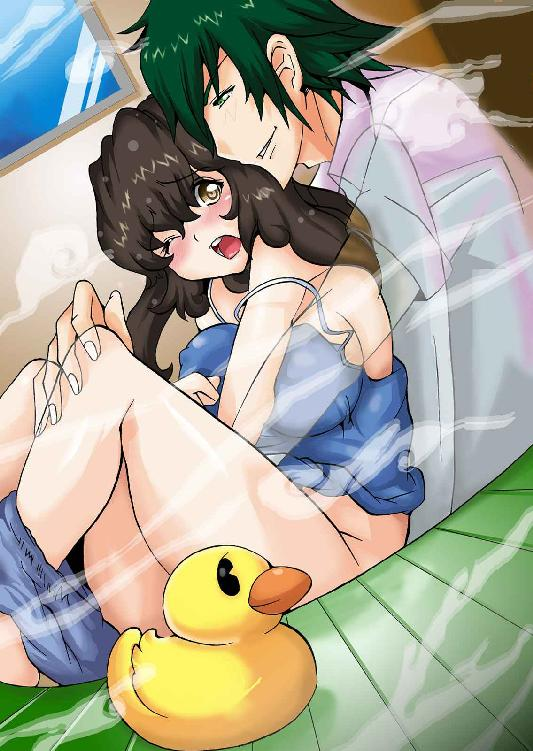
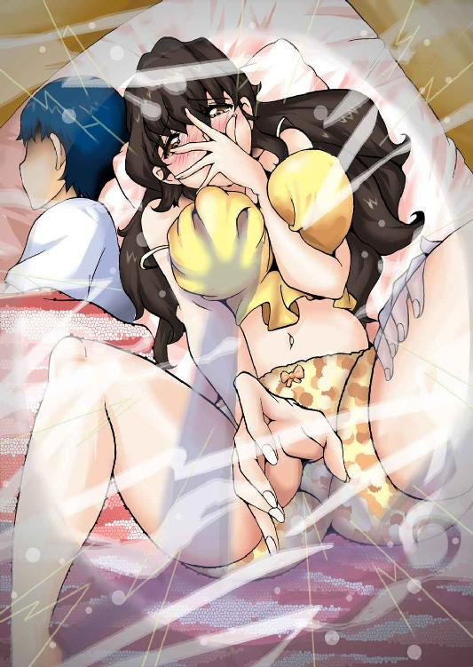

| イケメン幽霊シェアリング (ディープラブ文庫) | |
| 都美たると & 都夢たみお | |
| (2015) | |
イケメン幽霊シェアリング
都美たると
都夢たみお
本作品の全部または一部を無断で複製、転載、配信、送信したり、ホームページ上に転載することを禁止します。また、本作品の内容を無断で改変、改ざん等を行うことも禁止します。
本作品購入時にご承諾いただいた規約により、有償・無償にかかわらず本作品を第三者に譲渡することはできません。
本作品を示すサムネイルなどのイメージ画像は、再ダウンロード時に予告なく変更される場合があります。
本作品は縦書きでレイアウトされています。
また、ご覧になるリーディングシステムにより、表示の差が認められることがあります。
～ プロローグ ～
誰もいない部屋。
わたししか、いない部屋。
なのに......最近、変なんです。
おかしいんです。
誰かに......
そばで......誰かに、ずっと見られているような
......
誰かに......
耳もとで......語りかけられているような？
あっ......
誰かに......触れられているような......
......
あっ、ほら今っ......
髪に......顔にっ......腕にっ......
きゃっ
誰かが......お尻を触った？
そう言うの......信じていない訳じゃないけど......
霊感とか......あるほうじゃないんだけど......
なにかが......誰かが......
そばにいるのを感じるのです。
......
感じます。
......
感じちゃうのです。
ひとりのときは、もちろん。
寝ているとき。
テレビをみているとき。
ごはんを食べているとき。
服を着替えているとき。
おトイレに入るとき。
いつも、時間など関係なく......
それを......
彼を......
そばに感じます。
感じて......
感じすぎちゃって......
声にでちゃいそうなんです！
あぁ。
だめぇ......
今っ......部屋に......
友達がきてるのにっ
そんなことしちゃ......
あぁ～。
だめだめっ
今はほんとにダメなんだってばっ。
だって......
だって今......わたし、
彼氏と......
大好きな彼と......
ふたりきりで......いい感じなんだからぁ～
やめて。
見ないで。
聞かないで。
言わないでっ。
......
入れっ......
............
入れてこないでぇぇぇぇえ～
......
............。
～ 第１霊 ～
休日の東京。
晴天。
昼間の気温は28度。
歩行者天国となっている車道は、家族連れやカップルで賑わっている。
まだまだ人気のパンケーキ屋には、女子高生を中心に若い女の子の長蛇の列。
秋物の洋服が並び始めたショップからは、店員さんの呼び込みの声が聞こえてきます。
ママさんの隣りで、ジュースをこぼした男の子が大声出して泣いている。
スマホと向き合いながら、リズムに乗るファッショナブルなお兄さん。
自慢のブランドをチラつかせて、街灯インタビューを受けるセレブなマダム。
「人が......あんなにいっぱい......」
わたしは毎朝こうして人々の何気ない日常を観察しています。
朝の情報番組〝おはようモーニンくん！〟の、一視聴者として。
この番組の名物コーナー 〝きのうの人々〟。
その名の通り、街にいた人々や、その風景をただただウォッチングするだけの内容。
ひねりも凝った演出はないけど、そこがいいんです。
ある意味このコーナーは、わたしにとっての〝窓〟であり〝目〟でもあり......
......〝リハリビ〟の一環でもあるのです。
『さてっ、続きましては今日のうきうき占いのコーナーです......』
ピッ！
テレビを切って、ベッドの上で背筋をグンっと伸ばした。
膝上でノートパソコンを開いて電源を入れた。
スマホで、ＳＮＳアプリのメッセージチェック。
〝夜、ＴＥＬしたんだぞ─！ ムシするとかナニさまぁ？〟─ マリマリ
〝ウチのＨＤＤぱんぱんっス。 灼熱囚姫の第12話録っててプリーズ〟─ マリマリ
〝ゴメン！ にゃんこペン借りっパだったわｗｗ てかいる？〟─ マリマリ
〝あ─またタクヤ泣いとるわぁ 桜子かわってぇぇ～〟─ マリマリ
〝（中略）〟
〝12話録れた～？ 確認オネガイコツ〟─ マリマリ
〝牛乳は─？ どっちのメーカーだっけ？ 明神？ 森泳？〟─ マリマリ
〝てか。コンビニつぶれてるしｗｗ〟─ マリマリ
いつの間にか、たまっていたメッセージ。
慌ててまとめて即返信。
ピコン！
それから、ものの数秒で返事が届いた。
〝そんなアンタは まぢリア充〟─ マリマリ
リア充......
いえいえ、わたしはそんな者じゃありません。
確かに毎日、こうして一日中この部屋にとじこもって、テレビとパソコンとネットに囲まれた生活をしていますけど。
パンプスの靴ずれや、ギュウギュウの通勤電車、嫌味な上司に悩まされることもありませんけど。
雨の日も、風の日も、暑い日も、寒い日も、濡れず震えず汗かくことなく生きていますけど。
それが〝リア充〟と言うのなら、確かにそうかも知れないですけど......
......
何もスキ好んでやっている訳ではないのです。
一応......それなりの......
理由があって......
仕方なく......こんな生活を。
あっ、紹介が遅れましたが......
わたしの名前は、秋葉桜子。
元ＯＬの25歳。
昔は明るくしていたセミロングの髪も、今はすっかりダークブラウンで伸び放題に。
背はそんなに高くないですけど、モデルっぽい手だね......って言われたこともあります。
ちょっと大きく見えちゃうヒップがコンプレックスだったりしますけど、その視線を上手くカバーしてくれる立派な......バストを......持ち合わせています（照）。
住まいは、少し都心から離れた町にあるワンルームマンションの１階。
仕事は、えっと......そのぉ......
いちおう〝小説家〟やってます！
正直......売れてはいませんけど、何とか暮らしていけるくらいの収入はあります。
えっ？ ジャンル？ 内容......ですか？
それは、えっと、まぁその......そこは〝企業秘密〟ってことで（汗）。
ＯＬ時代に趣味で書いていたものをネットで公開していて、それがたまたま、とある出版社の編集部の人の目にとまって、今に至る訳です。
ピコン！
ＳＮＳアプリが鳴った。
別グループのメッセージ。
〝きょうは残業あるけど、０時までには行けると思う〟─ 総一郎
総一郎......さん。
えっと......
わっ、わたしの......〝彼氏〟です。
通販関係の会社で営業を担当しています。
性格は優しくて、とても頼りがいのある先輩。
彼との交際は、いわゆる社内恋愛がスタートで......
紆余曲折、色々ありまして......
うん（汗）
上司や周りにバレちゃう前に、わたしが会社を辞めちゃったので、特に大きな問題はない......感じです。
唯一、そんなわたしたちの関係を知っているのは......
「あっつぅ～。なんか外っ......まだ真夏みたいだわっ......」
声をガラガラにさせたマリマリが、うなだれるようにして部屋に入って来た。
彼女は元同僚の女友達。
ＳＮＳのアプリで、大量のメッセージを送ってきていた、あのマリマリです。
本名は草野麻理絵、25歳のＯＬ。
わたしたち（わたしと総一郎さん）の関係をずっと前から知っている良き理解者で、何でも話せる大親友。
二つある合いカギの〝ひとつ〟を、持ってもらっています。
もちろん、もうひとつは総一郎さん（照）。
でっ。
マリマリですけど......
ＯＬ時代に、総一郎さんとのことで、よく相談に乗ってもらって......
と言うか、彼女がわたしたちの〝キューピッド〟......って感じで......
「ねぇ」
「え？ あっ、おはよ」
「じゃなくて......」
キューピッドが悪魔のような形相でこちらをにらんでますっ。
「はっ、はい？」
「だからさぁ、夜に電話したんよ？ 何で出なかったの？」
「あっ、それならさっき〝返信〟......送った......よ？」
「返信って〝ごめんね〟の一言だけじゃないっ！ 全然答えになってないしっ」
「ごっ、ごめん......なさい」
「じゃなくてっ、理由を聞かせてほしいのっ」
マリマリは紙パックの牛乳が入ったコンビニ袋を勢いよくテーブルにおろした。
「電話......マナーモードにしちゃってたの......かな？」
「......」
「えっと、きのうは......ちょっと疲れちゃって......寝てしまったみたい？」
「寝た、って......ぢゃあ12話の件は？ もしかして録ってくれてないのぉ？」
「あっ......うぅ、ごっ、ごめんなさい」
「まぢでか......こっちはスーパー探して、朝市特価の牛乳を見知らぬおばちゃんと争奪戦をしてきたって言うのにぃ？」
「ごっ......ごめんね、ほんとに、ごめんなさい」
ベッドの上でペコペコ頭をさげても......
説得力......ないですよね？
マリマリはさらに息を荒くして続けた。
「今、疲れて寝ちゃった、って言ったけどさぁ」
「うっ、うん......」
「何して疲れたの？」
「え？」
マリマリはくんくんと犬のように鼻をきかせて部屋中を嗅いでいる。
「おっ......」
「お？」
ギロリと彼女の鋭い視線が突き刺さる。
「お仕事に......決まってる......じゃない？」
「仕事？」
ノートパソコンのキーボードを慌てて〝エアー打ち〟して見せる。
「あれ？ それなら一旦落ち着いたって言ってなかった？」
「......だったんだけど、急に締め切りが早くなっちゃって」
「ウソね？」
「うっ、ウソなんかじゃないよぉ」
「ホントに？」
「ホントっ」
「誓える？」
「誓いますっ」
「まぢなのね？」
「マジですっ」
「まぢ中のまぢなのね？」
「はい」
くんくんするのを止めて、マリマリがベッドに腰をおろした。
「んじゃ......仕方ないかっ」
「はい？」
「ははっ。ウチはてっきり、カレシとまたイチャイチャしてたのかと思ったよ」
急にニヤケた顔で肩をツンツン突いてきた。
「イチャイチャ......しちゃだめなの？」
「なにを、この〝リア充娘〟がっ」
「やめてよ、その言い方ぁ」
「だってズルいじゃん、アンタのカレシ、究極に優しいんだもんっ」
「えっ？」
「そこそこ？ カッコイイしさっ」
口をとがらせるマリマリ。
「マリマリだって、彼氏さんと......ラブラブじゃない？」
「タクヤとぉ？ どこがぁ～」
そう言いながら彼女は少し照れるようにしてベッドからおりた。
そして、あたかも自分の部屋みたいにＨＤＤレコーダーの電源を入れた。
起動して画面が立ち上がる少しの時間に、コンビニ袋の中を取り出した。
「頼まれてたの買ってきたよ。おつり、ここに置いとくねっ」
「ありがと」
作業を止めて、少しマリマリを手伝うことにした。
「いいよ、わたしがやっとくから、アンタは仕事しなよ」
「えっ」
「いいから、いいから」
「あっ......うぅん」
時刻は８時10分。
彼女は出勤前にわざわざこうやって、わたしの生活に必要なものを買って届けてくれたのだ。
いくら親友とは言っても、ここまでしてくれるなんて......
本当に、申し訳ない気持ちでいっぱいになる。
「お礼とか、そ─ゆ─の......出世払いでヨロピクっ」
そう言ってマリマリは、せっせと片づけまでしてくれた。
テレビに戻り、リモコンで録画済みのタイトルを確認している。
「あんたさぁ......」
「え？」
「少しは、〝練習〟とか、してんの？」
「練習？」
「外よ、外に出る練習っ」
「あっ......んん」
「気の毒だとは思うんだけどさぁ、アンタの例の〝トラウマ〟」
「......」
「やっぱ、心の問題だと思うんよ？」
「......」
「かれこれもう１年になる？」
「えっ」
「こうして閉じこもってばかりいても、あんまし良くないと思うんだよなぁ」
「......」
「アンタには、たまたまそうやって仕事があったからいいけど......」
「......」
「一切、外出が出来ないってのは、大変よ、今後......きっと」
「うっ......うん、分かってる......」
理由があって、こんな生活をしているわたし。
部屋にずっと閉じこもったままの生活。
１年近く、一歩も外出していない生活。
それは......
わたしの抱える......
〝トラウマ〟のせい。
そのトラウマの原因は......
......
〝事故〟なんです......
交通事故。
約１年前にこの町の、とある交差点で〝交通事故〟にあったのです。
その時は、幸いにも大きな怪我もなく大事には至らなかったのですが......
......。
その頃から外に出るのが怖くなってしまって......
気がつけば、この部屋から一歩も出られなるくらいにまで悪化して......
実家の両親には、実はまだそのことは伝えていないのです。
だって、心配かけてしまうから。
何とか小説で食べていけているので、その辺は上手くごまかせているのですけど......
このままずっと黙っているのも、良くないことは分かっています。
食料品や衣料品、その他、必需品の買い物は、親友のマリマリと、彼氏の総一郎さんが手伝ってくれて......本当に助かっています。
と同時に、申し訳なく思ってます。
感謝してもしきれないほど......本当に。
そんなふたりに甘えっぱなしのわたし。
合いカギを渡している時点で、なんだか......もう。
マリマリの言う通り、そろそろ本気でトラウマを克服しなくちゃ。
......と、いつも思っているんですけど......
「アンタのカレシもさぁ、優しいから何も言わずにいてくれてるけどっ」
「えっ？」
「将来のこと考えてみ？ 一生こんな生き方でいけると思う？」
マリマリの言葉が、グサリと心に刺さった。
わたしはわたしなりに努力はしている......つもり......なんです。
以前は見ることも出来なかった窓の外の風景も、今では、とりあえず覗く程度のことは出来るようになりました。
配達物を受け取りに、玄関先に立てるようにもなった。
テレビを通してだけど、街中や交差点、人ごみや雑踏を見て聞いても平気になった。
朝の情報番組〝おはようモーニンくん！〟のおかげ......かな。
......けど。
やっぱり、まだ全然ダメ。
玄関に立つのが精一杯。
以前にも、一歩だけ外に出てみようと試してみたのだけど......
案の定......すぐに足がすくんで、震えて、頭が真っ白になって、倒れそうになった。
そこまでひどい（症状）なんて、マリマリも総一郎さんも、きっと知らないと思う。
けど、ふたりとも、優しいから......
そんなわたしの側に、ずっといてくれる。
こんなおバカでワガママなわたしを支えてくれている。
なのに、ちっとも進歩も変化も見せないわたしって......
「あぁっ!!」
突然テレビの前のマリマリが大声を出した。
「なっ、なに？」
「録れてんじゃん！」
「えっ？」
「昨夜の12話っ！ ちゃんと録ってくれてんじゃん!!」
「......!?」
ＨＤＤの録画済みタイトル画面に、彼女に頼まれた番組名があった。
「あぁ～サンキュ～桜子ぉ♪ 心のトモよ～♪」
抱きついて喜んでいる。
そう言えばあの番組、以前にも何度か録画を頼まれたことがあった。
何気なく〝毎週録画〟設定にしていた......のかも。
「えっ......えへへへ......実は......ちゃんと録っていたのですっ」
あっさりウソをついてしまう、わたし。
「んじゃまた今度見せてね、それまで消さないでねっ」
「うっ......うん、わかった」
リストウォッチで時刻を確認したマリマリは、慌てて玄関に立った。
「今度って、いつ頃になるのかな？」
「わかんないけど、またメッセするからっ、じゃあね」
「あっ、ありがとう、気をつけてねっ」
「アンタもっ......背後には気をつけなよぉ～」
舌を出してオバケのポーズ？
おちゃめな顔でわたしを脅して、マリマリは会社に向かった。
今の、どういう意味かしら......（汗）
......
あ。
そ、そうそう......それで思い出したのですけどっ。
さっきは〝ちっとも進歩も変化も見せないわたし〟って言いましたけど......
それは、ちょっぴりウソ。
実は少しだけ......〝変化〟がありました。
でも、それは決して良い変化とは......言えない感じで......
なんでしょうか？
こうしてずっと部屋に閉じこもっているから......？
神経が研ぎ澄まされちゃった......のでしょうか？
なんだかこう......今までにない、今までに感じたことのない感覚？
......感触？
わたしはそれまで、そういうオカルト的な......
霊感？
そういうものとは一切、縁がなかったんです。
......ハズなんです......が。
最近。
「......」
朝日に照らされたワンルームをゆっくりぐるりと見渡した。
「んっ？ んん......気のせいだよね」
最近、何かしらの、人の気配のようなものを感じたり、感じなかったり......。
トラウマを抱えたまま、閉じこもり生活をしてる部屋に......
〝幽霊〟だなんてほんとゴメンですからっ。
わたしは慌ててベッドに戻ってノートパソコンを開いた。
カタカタカタっ
こうして仕事に集中していると、そんな怖いことも、時間さえも忘れることができるのです。
カタカタカタカタっ
ふと、壁掛けのカレンダーを見た。
日付に赤い×印が沢山並んでいる。
原稿の締め切り日まで、あと数日っ。
やばい......
幽霊なんかより、こっちのほうが現実的で、断然怖いです。
カタカタカタ......！
それから無心に、無我夢中に、キーボードを叩いてました。
時刻を忘れ、空腹をも忘れて、気がつけば部屋は真っ暗に。
物語の第12章を書き終えて、データをセーブ。
大きく息を吐いて、ふとテキスト画面から目を外したその時。
光りを放つノートパソコンの画面に、何か動くものが映ったのです。
黒い......人影のようなもの。
画面に......映る？
......っていうことは......
うっ、後ろに......いるって......こと......よね？
ゴクリ。
部屋全体に......身体中に緊張が走る。
ゴソゴソゴソ。
細かな物音が、後ろから聞こえてくる。
出た。
出ちゃった!?
ゆっ......幽霊!?
ススッ、ススッ、ガサガサッ、ススッ、
玄関あたりから、何かがゆっくりと何かが近付いてくる。
部屋は真っ暗でノートパソコンの光だけが私の周囲を照らしている。
画面にうごめく人影。
怖くて振り向くことが出来ない。
とりあえず、わたしは右手で枕をぎゅっとにぎりしめた。
いざとなったら、それを投げつけるつもり......
ススッ、ススッ、ガサガサッ、ススッ......
ススッ、
パッ！
突然、まばゆい光がわたしの視界を奪った。
その瞬間、わたしの右肩に何かが触れたっ。
「きゃあああああ！」
!!
「えっ、ちょちょっ......桜子ちゃん!?」
背後から聞こえたのは、聞き覚えのある優しい声。
それが誰だかすぐに理解して、振り向いた。
「そっ......総一郎さん!?」
「ごめんね、脅かすつもりは......なかったんだけど」
彼はとても申し訳なさそうな顔をわたしに見せて、膝を床におろした。
はぁ～......
安堵のため息を大きく吐いて、胸をなでおろす。
ベッドの横で、心配そうに見つめる彼と目を合わせた。
「仕事中だと思って......ほんと、ごめんね」
「ん─ん、わたしこそゴメンなさい......大きな声......出しちゃって」
......!?
すると総一郎さんは、そっと上から覆い被さるようにわたしを抱きしめてきた。
その腕に手を乗せて、頰を合わせあってお互いの温もりを感じた。
「遅くなってごめんね」
「ん─ん」
「まだ......仕事終わらないの？」
「えっ？」
「だってもう、11時過ぎてるよ」
「えぇ!?」
ふと、時計の針を見て、時の早さを感じた。
「また、何も食べてないんじゃない？」
彼は持っていたスーパーの袋の中を出して見せた。
「即席ものになっちゃうけど、これしか残ってなくて......」
近所のスーパーは、夜中12時まで営業している。
彼は、よくそこで食材やお弁当を買ってきてくれるのです。
今夜は、えっと......透明のパックに入った......
「おそばだけど、いい？」
「あっ、はい♪」
ノートパソコンを閉じて、わたしは彼と一緒にキッチンに立った。
「ちょうどこういうの、食べたかったから」
「ごめんね、本当はパスタとか、お肉系？ ......あれば良かったんだけど」
ふたり分の即席の麵を、ざるに移して水でほぐしていく。
「こんな時間だもん、カロリーは控えなきゃです」
「そうだね」
狭いキッチンに身体をぴったり合わせて並んで立っている。
こういう何気ない雰囲気に、わたしは幸せを感じている。
「総一郎さんも、お疲れ様っ」
「あっ......うん、ありがと」
ちゃっちゃっと水を切って、ほぐした麵に氷を数個落としてお皿に盛った。
小鉢にめんつゆとわさびを入れて、ベッド横の小さなテーブルへ運んだ。
「明日も出社、早いんでしょ？」
「うん、だから今夜は泊まっていくよ」
「えっ!?」
ドキンッ！
思わず視線を下にした。
ドキドキドキ......
彼は、お箸を親指にはさむようにして手を合わせて言った。
「邪魔になるようだったら、帰るけど......」
わたしも手を合わせて答えた。
「じゃ......邪魔だなんてっ」
嬉しい。
こんな時間でも......ふたりきりになれるだなんて。
顔を赤くしながら、お箸で小鉢のわさびを解いてかき混ぜる。
照れてるの、バレてるかな？
そんなわたしを見て、優しくほほ笑む彼。
今日は木曜日。
厳密には金曜日の午前０時過ぎ。
ふたりだけの夕食が始まった。
......
ズズズっ、ちゅるちゅる......
やだ、はしたない。
がっついちゃった......
わたしっ、かなりお腹が空いてたみたい。
無意識のうちに、一気に沢山おそばを頰張ってしまった。
正面で彼と目が合って、また顔が赤くなった。
彼はニッコリほほ笑んだ。
少し落ち着いて、テレビをつけた。
今日一日のニュースのラインナップが流れる。
音声とＢＧＭに合わせて、おそばをすする音をごまかしてみた。
はずかしいっ。
でも、こう言うの、いいなって思った。
こう言う何気ない感じ。
まるで、本当の夫婦生活みたいで。
まだまだ少し先になるかも知れないけど、ふたりの〝未来〟が見えた気がした。
でも、ちょっと......
叱られてみたい。
そんな気持ちも、ちょっぴりあった。
お皿の上のふたり分のおそば。
ここからここが、わたしの分......
特にそんな〝境界線〟は作ってないけど、明らかにわたしの分が減っている。
彼はテレビを見るふりして、自分のおそばを、そっとこちらに分けてくれた。
「あっ、ありがと」
「ん？ なに？」
飾らない優しさ。
一日も早く、彼と一緒になりたい。
結婚......したい。
それまでには、なんとか......絶対にこの現状を......
このトラウマを、克服しなくちゃ。
「ふぅ、もうお腹いっぱい」
グルリと一周、お腹をさすってみせる総一郎さん。
「ごめん、残り......食べられるかなぁ？」
「えっ？」
お皿の上のおそば、ほとんどの分をわたしに寄せてくれた。
「あっ僕なら大丈夫。実は残業中に上司から、菓子パンの差し入れがあったんだよ」
「え？」
「２つもね」
「そっ、そうだったの......」
ほんとかなぁ？
でも、彼のその優しさを断ることも出来なくて、
ちょっぴり遠慮しながら残りのおそばを頂いた。
コップのお茶をひとくち飲んで彼は言った。
「ごめんね、もう少し長い時間、側にいてあげられたらいいんだけど」
「そっ......そんな」
同棲も考えました。
現に、以前一回だけ、そのことを彼に聞かれたことがあったんです。
〝同棲してみない？〟
......
でも、わたしは首を縦に振りませんでした。
だって、今、同棲なんかしちゃうと......
きっとわたしのことだもん、優しい彼に、今以上に甘えてしまう。
ずるずるとこのまま、トラウマを克服もしないまま、ずるずると......。
ほんとに......ダメになっちゃう。
......
......だから。
彼と共に、生活を、人生を共にするその日まで......
我慢しよう。
その間に、トラウマを克服できるように......がんばろう。
そう、心に決めたのです。
......なのに
このありさまです。
ちゅるん。
最後の一本をお腹に納めた。
「ごちそうさまでした」
「はい」
手を合わせたわたしを、じっと見つめてくる総一郎さん。
思いもしないその熱い視線に、また心臓がドキンとなった。
え？ ......なに？
彼はすっと立ち上がって、お皿と小鉢をキッチンに運んだ。
「あっ、洗わなくていいですよ、後でわたしがやりますから」
「まだ、お仕事残っているんでしょ？ 僕がやるから、気にしないで始めて」
「え......」
お皿を洗う彼の後ろ姿にキュンとなった。
今すぐにでも後ろから抱きつきたい気分。
ちょっとしばらく......
そういうの......
なかったから。
でもダメダメ、彼だって残業で疲れているんだし、明日も早いんだし。
ベッドに戻ってノートパソコンを開いた。
タッチパッドでテキストの続きにカーソルを合わせる。
......
第13章。
ようやく実ったふたりの恋愛に、大きな悲劇が訪れるところから始まります。
物語のセオリーとして、どうしても書かなくてはいけない展開。
書き始める前から決まっていたことだけど、登場人物に感情移入してしまった今、
そこを書くことに、どうしても躊躇してしまうのです。
なんだか......わたしと、総一郎さんとのことが、かぶってしまって......
思うように手が進まない。
ずっとさっきから......
画面と、にらめっこしたまま。
「煮詰まってる？」
「あっ」
総一郎さんがわたしの背後から包み込むように両手を回してきた。
「進まないなら、あしたにすれば？」
「えっ」
彼は右手でそっとノートパソコンを閉じて、わたしの膝からおろした。
チュッと首筋に軽くキスをして、今度は強く抱きしめてきた。
「総一郎さん......」
彼が甘えてくる。
この色気のない半袖短パンの部屋着姿のわたしに。
暑くてブラ、つけてなかった。
トクトクトク......
早まる鼓動を確かめるように、彼の手が触れた。
「あっ」
熱い吐息がうなじへかかり、ゾクンっと身体が反応する。
「桜子ちゃん......」
「そっ、総一郎さん......」
ベッドのきしむ音。
彼は、あっという間にわたしの上になった。
じっと見つめ合って、目を閉じて......
唇を重ねる。
とてもやわらかい感覚。
気持ちいい感触。
......久しぶり。
もうキスだけで、身体がとろけちゃいそう。
Ｔシャツの中に彼の右手が入ってきた。
ぷにっぷにっと何度か弾力を確かめるように、乳房に指を埋めていく。
「あっ......んん」
彼のあたたかい口内。
わたしは〝おねだり〟するように舌を入れた。
それを優しく含んで、吸ってくれる。
指で乳首を優しくさすられる。
熱くなっていく下腹部に、思わず力が入った。
そこに、彼の左手が触れた。
指をゆっくり上下させて、優しく刺激する。
「だめっ......そこっ」
「ん？ ここ？」
「やっ......あぁあん」
悶えて、身体をくねくねよじらせて、少し恥じらった。
電気をつけたまま、明るくて、とても恥ずかしい。
テレビの音が、エッチな吐息をかき消してくれているけど、
顔も、胸も、太ももも、全部見えちゃって......恥ずかしい。
「あっ」
でも......
「やだっ、待って......」
ほんとは......嬉しいの。
「きれいだよ、桜子ちゃん」
「あぁ」
Ｔシャツをまくられて、ピンク色の乳首が見えた。
ショーツを巻き込みながら短パンが、膝の下までおろされた。
彼の熱いキスは、唇から首筋へ移り、何度も吸って舌をはわせていく。
その度に、ピクピクと身体が震える。
柔らかな彼の舌は肩甲骨へ移り、さらに下......胸の谷間へとおりていく。
今度は少し強く、両手でギュッと両方の乳房を寄せるようにされた。
そこに顔を埋めた総一郎さんは、まるで赤ちゃんのように吸いついて離れない。
背筋を半円状に反らせて、わたしは彼の頭を両手で包み込んだ。
「はうっ......んん」
吸われて、舌で転がされて、また吸われて、何度も繰り返す。
その度にわたしの理性は薄れていく。
抱えていた不安や恐怖が、魔法のようにかき消されていく。
「あっ！」
頭の中を電気が一気に駆け巡るような感覚。
下腹部が痙攣するようにビクビク細かく震える。
彼は頭を、スっと下腹部へとおろしていった。
湿った茂みを越えて、彼の唇が熱くなる秘部に優しく触れた。
濡れてしまった、その周りを彼の舌がなぞる。
「そっ、総一郎さん......あっ」
「桜子ちゃん、もう......こんなに」
ぐにゅっと二本の指で広げられたその中に、彼の舌が入ってきた。
「あぁっ......」
入り口の浅いところで、ちゅくちゅくと音を立てながら出入りする。
時々、唇全体を押しつけて、ちゅっちゅっと吸われる。
「ひぃっ......ん」
彼の舌は秘部の上へと移り、小さなグミを見つけた。
ドクドクとこぼれ流れる蜜汁をたどるように、彼の指が壺の中へと入ってくる。
ギュッと、ヌルっと、奥へと進んでいく。
その指を、熱くしたピンクの肉壁が包み込んでいく。
「痛くない？」
「は......はい、大丈夫です」
身体のあちこちが......
全身が......敏感になっていく。
感覚や神経、五感すべてが、研ぎ澄まされていく、この感覚。
『......もっと、激しく......』
......
......？
『もっと、激しく......』
え？
なに？
今の......声。
ふと目を開けた。
目の前には、恍惚とした顔の総一郎さん。
「いい？ いくよ？」
「あっ......」
ぐっと下から力が加わって、一気に熱いものが中に入ってきた。
「あっ......あぁん」
「桜子ちゃん......」
上になった彼が、全身を震わせて、腰を動かしていく。
出て、入って、出て......
ゆっくり、優しくそれを繰り返していく。
『......もっと......もっと激しくして......』
!?
えっ？
また、......あの声!?
なっ......なんなの？
息を切らせながら、わたしの首筋を甘嚙みをする総一郎さん。
さっきの声......
彼のじゃない。
......
えっ？
って？
もしかして......
わたし!?
「あっあっ、あぁ～......」
彼の動きに合わせて、口からこぼれるエッチな吐息。
『......ほんとうは......もっと、激しくしてほしい......』
やだっ......
また、聞こえた!?
なっ......なんなの一体？
もっと？
激しくしてほしい......だなんて。
まっ、まるで......
今のわたしの......
本心......みたいな!?
「!!」
思わず、手で口をふさいだ。
今の声......
そう......
きっとそう......
あれ、わたしの声なんだ。
無意識のまま、わたしっ......
本心を口にしちゃってた!?
「ごめんっ、桜子ちゃんっ」
彼は、顔を真っ赤にして、下半身の動きを早めた。
「あっあっ......んん......あっ！」
下腹部から、ズンズン込み上げてくる熱い感覚。
汗まみれになりながら、わたしに覆い被さる総一郎さん。
ゾクンっ。
ぶるぶるっ......
その瞬間、不思議な感覚が身体の中を走った。
イッちゃった......の？
......え？
ちがう。
だって、彼はまだ、わたしの中で動いているよ？
今の......
あの時の......イッた時のものとは、全然別の感覚っ。
そっと、恐る恐る目を開き、彼の肩越しから天井を見上げた。
ゾクゾクっ。
えっ？
目の前に広がるクリーム色の天井に、ゆらゆらと何かが揺れて見えた。
煙のような、モヤのような。
それはゆっくりと形を変えて、うっすらとしたひとつの塊なった。
なにあれ？
えっ？
ひっ......人っ？
人影!?
「!!」
その人影が天井から、ゆっくりゆっくりこっちに向かっておりてくる。
髪型、顔の輪郭、鼻筋、口元まで、くっきりして見えてくる。
「いやっ、だめっ......来ないでぇ」
「桜子ちゃん？」
「来ちゃだめっ、やめてぇ」
「ごめんっ......もうガマン出来ないよっ」
「きゃぁああああ！」
上から忍び寄るその人影に恐怖して、わたしは力強く総一郎さんにしがみついた。
「あぁっ！ 桜子ちゃん!!」
ドクンっ......ドクドクッ。
総一郎さんは下半身を痙攣させながらわたしを強く抱きしめる。
下腹部に......壺の中に、彼の熱いものがビュンビュンとほとばしった。
「あっ......はぁあ」
一瞬、気を失うようになって、頭の中が真っ白になった。
なっ......
なんだったの？
......今の。
......
ふと、気がつくと、あの人影は消えていた。
ほっとして、もう一度、彼をぎゅっと抱きしめた。
「ごめんね、桜子ちゃん」
「えっ？」
「なんか......無理矢理......してしまったみたいで、その......」
わたしの隣りで、申し訳なさそうな表情を見せる総一郎さん。
ちがうの......今のはわたしがっ。
わたしが、変なこと口走っちゃったから......。
「ごめんなさい、わたし......悪いのは全部わたしだからっ」
「えっ？」
「こんな生活を......続けているわたしが悪いんです......」
そう、きっとそう。
だから、さっきみたいな変な......
悪い妄想を見ちゃうのよ。
霊感とか、そういうのじゃない、きっと。
最近、感じる、あの感覚......
さっき、目の前に現われた〝人影〟......
それらは全部、わたしの心が、生み出した悪い妄想。
「桜子ちゃんは、何も悪くないよ」
優しい言葉をかけながら、そっと抱きしめてくれる総一郎さん。
『......なんだよ、それ......』
えっ？
「ん？ どうしたの、桜子ちゃん」
「今、何か言いました？」
「何って......だから、君は何も悪くない、と」
「ん─ん、そのあとですっ」
「え？ そのあとって......僕はなにも」
彼に抱きしめられながら、そぉ～と部屋を見渡す。
確かに今、聞こえた。
しかも、男の人の声。
......男の人......
!?
......て、いうことは？
わたしの......〝本心〟
......じゃ、ないの？
「大丈夫？ 桜子ちゃん」
「えっ？」
「きっと、......毎日の仕事で疲れているんだよ」
彼は、チュッとおでこに軽くキスをしてくれた。
彼の胸の中に顔を埋めて、目を閉じた。
トクントクンと、総一郎さんの鼓動が聞こえる。
「そうですよね......わたし、疲れている、だけですよね？」
「うん」
耳もとに届いた彼の優しい返事。
胸の鼓動と相まって、とても心地よく感じた。
まるで胎児の頃の記憶がよみがえったみたいに。
自然とまぶたが重くなっていって......
あっ、という間に......
夢の中。
......
............。
ピコン！
「!!」
脳天を貫くような電子音。
ＳＮＳアプリのメッセージ受信。
〝おは♪ 今夜泊まりにイクかんね〟─マリマリ
泊まりに......？
あっ、そうだった。
そうなんです。
金曜日は、大体決まってマリマリが泊まりにくるのです。
ちょっとした女子会？......が行われます。
ふたりにとって、大切な息抜きの時間。
総一郎さんもそれを理解してくれていて、金曜日は例外以外は立ち寄らないことにしてくれています。
ほんとは、来てほしい日もあるけど、なんとなく決まりみたいのが出来ちゃって......。
それに彼は......
総一郎さんは......
「!!」
ハッとなって、ベッドから飛び起きた。
きょろきょろと周りを見渡した。
色々と後片付けされていた。
さらにテーブルの上には、ラップのかけられたパンと目玉焼きの朝食セットまで用意されていた。
「そっ、総一郎さん......」
彼はきっと、わたしを起こさないようにして、黙って出勤したんだ。
テーブルの上には、小さな置き手紙。
アプリでじゃなくて、手書きで残してくれるのが、彼の素敵なところです。
〝しっかり食べて、お仕事がんばってね。また連絡します。総一郎〟
嬉しかった。
と同時に、自分が情けなくなりました。
何度も玄関に向かって頭をさげた。
ありがとう、
そして......
ごめんなさい。
......
それからすぐに気合いを入れて、シャキッと姿勢を正した。
ユニットバスで熱いシャワーを浴びた。
洗って、拭いて、乾かして。
テーブルの上の総一郎さんの朝食っ。
頂きます！
モグモグ。
じゅんわり、お口に染みわたる愛の味♪
よく嚙んで吟味して、しっかりお腹におさめた。
髪を後ろにギュッと束ねて、もう一度気合いを入れて。
食器を洗って、歯を磨いて、キンキンに冷えたミルクをコップに注いでテーブルに乗せた。
今日も一日、お仕事がんばるぞっ！
そうね、せめて第18章までは......
いや、......やっぱり無理しないで17章まではしっかり仕上げよう。
そう心に決めて、ベッドの上のノートパソコンをテーブルへとおろして立ちあげた。
セーブ済みのテキストを開いて、いざっ！
両手の指をキーボードへ。
「......」
......
............
......あれ？
......なんで？
......
おりてこないよ？
......
言葉が......
セリフが、全然おりてこないっ。
......。
目を閉じて、天井を仰ぐようにグッと顔をあげた。
「......」
その時、ふと思い出したのです。
昨夜のことを。
彼のことを......
......
総一郎さんとのエッチ......
......
じゃなくて、怖かったほう。
人影のほうです！
確かに見えたんです......
不気味な人影を。
それを、思い出して背筋がゾクっとなった。
「アレのせい......あんなの見ちゃったから仕事が進まないのよぉ～」
すっとその場に立ち上がって、周りを見渡した。
手を合わせて、見よう見まねでお祓いっぽいことを始める。
昔、テレビか何かで見たのを思い出して......
おもむろにキッチンからお塩を取って、ふわっと部屋にまいてみた。
「あっ、悪霊よぉ～、たちさぁ～れ～」
おどおどドキドキ、ノートパソコンにかからないように、さらにお塩をまく。
あとで掃除しやすい範囲で、パラパラとまいてみる。
「この部屋から～、たちさぁ～れ～」
......
......って、
わたし......なにしてるのかしらっ？
『......まったくだよ、てか、オレっ、悪霊じゃねぇし......』
!?
えっ？
「きゃっ!?」
突然聞こえたその声に驚いて、持っていたお塩を全部を床にぶちまけてしまった。
「だっ、誰ですっ？」
......
「誰なんですか？」
......
『......えっ、おぉ？ 聞こえるのか？』
「きゃああ！」
左のほうから声がした。
「うそでしょ？ 幽霊とか、そんなの......うそですよね!?」
『はぁ？ 幽霊ってなんだよ』
「きゃあぁぁ！」
次は右後ろから声がした。
あまりの鮮明な声に、驚いて腰が抜けて、ベッドに倒れた。
『もしかしてお前、オレのこと見えんのか？』
「えぇっ......」
今度は正面からゆっくりと声だけが近付いてくる。
『聞いてんだけど？ オレの姿が見えるのかって？』
「うそうそ、ちがうわっ......これは幻聴ですよぉ～！」
両手で耳をふさいで壁際で身体を丸めた。
『おいっ！』
「!!」
その声は、手でふさいでるはずの耳の奥まで届いた。
気配を感じて、ふと目を開けた。
すると、そこに......
うっすらとモヤモヤしたものが現われた。
それが、徐々に形になっていく。
形に......
そう、昨夜見たのと同じ......
人影にっ！
男の人の姿にっ!!
「きゃあああああああ！」
わたしはそのまま、気を失って床に倒れてしまった。
......なんていうのは、よくある怪談話で。
実際、それを目の当たりにして、あまりにも突然で、あまりにもビックリして......
気を失う余裕なんて、一切なかったのです。
「こっ、来ないでぇ」
『おいおい、そんなっビビることねぇだろ？』
「やだやだっ、来ないで下さいぃ！」
『なんだよっ、人をバケモンみたいにっ』
「だって......おバケさんですよねぇ？ 幽霊さんなんですよねぇ？」
『それっ、初対面の人間に失礼だろっ？ 幽霊とか......マジで冗談キツイっ』
その声の主の姿が、だんだん鮮明になっていく。
まだ全体が青白く見えるけど......
彼の表情、目の動き、手ぶりそぶりがハッキリと見えてきた。
「!!」
わたしは思わず、その姿に息を飲みました。
なっ、なんだか......
あれ？
思ってたのと......
あれれ？
想像してたのと......
あわわ？
ちがっていたものですから。
ドキンっ
なんで？
今、なんでドキンとなっちゃったの？
......
こっ、怖いから......
怖いときの〝ドキン〟ですよね？
『なんだよ？ 人の顔、ジロジロ見て......』
だって、ちょっと......
こんなこと言うのも、変だけど。
彼っ......
いい......感じの......
男性だったから。
......
............
って!?
じゃないでしょ、わたし。
なに変なこと考えてるのっ!?
......
ていうか......
やっぱりなんか変っ。
ちょっと待ってって、感じですよねっ？
だって......
だってだって、
この世にイケメンさんの幽霊って......
ありえますか？
......
あっ。
この世、か、あの世なのかよく分からなくなってますけど......
どちらかと言うと......ほらっ
幽霊の人って......
そう......一般的には......
うつろな目をしてて......
暗い表情していて......
白い着物？
......みたいのを着てて。
とにかく、なんだかうらめしそうに出てくるはずですよね？
『なんだよ？ さっきから......』
あぁ、やっぱりそう。
うん、そうです。
今、そこに見えてるのは幽霊の人でもおバケさんでも、モンスターでもないですっ。
幻覚っ。
わたしの心が、頭が生み出した幻覚なんですよ、きっと。
絶対！
......
この（閉じこもりのままの）現状、ほんとにどうにかしなくちゃ。
......って思っている時に、お仕事の締め切りに追われてしまって......
頭の中がパニックになっちゃって......
とうとうわたしっ......
幻覚を見るまでになっちゃったのですよぉ。
『おい、オレのこと見えてるんなら、少し話を聞いてくれないか？』
「え？」
『え？ じゃなくて、話を聞いてくれっつの』
「......」
『もしもし？』
「あっ......はっ、はぁ～い......またあとで～」
......
昔......
本か何かで読んだことがあります。
幻覚や幻聴の〝対処法〟って言うのかしら？
......とにかく〝それ〟が現われたときは......
適当にあしらって、適当な対応をすること。
目の前に現われた〝それ〟は、生み出した本人の〝欲望〟そのもの。
真剣に、本気で相手にすればするほど、〝それ〟は深く、大きくなり......
次第に心をむしばんでいく。
......らしいですから。
とは言っても......
こんなハッキリクッキリ見えるだなんて......
聞こえるだなんて。
なんだかさっきより、さらに......
人間みたくクッキリ見えてきたような......。
ちょっとセクシーな感じの目元。
その目で、ずっとこっちを見つめてきているんですけどっ。
シャツの胸元なんか......ざっくり開けちゃって......
何気にイイ男をアピールしてるみたいですしっ。
......
もし、これが......
彼が、幻覚だったら......
なんなのでしょう？
そこにいる彼は......
わたしが望んだ、ってことなの？
理想の男性......？
って、言うことなのでしょうか？
......
いや。
いえ。
いえいえ、ちがうよ、ダメダメ～。
わたしには総一郎さんという、素敵な彼氏がいるんですからぁ～っ
『ソウイチロウ？』
「!?」
『あぁ～、昨夜ここに来ていた男の名前か』
「えっ？ えっ？ なんでその名前を知ってるの？」
『は？』
「だからっ、なんで彼の名前を知ってるのですかぁ？」
『......つか、今、お前っ......自分で言ったじゃん』
「えぇ？」
『〝ちがうよぉ、ダメダメぇ。わたしにはソウイチロウさんってゆ─ステキなカレシがいるんだからぁ～〟ってよ？』
......
はっ！
思わず両手で口をふさいだ。
やだ、わたし......また？
心で思ってること、しゃべってました？
ていうか、そんな言い方......してましたぁ～？
『してたよっ（笑）』
「えっ？」
『聞きたくもねぇのに、聞こえんだ』
どっ、どういうことです？
『それはこっちが聞きてぇくらいだよ』
わわわ......
ダメダメ。
なんだかわたし、本当に頭がおかしくなりそうです。
今、わたし、幻覚の男の人と......
会話してますよね？
『だからぁ、オレは幻覚なんかじゃねぇって』
わわっ、また？
心の声......聞かれちゃってます？
『お前の声がデケぇんだよ！』
......。
目の前に、この世に存在しない男の人が......
ふらふら〝半透明〟の身体を宙に浮かべながら......こっちを見ています。
『マジかっ？ オレ、半透明なのか？』
「え？」
『そっ、そう言えば......なんだか身体に感覚がないような』
え？
もしかしてこの人......
自分がどうなっているのか......分かってないのかしら？
『分かってないもなにも、気付いたら......この部屋に閉じ込められていたんだからなぁ』
「とっ、閉じ込められ......？」
『あぁ』
「そっ、それって......いつからなんですか？」
『わかんねぇよ......でも、つい最近のことのように感じるが』
「最近？」
『あぁ』
「最近まで、この部屋に......いたってことですか？」
『あぁ』
彼は、あぐらをかいて、ゆっくりその身体を床におろしていった。
「もっ、もしかして......見て......ました？」
『え？』
「わたしのこと......ずっと」
『見てた......つ─か、見え出したのは、ごく最近のことだな』
「？」
『最初は......うっすら声だけ聞こえてる感じだったんだが......』
あれ？
なんだか......似てません？
お互いの......その症状？
見えた、聞こえた、って。
そう感じたのもなんだか同じ時期......みたいな。
......
......と、いうことは？
......
やっぱりそうだ。
彼は......幽霊の人じゃなくて......
わたしが生み出した......幻覚なんですよ。
確信しました！
『だから幻覚じゃね─っつの』
「......」
『お前の姿が......こう、はっきり見えだしたのは......昨夜くらいだったか......』
「さっ、昨夜？」
『あぁ、お前とソウイチロウって男が、ごにょごにょし始めた頃だ』
「!?」
『お前、マジでうるさいからっ』
「え？」
『あれなんだよ？ セックスの最中に〝もっと、もっと激しくされたいよぉ～〟とか、とてもオレの口からは言えねぇドエロ変態なセリフ、お前連発してただろ？』
「!!」
彼は床からすぅ～っと滑るように半透明の身体を浮かせて、こっちに近寄ってきた。
『あまりにもうるせぇから、お前に言ったんだよ』
「言った？」
『聞こえてたんだろ？ あのとき......オレの声』
「あの......とき？」
『そんなに激しくしてほしいんだったら、黙ってないでそいつにハッキリ言ってやれっ、て』
えっ？
ウソっ。
昨夜......あの時の？
エッチしてたときに......
聞こえてきた？
あの声って!?
『あぁ、オレだよ』
「うそうそっ」
『マジだよ』
「えぇ？ ......てっ。まさか......全部見てたのですかぁ？」
『は？』
「わたしと総一郎さんの......そのっ......アレ......」
『あぁ、パっとしねぇセックスな？』
「なっ......」
ぱっ......
ぱっとしない......セックスぅ？
その瞬間、恥ずかしいのとか色々重なって、
ついつい頭に血がのぼっちゃって......
「もぉっ！」
思わず手元にあった枕を彼に目がけて投げつけた。
ブンっ！
ガシャン!!
「きゃあ！」
枕がテーブルの上のコップにっ。
こぼれてミルクが床にっ！
ノートパソコンにっ!!
バシャ......ァァァ。
「きゃぁあああああ！」
慌ててシーツをつかんでベッドを滑りおりた。
こぼれたミルクの上にシーツを広げた。
トントントン、......吸わせていった。
「あぁ～......やだもぉ......」
幸いにもノートパソコンは底が濡れただけで済みました。
ティッシュで丁寧に角や溝に吸わせるように何度もトントン。
「もっ......もぉ～、これぇ、全部あなたのせいですからからねぇ！」
さっと、ふと振り向く。
静まる部屋を見渡す。
って、あれっ？
姿がない......？
どこにもない。
消え......た？
「......」
わたしは何を思ったのか、ソファの下やベッドのすき間、トイレやお風呂、
あらゆる場所、あらゆるすき間を探した。
彼の姿はどこにもなかった。
......
ほっ。
でしょ？
だから言ったじゃない？
幻覚だって。
わたし、疲れていただけなんだって。
「......！」
っと、油断させて後ろを振り返るっ。
......。
やっぱり誰もいません。
気配すら感じません。
はぁ......。
安堵のため息、ひとつして、ゆっくりソファに腰をおろした。
疲れた......。
そ、そりゃそうですよね。
さっきから全部ひとり芝居をしてたようなものなんですから。
......
足元にはミルクを吸ってビチョビチョになったシーツ。
あぁ、また洗って外に干すのお願いしなくちゃ。
マリマリ、怒るだろうなぁ。
せめてしっかり洗って、来てくれるまで、部屋干ししておこう。
そんなことを思いながら、シーツをそろぉっと浴槽まで運んで、ギュッとしぼって、シャワーで流した。
「......」
さっきの、幻覚の人。
なにを言ってたの？
わたしに......
なにを言いたかったの？
......
トクトクトク
ミルクに染みたシーツを熱いお湯で流しながら、わたしは、鼓動が高鳴るのを感じた。
幻覚として現れた彼を思い出した瞬間。
彼の顔を思い出して......
なぜだか、ドキドキ......
しちゃったのです。
......どうして？
「......あの沖沢って上司、ほんっとサイテーだわっ」
その夜、予定通りマリマリが泊まりにきました。
お願いしていた食品や必需品も、ちゃんと買ってきてくれました。
小さなバルコニーにシーツもきれいに干してくれました。
ほんとうに感謝、感謝です。
カタカタカタ......
わたしはベッドの上で仕事を進めながら、酔いつぶれかけてる彼女のグチを聞いています。
毎週、ちがう名前の上司が登場するけど、今はもう驚きません。
「でさぁ～、そいつがさぁ～......」
彼女はこうして一週間分のストレスを発散しているのです。
いつもわたしの生活を助けてくれて、支えてくれているんだもの。
グチを聞いてあげることくらい......全然。
......
あぁ、グチを聞いてあげることしか出来ないわたしって......
「ん？ 桜子？」
「え？」
「聞いてくれてる？ ウチの話っ」
「あっ......うん、聞いてるよ？」
「てか、さっきから、なにキョロキョロ部屋ん中見てるの？」
「へっ？」
「へっ？ じゃなくて......何か......探してる？」
「えっと......いや......別にぃ」
......と言いつつも、やっぱり気になってたんです。
あの幻覚の男の人......。
また、出てきたりしないかと......
あっ。
決して〝期待〟の意味じゃないですよ。
もちろん不安の意味で......
『そんなに期待されちゃあ、出ねぇわけにもいかねぇか......』
「きゃあ!!」
「わぁっ!!」
マリマリがわたしの声に驚いて床にビールをぶちまけてしまった。
「なっ、なんなの？ 急に大きい声だして......」
「あっ......ごっ、ごめん」
『あれ、この子お前のダチ？』
「え？」
......
えっと、現状を説明しますっ。
金曜日の午後10時過ぎ。
このワンルームには、わたしとマリマリ......
そして、あの幻覚の男の人と、３人っ。
......彼をひとりと計算していいのか分からないですけど......
３人......います。
もちろん彼が見えてるのは、わたしだけ。
そのわたしは、今ベッドの上。
膝の上にノートパソコンを開いてます。
ふたり掛けのソファには缶ビールを持ったマリマリ。
そして、わたしの目の前に......幻覚の男の人。
『何回も言うけどオレ。お前の〝幻覚〟なんかじゃね─からな』
「え？」
『オレはオレで、ちゃんと自立してんだよ。なんでここにいるかは分からんけど......』
「じっ......自立？」
『あぁ』
「えっ、じゃっ、もっ、もしかして......」
『なんだよ？』
「もしかして、あなたは......じっ〝自縛霊〟......なんですか？」
『だからっ、勝手にオレを殺すんじゃね─よっ』
「でもっ......完全に身体っ......透けてるじゃないですかぁ......」
『あっ......やっぱり......透けて見えるのか？ オレ』
「透け透けですよぉ～」
「ちょっ、桜子、大丈夫っ？」
「わきゃっ!?」
マリマリがベッドの乗ってきて、わたしの顔を覗き込んできた。
「さっきから......なんか独り言ばっか言ってない？」
「えっ」
「スケスケとか、何言ってんの？」
「えっ......あっ......えっとぉ～」
酔ったマリマリが充血した目で詰め寄ってくる。
そんな彼女を興味深そうに見ている半透明の彼。
「あっ......ごめんね、声にでちゃってた？」
「えっ？」
カタカタカタっ！
「これよっ、小説のセリフっ」
「セリフっ？」
マリマリと半透明の彼がノートパソコンを覗いてきた。
「今、ちょうど物語も佳境でね......ついつい感情移入しちゃって」
「なにそれ？」
「ごめん、驚かしちゃっ......たよね？」
ゆっくりとベッドからおりていくマリマリ。
そのあとをすぅ～と滑るようについていく半透明の彼。
「まぢビックリしたよ、あんたまるで幽霊とでも話していたみたいだったよ」
『幽霊じゃねぇし』
半透明の彼がマリマリに詰め寄る。
ちょっとちょっと、顔近いですってば。
マリマリに、ひっぱたかれてもしらないですから......
......って、そうだった。
マリマリには、見えてないだ。
『さっきから、幻覚だの、半透明だの......』
「!!」
す～っと音も立てずにこっちへ近付き、真正面でわたしをにらみつける半透明の......
『ナオキだよっ』
「えっ？」
『オレの名前は、......ナオキだ』
「ナオキ......さん......ですか」
『あぁ』
「なっ、名前......あったりするんですね？」
『あるよっ......つか、ついさっき......思い出したんだが』
「さっき？」
『お前、枕投げてきただろ？ ......あのときトッさに避けようとしたら、急に......意識無くなって......』
「幽霊が......意識失うって......」
『だからっ幽霊じゃね─っつの！』
パタンッ！
「!!」
ノートパソコンが勢いよく閉じた。
勝手に......!?
いえ、今......
彼が......
ナオキさんが触れた瞬間でした。
「あれ？ 桜子......仕事終わったの？」
「えっ？」
テーブルにぐったりとしていたマリマリが目を覚ました。
「だって......パソコン閉じたから......」
「あっ......いや、ちがう......の」
ゆっくりとノートパソコンを開いた。
目の前では、彼が......
ナオキさんが驚いた表情で自分の右手をじっと見つめている。
『今オレ......どうやったんだ？ 触れたよな？ ......それに』
「今の......あっ、あなたが......やったのですか？」
『あぁ......多分』
彼はわたしのノートパソコンを両手で何度もつかむようにしている。
スカっ、スカっ......
『くそっ、なんでだ？ さっきは出来たのに』
「ちょっと、やめてくださいっ......なんか画面がビリビリ言ってるんですけどぉ」
『どうやって触れたんだ？ こうかっ？』
ビビビビビ......っ！
彼が触れようとする度に画面が歪んで、変な音が鳴っている。
『よしっ！ も─いっかい気合いを入れて～っ』
「ちょっと待って！ そんなことしたら......」
『おりゃあ!!』
プツン......
「ぎゃあああ!!」
画面が真っ暗になって電源が落ちたっ！
ソファで酔いつぶれていたマリマリの身体がピクンと反応した。
「うぅ、そんなぁ～......セーブ......途中までしかしてなかったのにぃ～」
『なっ何？ オレが悪いのか？』
「もぉおおお......」
『マジ、機械とか......詳しく分かんねぇし......』
「......」
『でもなんか......嫌いじゃね─かな？』
「あっちに......あっちにいってくださぁぁぁい」
『スマンっ、わざとじゃね─んだ』
「出てってくださぁい！」
『!!』
「幻覚とか......幽霊とか......よくは知らないですけどぉ......」
『そっ、そんな怒るなよ......そのパソコン？ オレがなおしてみっから......』
「今すぐっ、ここからっ......出てってくださぁああああああいい!!」
......!!
出た。
出ちゃった！
自分でもビックリするような大きな声が。
怒りにまかせたその大声ひとつで、彼は......
ナオキさんの姿が、ケムリのようになって消えた。
「はぁ、はぁ、はぁ......」
ピクリともしなくなったマリマリがソファでいびきをかいている。
ベッドから立ち上がって周りをキョロキョロ見渡した。
今度こそほんとに消えた？
ここから出ていった？
わたしは、おもむろに玄関へと向かった。
二度と戻ってこないようにと、とりあえずお塩をまいて......
『わりぃ、やっぱ出れねぇわ』
「きゃあ!!」
ぬっと玄関の床下から彼が姿を現した。
『とりあえずだな......オレも反省して......一旦出て行こうとやってみたんだよっ』
「えぇ？」
彼はゆっくりその半透明の身体を玄関に向けて、扉に手を当てた。
両手を使って扉を押している。
その手が、扉の向うに抜けていない。
『なっ？』
キョトンとした顔でこちらを振り向く彼。
「なっ？ って言われましても......」
『おかしいと思わないか？』
「えっ？」
彼は玄関から時計回りに、部屋の壁に沿うように動いた。
四隅を回って見せた。
途中にあるクローゼットや食器棚は透けて通っている。
『オレ......この部屋から出れねぇみたいなんだ』
「でっ......出れない？」
『この壁がなぁ、〝バリア〟みてぇになってやがんだ』
「......」
どっ、どういうことなのでしょうか？
突然、このわたしのワンルームに現われて、今度は出られないだなんて......。
それじゃあ、まるで......
まるで、わたしと〝同じ〟!?
『は？ ......〝同じ〟ってどういうことだ？』
「......」
～ 第２霊 ～
金曜日の深夜２時前。
わたしは自称〝幽霊〟とか〝幻覚〟じゃない、ナオキという半透明の男の人と向き合っています。
まるで本物の人間といるように、話し合っているのです。
『じゃっお前......１年近くも、ここから出てねぇって言うのか？』
「え、えぇ」
『一歩もか？』
「......」
『マジか？』
「......はい」
『マジなのか？』
「でっ......ですから、何度もそう言ったじゃないですかぁ」
再起動させてなんとか動いてくれたノートパソコン。
ちょっとプンプン、モヤモヤさせながら仕事の続きを始めました。
セーブ前の消えた文章を急いで書き直し。
『出られなくなったのは、事故が原因とか言ったよな？』
「......」
『それって、どんな事故なんだ？』
「それは......そのっ」
カタカタカタっ
言葉を濁すようにして仕事を進める。
『どんな事故だって、聞いてるんだけど？』
ブゥゥゥゥゥン
「ちょっと、画面に近寄らないでもらえますかぁ」
『あっ、わりぃ』
カタカタカタ......
カタカタカタカタ、タァン！
「......交通事故」
『え？』
「交通事故を起こしたんです......」
『こっ、交通事故？』
「えぇ......自転車に乗っていて、交差点で転んじゃって......」
『それが？ 原因なのか？』
「そうです......」
『自転車で？ 転んで？ それがトラウマになったのか？』
「だからそうですって......何度も言わせないでくださいっ」
『......』
わたしの目の前で、少し深刻そうな......
複雑な表情をするナオキさん。
「あなたは......」
『え？』
「あなたは、どうして......ここにいるんですか？」
『なっ......なんでって』
「なんで......わたしにしか見えないんです？」
『さぁな......オレにも、そんなことは分からねぇよ』
「生前とかの......記憶は......ないんですか？」
『せっ、生前って......また勝手にオレを殺したなっ』
「だって、やっぱり......その姿はどう考えてもっ」
壁に立てかけたスタンドミラーを指さした。
『あ......』
自分の姿が映らないことに、少し動揺している......ナオキさん。
「これ......どう説明できますか？」
『どっ......どうって言われても......なぁ』
出来るはずがありません。
突然のことで、お互い......
状況の把握が出来ていないんだもの。
......
多分、わたし......
この、今の現状を......
幻覚とか幽霊とか、他人のせいにしようとしているのかも。
「ごめんなさい、わたしも......そういうの......詳しくなくて」
最初は驚いたし......怖かった。
だって、あり得ないことが突然、目の前で起きたのですから。
いきなりでしたし......
いきなり......失礼で高圧的な態度で......
一方的に、エラそうに言われちゃって......
......
けど。
こうして......
正体不明の彼と、面と向かって話しているうちに......
なんでしょう？
なんだか、ちょっと......
興味？
......みたいなものが、ふつふつ沸いてきちゃって。
色々と......
彼のことが、急に知りたくなってきたのです。
「さっ......寒くはないのですか？」
『は？』
「寒さとか、暑さとか......感じないんですか？」
『あぁ、そういえば......そうだな、何も感じねぇ』
「疲れるとか......眠いとか......そういうのは？」
『ん─......』
「......」
『......ねぇな』
「じゃ、じゃあ、食欲とかは？」
『は？』
「お腹とか空かないのですか？ 好きな食べ物とかあるんですか？」
いつの間にか、わたし......
存在しない相手にインタビューしちゃってる!?
『......だから、そう言う感覚とか記憶とか、ねぇえんだって』
「そっ、それって......ちょっと残念......ですよね」
『あ？』
「......」
少しだけ、彼がかわいそうに思えました。
記憶も、感覚も、食べる楽しみもないなんて......
『でもなっ』
「えっ」
ナオキさんが突然すぅ～っと身体をこちらに寄せてきた。
ドキン。
めちゃ目の前です。
......ゴクン。
『食欲はねぇが、〝性欲〟はハンパねぇ感じ』
「!?」
そう言って彼はいきなり、わたしの胸をわしづかみにしてきた！
「きゃあ!!」
スカっ......
思わず払いのけた手が、彼の身体をすり抜ける。
わたしの胸をわしづかみした......と思われた彼の手も、触れることなくすり抜けた。
何度も何度もわたしの胸元で、ガシガシ透ける手を動かしている。
「ちょっ、ちょっと何しているんですかぁ！」
両手で胸を隠して、ベッドの上を後ずさり。
『なんだろぉな？ この何とも言えねぇ感じっ......抑えきれねぇこの衝動みてぇのは』
「きゃあ！」
今度は両手を広げてわたしに飛び掛かってきた。
......けど、セーフ！
透けて、押し倒されることも、抱きつかれることもなく......
『あぁ、くっそう......』
「く、くそうって、あなた今......わたしに何をしようとしたんですか？」
『何って......分かってんだろ？』
「えぇ？」
彼はゆっくり顔を寄せてくる。
壁に追い詰められて......ドン!?
触れようとしても、透けちゃうのは分かっているけど......
顔が近いです。
ドキン、ドキン、ドキン
『男と女が......ベッドの上で......』
「なっ、なんですかっ」
『......することと言えば～』
「きゃっ......」
スカっ！
再び勢いよく飛び付いた彼が、わたしを抜けて床に転落。
「ちょっと......そっ、そう言うの、ほんとやめてくださいっ」
『はぁ？』
わたしをにらみながら、ゆっくり立ち上がるナオキさん。
「わたしっ......には、ちゃ......ちゃんと......恋人が......いるんですからっ」
何も言わずに、すっと近寄る彼。
慌てて後ずさり。
あっと言う間にまた壁際に。
ブルブル震える身体。
幽霊とか、そう言う怖さじゃなくて......
ちがう意味で......
怖くなって......きちゃって。
『わかってるよ、ソウイチロウだろ？』
「......」
そう言ってわたしの顔を覗き込むナオキさん。
『お前......不満あんだろ？』
「え？」
『アイツとの......セックスに』
「なっ......な？」
『さっきも言ったけど、この前のお前らのセックス......』
「!?」
『お前、......不満タラタラだったじゃねぇか』
「なっ、なんの話ですかっ」
『もっと激しくしてほしいだの、もっと長く続けてほしいだの......』
「かっ、勝手に人の〝心〟の中、覗かないでください、聞かないでくださっ！」
『それに......』
「!!」
さらに接近するナオキさんの顔。
『お前、オレのこと......〝いい男〟って思ってんだろ？』
「えっ......」
『オレぇ～、ひょっとしたらさぁ』
「......」
『〝天使〟じゃね─かな？』
「て？ は？」
『欲求不満のお前を救済する為に、ここにきたのかもよ？』
「なっ、何ですか、それっ」
いきなり天使とか......ほんと何なんですか、この人っ。
『お前の、〝理想のタイプ〟の姿になってさぁ......』
「ばっ、バカなこと言わないでっ、誰があなたみたいな人をっ......」
『てか、今もホラっ......オレにときめいて心臓バクバクさせてんじゃんか？』
「!!」
彼は右手を、すっとわたしの身体の中に入れてきた。
ちょうど、心臓あたりを......
「いやぁああああああ!!」
『!!』
ワンルームに鳴り響いたわたしの大きな悲鳴っ。
その瞬間、またケムリのように、ふっと彼は姿を消した。
「わぁっ！ ちょっと、何よっ、なにぃ!?」
ソファで寝ていたマリマリが勢いよく目を覚ました。
「......」
「桜子ぉ？ 今の声、アンタぁ？」
「えっ？」
驚いて立ち上がる彼女。
「ビックリしたじゃない、なんなの？」
「ごっ、ごめん」
「なに？ ......ほんとにっ」
「あっ......さっきテレビでね......怖い映像特集のやってたのっ」
「はぁ？ ......こんな夜中にぃ？」
ふたりして時計を見る。
もう既に夜中の３時半。
「そんなの見てるヒマあるんだったら、もういいかげん寝なよぉ～」
そう言ってマリマリはため息をついて、トイレへ向かった。
ふわふわふわ......
「!?」
その後を、つけるようにナオキさんが続いた。
「ちょ、ちょっ......」
バタン。
ウソでしょ？
今、ついて入りましたよね？
えぇ？
トイレですよ、そこっ。
一体何考えてるんです、あの変態幽霊さん。
『オレは変態でも、幽霊でもねぇっつの』
「きゃっ」
ぬっと、彼はトイレの扉から顔だけを出して言った。
『彼女、よく見りゃ、けっこ─カワイイじゃん......』
「えぇ!?」
彼は顔をニンマリとさせて、中へと入っていく。
......って
それは......ダメでしょ!?
ドンドンドンっ！
「ちょっと！ そこで何してるんですかぁ、今すぐ出てきてくださいっ」
「きゃあ、ちょっとヤダっなにぃ？」
中で慌てふためくマリマリの声。
もしかして、彼に......何かされちゃったの？
「マリマリ？ 大丈夫？」
「だっ、大丈夫って......もぉ」
「えっなに？ マリマリ？」
変なことまで想像しちゃって、心配になって扉を叩き続けた。
「急に大声出して、扉叩いてくるからぁ......」
「えっ？」
「こぼしちゃったじゃないのよぉ～」
「......」
あっ......
そうでした......
マリマリには見えてなかったんです。
でも、わたしは見えた。
彼が中に入っていったのを見ちゃったんです！
しかも、彼にはマリマリのことが見えてるっ！
「ちょっと、シャワー借りるわよっ」
「!?」
中からゴソゴソと音が聞こえる。
シャワー？
マリマリ、服、脱いでる？
「だめよっ、脱いじゃだめだって」
「はぁ？ 脱がないとシャワー浴びられないじゃないっ」
「ちがうのっ、見られちゃうから」
「えっ？」
「裸っ！ 見えちゃう、見られちゃうからぁ！」
「ちょっと、なに言ってんの桜子？」
キュッ......
シャァァァァァァァ──
シャワーの音。
「マリマリっ、聞いてっ、そこに......えっと、見えないかもしれないけどっ」
「......」
「男の人のっ......幽霊がいるのっ」
「......」
シャァァァァァァァ──......
「マリマリ？」
扉に耳を当てて、中の様子を伺った。
シャァァァァァァァ──......
ゴトゴト......
「えっ？ なに？ 今、誰かさわった？」
マリマリの声。
「誰っ......なんなのっ？」
中の彼女、明らかに様子がおかしい。
「ちょっと、あんた誰よ？ いつの間にそこにいたのよっ」
うそ......
まさか......まさかまさかっ
「マリマリっ!?」
「やだ、やめてっ、見ないでっ！ さわらないでぇ！」
「マリマリ─っ!!」
ドンドンドンっ
ガチャガチャガチャっ
「......」
......
急に中が静まった。
チョロチョロと小さな水流の音だけが聞こえてくる。
まさか、マリマリ......
まさか、ナオキさん......
中で......変なことを......
!?
......。
ガチャリ。
扉が開いた。
湯気の向こうから影がひとつ。
「マリ......マリ」
顔を真っ青にして、無造作にバスタオルを巻いた彼女が出て来た。
「......」
真っ直ぐ前を向いて、水滴をおとしながら床の上をゆっくり歩くマリマリ。
テーブルの前を通り過ぎて、動きをとめる。
ゴクリ......
そしてゆっくりと、わたしのほうを振り返って......
言った。
「......な─んてねっ」
「!?」
「はははっ、ひっかかったねぇ～♪」
「えっ......えぇ？」
「あんた今さぁ、わたしを脅かそうとしたでしょ？ 幽霊がいるとか言ってさぁ～」
「!?」
えっと、ほんとうに......いるの......よ？
見えてないと思うけど、さっき、マリマリと一緒に中に......。
「......」
ふと、開いたままのトイレの扉を見る。
便器と湯気と、ユニットバスが見える。
......彼の姿は......
ない。
「残念でしたぁ～！ そんなもんでウチがビビるとでも思ったのぉ？」
あははは、と高笑いしながらマリマリは冷蔵庫から缶ビールを取り出した。
プシュッ！
「あんた、変なテレビ見すぎっ......」
ゴクゴクと勢いよく飲みほして、ソファに横になるマリマリ。
さらに顔が赤くなっている。
「で？」
「え？」
わたしは彼の姿を探した。
やっぱりどこにもいない。
「総一郎さんとは......うまくイってる？」
「え？」
「だからぁ～、うまくイケてるのぉ？」
「いっ......イケてる？」
ニヤニヤと、おじさんみたな顔になるマリマリ。
「セックスよ、セックスぅ～。......毎週やってんでしょ？」
「あっ......えっ」
さらにニヤニヤを増したマリマリ。
ちょっと身体を起こして話を続けた。
「彼の、どぉ？ いいの？ ......気持ちいいの？」
「ななっ......ちょっとなに？ 急にっ......」
彼女はソファから立ち上がり、フラフラこっちへ寄ってくる。
両手を広げて、今にもバスタオルが落ちそう。
今にもわたしに覆い被さろうとしている。
「だ～か～らぁ～......」
「きゃっ」
......!?
ん？
ふと目を開けた。
マリマリがその場で動きを止めていた。
両手を大きく広げた格好のまま、フリーズしている。
「まっ、マリマリ？」
「あっ......れ？ からだ......動かなくなった......よ？」
「えっ？」
どうしたのマリマリ？
そんな器用に......
すごい格好で身体止めちゃって......
「!?」
ん？
目を細めてよ～く見ると......
うっすらと......見えた。
手が見えた。
マリマリの頭をわしづかみするように。
『おおっやったぞっ、触れたぞっ、みろよ』
「ちょっ、ちょっと何してるんですかぁ!?」
『なんかさぁ、〝コツ〟みてぇのがいるみてぇだ......ホラっ』
ナオキさんはマリマリの頭をつかんでグルグル回しだした。
「ありゃりゃ、目の前が......ぐるぐるまわるよぉ？」
「きゃっ、マリマリっ」
彼の手に合わせてグルグル頭を回すマリマリ。
「えへへ～......飲みすぎちゃったかしらぁ～」
まるで無邪気な子どもみたいな顔をしたナオキさんが、彼女の頭を回し続ける。
「ちょっと、やめてくださいっ」
「やめろって、言われてもぉ～」
「あっ、ちがうのっ、マリマリじゃなくて、ナオキ......」
「ナオキぃ？ 誰よそれぇ？」
「!!」
マリマリの頭をグルグルし続ける彼が、わたしに目を合わせる。
「あんた～、まさかぁ～......」
「え？」
「もしかしてぇ、総一郎さんに黙ってさぁ～」
「ちっ、ちがうよっ」
「ぢゃあ、誰なのよぉ～ナオキって～」
「えっと、えっとぉ～」
「いかにも〝ありきたりな名前〟だけどさぁ～」
「!!」
パタンっ
突然、気を失うようにして、マリマリがベッドに倒れた。
「マリマリっ！」
「......」
「ねぇ、マリマリっ！」
ゆすってもピクリともしない。
『ありきたりの名前で悪かったなぁ～』
彼女の頭上で腕を組んだまま、ふてくされるナオキさん。
「ちょっと、なにしたんです？ 彼女になにをしたんですかぁ!?」
『大丈夫だよっ』
ヘロヘロになったマリマリを覗き込む彼が言った。
「なにしたんです？ ねぇ、マリマリになにしたんですかぁ？」
『なにもしてねぇって』
「したでしょ？ 見てくださいよ彼女......」
「くかぁ─......」
わたしの心配をよそに、ベッドの上で気持ち良さそうにイビキをかき始めるマリマリ。
『なっ？』
「なっ？......じゃないですよぉ！」
彼に詰め寄った。
至近距離で目と目が合う。
ドキン！
......って、
なんでこんなときにぃ!?
さっと、慌てて後ずさり。
『そいつさぁ、マリマリ？ ......マジでお前のこと心配してるみたいだぜ？』
「えっ？」
なに急に......
なにを言い出すの？
さっきとはちがった顔で、マリマリを見つめるナオキさん。
『ちゃんとさぁ、毎日飯食ってんのか？ とか、ちゃんと睡眠取ってんのか？ とか色々なことをな』
「なっ、どういうことですか？」
すぅ～と半透明の身体をソファにおろすナオキさん。
『さっき、そいつの頭に触ったとき......見えたんだよ、頭ん中が』
「頭の中？」
『あぁ』
そう言えばこの人、わたしの心の声も読めるんだった。
てことは？
うそ......マリマリまで？
今度はマリマリの心の中を!?
「ちょっと、勝手に友達の......」
『〝心〟じゃねぇよ、〝頭〟ん中だよ』
彼は自分の両手を目の前に出して、不思議そうな顔をしている。
『変な感じだ......まるでそいつ自身に......なったみてぇな感覚だった』
「そいつ自身？ ......って、マリマリに？」
『あぁ』
うつ伏せでイビキをかく彼女を見た。
「まさかっ......マリマリに......アレをしようとしたんですか？」
『アレ？』
「ほら、よくテレビとかでやってるじゃないですかっ......アレっ」
『だからアレってなんだよ？』
「なんて言うんでしたっけ......その、乗り移るやつですっ」
『乗り移るぅ？』
「あっ、えっとホラっ......ひょっ......憑依ってやつです！」
『なっ、それってお前っ......幽霊とかがやる必殺技じゃねーのかっ』
「やっぱり......あなた幽霊ですよね？」
『ちげ─よ』
「そんなスケスケな人間が、いるわけないですもんっ」
『まだ言うかっ？』
「消去法ですっ......幽霊であることが、一番説明がつくんですっ」
『あのなぁ、もし、仮にもオレが幽霊だったら......もっとこう、何か恨みみてぇなもん持って出てくるだろう？』
「え？ 持ってないんですか？」
『なにを？』
「うっ......恨みですよ」
『ねぇよ、そんなのっ』
「じゃあ、何で出てきたのですか？ どうしてわたしにしか見えないんですか？」
『だからしらねぇっての』
「その辺、ちゃんとハッキリさせてもらえないです？」
『んなことオレに言われてもだなぁ......』
......
って、あれ？
なんかケンカみたいなこと......しちゃってません？
さっきから同じことばかり言い合ってますしっ。
ワンルームで。
まるで、恋人同士みたいに......
ほんとの......恋人みたいに......。
......
......多分
こんな感じ......なんですよね？
恋人の......ケンカって。
......
総一郎さんとは......
そう言うの......
したことありませんから......
彼......
とても優しいですから......
......
よく、分からないですけど......
『は？ お前......アイツと、ケンカもしたことねぇの？』
「えっ？」
『マジか？ つか、付き合って何年目だよ？』
「ちょっと、また勝手に心を読みましたねっ？」
『なぁ？ マジなのか？』
「なんですか？ もう黙っていてもらえますか？」
『お前の心の声がデカイんだって......何回言わせんだっ』
彼はソファの上で耳を押さえている。
「そっ、それはそうと......」
『あ？』
「さっきのはなんですか？ マリマリのトイレについて入いりましたよね？」
『なっ、なにって......』
「もしかして......覗きが趣味なんですかっ？」
『ちげーよ』
「だったらなんです？ 中で、なにしてたんですか？」
『なにもしてね─よ、ただ......』
「ただ？ なんです？」
「意味ねぇ～けど、ふらっと......立ち寄ったみたいな？』
「あっ、あのですねぇ！ 女の子のお手洗いを〝立ち吞み屋〟みたいに言わないでくださいっ......そういうの変態って言うんですからねっ」
『へっ......変態なのはおめぇだろ？ 彼氏がいながら欲求不満のくせしてっ』
「なっ......」
ムッとなった。
思わず棚にあった小さな花瓶を手に取った。
さっと投げるふりをした。
『わわっ、ちょっ......そんなの投げるなっ』
え？
なにをそんなに驚いていているの？
これ？
......花瓶？
こんなのが怖いのかしら？
『マジでっ、何も見てねぇから......とりあえず、それを置けよ』
あれ？
あれあれ？
なんなの急に？
お花？
もしかして......お花が怖いとか？
......でも、お葬式とか、お墓に、お花はつきものでしょ？
見慣れているはずでしょ？
......
......ん？
......逆に？
幽霊になっちゃったら......怖くなるの？
よく分からないけど、逆に苦手になっちゃうの？
震える両手を突き出して、ジッとこちらを見ているナオキさん。
もしかして、図星ですか？
『さっき、......そいつがトイレから出てきたときっ』
「え？」
『オレの姿、見なかっただろ？』
「......」
『オレ......トイレの中、いなかっただろう？』
そっ、そう言えば......
そうだった......かも。
『中に、ついてったのは確かだ』
「ほらぁ」
『でもお前が扉ドンドン叩くもんだから、気が散ってしまって......』
「気が散るって......一体なにをするつもりだったんですか？」
『まぁ、話を聞いてくれ。......ふと気付いたら、そいつが急にシャワー出し始めて......』
「ほらっ」
『湯気で視界が悪くなって......』
「......」
『よく分かんねぇけど......その後の記憶が一切ねぇんだよ』
「え？」
『気が付いたら、この部屋の......床下でフラフラになってて』
「床下？」
『そしたら、今度はそいつの声で目が覚めて』
「......」
『イライラして、思わずカッとなって......』
「頭っ......マリマリの頭つかんだのですか？」
『そっ、そうそう』
そうそうじゃないです！
ちっとも反省のない顔を見せない彼。
わたしは思わずその態度にムッとなって、瓶から抜いたお花を彼に振りかざした。
『あぶねっ！』
その瞬間、彼の身体がふっとケムリのように消えた。
......
あ。
今、気付いちゃったのですけど......
あなたって......
自由に姿を出したり消したり......
可能だったりします？
......って、聞いてますぅ？
もしもし？
『それは〝企業秘密〟だっ』
後ろから彼の声がした。
「やっぱり、おトイレ見るのが目的だったんですよね？ それって犯罪ですからねっ」
ブンブンと部屋中あちこちに手にしたお花を振り回す。
『しかたねぇだろぉ......性欲が激しいんだからオレはっ』
声のする方へ、お花をブンブン。
「今度マリマリに変なことしたら、ほんとに許しませんからっ」
『お～こわっ、幽霊なんかよりよっぽど怖いぜっ、その顔』
「もぉ～いいかげんにしてくださいよ！ 無理からでも出て行ってもらえますからっ」
『......オレだって、そうしてぇよ！』
「じゃあ、どうやったら出ていけるのですかぁ？ 消えてくれるんですかぁ？」
『さぁな』
「さぁな、って、ほんとに困るんですよぉ～」
『オレだって困ってんだよっ』
「ちょっと......人と話をするときはちゃんと顔を見せてくださいっ、卑怯ですよっ」
『ったく、消えろとか、出てこいとか......マジうるせぇな』
ガタガタガタっ
「きゃっ」
ソファがひとりでに激しく揺れて、一瞬軽く宙に浮いた。
......ように見えた。
ガタンっ
「!!」
すぅ～っと、ソファの上に、足を組んだナオキさんが姿を現した。
手にしたお花を構える。
『多分......オレはお前に、〝何かしらの関係〟があるから、ここに現われたんだろうな』
「えっ？」
『天使か、悪魔か、幽霊だか......知らねぇけど』
「......」
『で、どうする？』
「!?」
『これから、なにする？』
「なっ......なにって？」
『オレにはな......大体の〝見当〟はついているんだっ』
「けっ......見当？」
『お前の頭ん中、そして心の声を見て聞いて、ピンと来たんだがなっ』
「なっ、なんですかっ？」
ナオキさんは、すぅ～とソファから立ち上がりこちらを向いた。
『恐らくオレは......』
「えっ」
『お前の〝分身〟だな』
「ぶっ、......分身!?」
音を立てることなく、ゆっくりこちらへ向かってくるナオキさん。
『いや、もしくは......オレは〝性霊〟ってやつかもな？』
「せっ......精霊ぇ？」
『あ─ちょちょ、今お前、頭ん中で〝妖精の霊〟って文字を思い浮かべただろ？』
「精霊......ですよね？ ......なんですか？ ちがうんですか？」
『オレが言ってるのは〝性霊〟......〝性欲の霊〟だ』
「なっ、えっ？......せっ、性欲ぅ!?」
『そう、そのお前の彼氏に対する性への欲望っ』
「......!?」
『そして、その日々日々増してくる欲求不満のモンモンとした気持ちが〝性霊〟というオレを生み出したんだよ、きっと』
......きっと、って。
満足げに語るナオキさん。
もうなにがなんだか収拾がつかなくなってます。
このお話についてこれてますでしょうか、みなさん？
性霊だなんて......
全然、説得力ないですから。
ていうか......
苦手ですっ。
そういうのっ。
「意味......分からないんですけどっ」
『はぁ？』
「どこにそんな、証拠があるんです？ 根拠はなんですかっ？」
ブンブン！
『おっと......』
彼は振りかざしたお花を軽快に避けてみせた。
『ここから出れねぇだろ？』
「えっ？」
『ふたりとも、この部屋から出れねぇだろ？ それが何よりの証拠だっ』
「......!?」
『もしオレが、お前の言う幽霊とかそういうのだったら......』
「......」
『出てってるよ、とっくに......外にっ』
「でっ、でも」
『それにホラっ』
「きゃっ！」
彼はグンッと手を伸ばしてわたしの胸を......胸の中に手を入れてきた。
『お前には、ちっとも触れられねぇ』
「......」
『ダチの女には触れたのによ、おめぇには、ほらっ全然......』
モミモミモミ。
透けた手で何度も何度もモミモミモミ。
「やだちょっと！ いつまで人のオッパイに手を入れているんですかぁ～っ」
ブンッ！
彼に向かって持っていたお花を投げつけた。
サッと避ける彼。
『お前が、本気の〝性〟に目覚めるまで、ずっと張りついてやるからなっ』
そう言って彼は姿を消した。
「いっ、いやですよっ、そんなのっ......」
周りをぐるぐる見渡す。
「ちょっとでも、わたしに変なことしたら......絶対に許さないんですからぁ」
部屋に響くのは、わたしの大声と......
「く─かぁ─、く─かぁ─......」
マリマリの大きなイビキ。
「......」
こうして、意味の分からないまま......
自称〝性霊〟を名乗り始めた半透明の男の人......
ナオキさんとの、奇妙な同棲生活が始まったのです。
それはもう、ほとんど強制的に......
～ 第３霊 ～
週明けの月曜日。
仕事の締め切りは、あさっての水曜日の正午。
わたしは一心不乱にキーボードを叩き続けていました。
週末は、いつもなら総一郎さんと〝おうちデート〟なんですけど......
わたしの仕事の邪魔をしたくないから、と。
ゴミ出しと食料を届けにだけ、わざわざ来てくれた総一郎さん。
わたし......ちゃんと〝ありがとう〟って言えたのかしら。
もう、何時間もキーボードを打ち続けていて記憶が乏しい。
なに食べたとか、なに飲んだとか、ＳＮＳの返信したか？ ......とか。
全然覚えていません。
『つ─か、ゴミ出しくらい自分でやれよなぁ』
「きゃっ」
突然、わたしの脚のすき間から、ナオキさんがニョキっと顔を出してきた。
そうだった......
わたし......
この人と......
幽霊の人と、同棲始めたんだった。
そのこと、すっかり忘れていました......（泣）
『だからぁ、幽霊じゃね─って』
ブゥゥゥゥン......
「きゃっ、ちょっと！ それ以上パソコンに近付かないで下さいっ」
『はぁ？』
「あなたが近付いたら、画面......パソコンが変になっちゃうんですって」
カタカタっ
慌ててセーブ。
『るせぇな、人を厄介者みてぇな扱いして』
「やっ......厄介者じゃないですかぁ～」
少し怖い顔を彼に見せた。
すると、彼はわたしの太ももの合間から、すぅ～っと上に全身を出してきて、そのまま宙に浮くようにしてあぐらをかいた。
『ゴミ出しやらせてんだったら、せめてお前......〝分別〟くらいしといてやれよぉ』
「えっ？」
『ソウイチロウにそこまでさせて、悪いとか思わんのか？』
「そっ......それは、もちろん」
『？』
「思っていますよっ、いつも......申し訳ないって」
『だったら、もっと態度で示せよ』
「だって......」
『なんだよ？』
「だって、......忙しかったから......」
『あぁ？ 仕事のせいにするのか？』
この前は口ゲンカ。
今度は説教をされちゃってる？
「たっ、たまたまきのうは......じゃなくて、最近......忙しいかったからなんですっ」
『は？』
「普段は......ちゃんとしてますからっ」
『......』
ふてくされるわたしに〝やれやれ〟な態度を見せる彼。
「ていうかっ、どうしてあなたにそんなことまで言われなきゃいけないんです？」
思わずムッとなった。
『オレを責める前に、早くここから出られるようになったほうがいいと思うぜ』
「え？」
『事故とかトラウマとか知らねぇけど、ちょっとは克服しよう、とか、努力とかしてんのお前？』
「えっ......」
『してねぇ～だろ？』
「なっ......」
『その顔は......してねぇな？』
「だからぁ、言ったじゃないですかぁ？ わたしはわたしで......」
『またそれか......』
「えぇ？」
『今〝仕事で忙しいんだもん〟って思っただろ』
「!!」
『結局は、なんだかんだで今のこの環境とか、周りの人間に甘えて生きてるだけなんじゃねぇのかよ』
「やだっ、またっ人の心を勝手に読みましたね？」
彼をジッと見て、手探りであの〝お花〟を探した。
彼が怖がったあのお花。
あれ？
確かこの辺に置いておいたはずなんだけど......
カサッ......
手の中でパリパリクシャクシャと何かが崩れる感触。
「......」
ふと、それを持って見る。
ドライフラワー状態になっていた花が手の中で粉々に......
『つかさぁ』
「きゃあ」
右肩上に彼の顔。
『この話......いつになったら〝女〟が出てくんだ？』
「......」
『なぁ？』
近い......顔が近いです。
トクン、トクン、トクン、
鼓動が早くなっていく。
って、なんでなの？
やだっ、ほんとになんでなの、わたし......
彼の顔に......
見ただけなのに？
どうして？
ブンブンブンっ
やばいやばい、今の心の声......聞かれたらやばいですよ。
なるべく無心になるよう......してなきゃ。
『これっ、恋愛小説なんだろ？』
「えっ？」
『お前が書いてるっつ─、それっ』
「えっ、......あっ、そっ、そうですよ」
『......のわりには、全然〝女っ気〟がね─んだけど？』
「!!」
『ん？』
「勝手にっ......見ないでくれますか？」
......
悟られないように、ゆっくりパソコンを閉じる。
『やたら男同士のシーンが多いよな？ やたらと親密な感じばっかだし』
「なっ......そうよ、そういうお話だもんっ」
『は？ よく意味が分かんねぇけど？』
さらにナオキさんは顔を近づけてきた。
え？
なに？
今の感じ。
あるわけのない彼の吐息が......
わたしの唇にかかったような......
それに、なんだか......
甘い香りが......したような......
......。
トクン、トクン、ドクン、ドクン、ドクン......
あぁ、なんだかダメっ。
吸い込まれそうに......
なってるよ？
わたし......
彼の......瞳の中に......
どうしちゃったの？
どうしよう......
わたしっ。
ガチャン！
「おっは─！」
「!!」
勢いよく玄関扉を開けて入ってきたのは、マリマリ。
「牛乳と、雑誌、買ってきたよ～♪」
「あっ、......ありがとう......」
「いえいえ、いつものことでございます、お姫様っ」
『なんだよ？ 彼女にまでパシリさせてんのかよ？』
「ぱっ、パシリだなんてっ」
「えっ？」
冷蔵庫越しでマリマリが振り向いた。
「あっ......えっ、なんでも......ないよ」
「......」
そうだった。
マリマリにはナオキさんの姿は見えないし、声も聞こえないんだった。
「で？ どうなの？ ＢＬ小説のほうは」
「えっ？」
『は？ 何だって？ びっ......びぃえる？』
「もう、そろそろクライマックスなんでしょ？ どんな感じ？ ミカゲとユウヤの関係」
「あぁ、ちょっとその話は......」
「なによぉ～ちょっとくらい聞かせなさいよぉ」
「だめだめ、まだリリース前なんだからぁ」
『ミカゲと......ユウヤ？』
詰め寄るマリマリと、首をかしげるナオキ。
「別に誰かに盗聴されてるわけじゃあるまいしっ」
「だめなのっ、そこはそのっ......企業秘密なんだからっ」
「えぇ～もう......じゃあ、これだけ聞かせてっ」
「え？」
「もうヤったの？ ちゃんとラブラブで結ばれたの？」
『......!?』
ガタガタガタンッ！
「きゃっ！」
突然、テーブルが傾いて、上にあったもの全てが床におちて散乱した。
何もしてないのに、勝手に......
何、今の？
......と、いう顔でマリマリが驚いている。
『それっ......どういうことだ？ 男同士ってことなんだ？』
思いきり動揺するナオキさんが、腰を抜かすようにして床に倒れている。
〝この世には、あなたの知らないものや世界が、ごまんとあるんですっ〟
ナオキさんにしか聞こえないように、心で小さくつぶやいた。
「はっ！ やっば、遅刻しちゃう」
ふと、リストウォッチを見たマリマリが慌てる。
「ごめん、テーブルの片づけ......無理っぽい」
「あっ、いいの、自分でやるからっ」
「じゃっ、いるもの、欲しいもの、頼みたいものあったらメッセ入れといてねっ」
「あっ、うん。わかった」
バタンっ
マリマリは、慌てて会社へ向かった。
『マジかよっ、......男同士って......そんな』
「ちょっと、いつまでそこで腰抜かしているんですか？」
『だってお前......あり得ないだろ？』
「ありえないのは、......あなたと、この状況ですよっ」
床に散乱したものを、拾ってテーブルを元に戻す。
『つか、お前......』
「え？」
『そういうこと......だったのか？』
「なんですか？」
『だから......お前、そっちに〝憧れ〟てんじゃねーのかって』
「はい？ よく......意味がよく分からないんですけど？」
『お前のその、欲求不満の原因だよ......』
「よっ......」
『お前、ほんとは男になりてぇ─のか？』
「へ？」
『男として......なんだっ......その......ソウイチロウと』
「!?」
『ヤリタイのかっ？』
「ちょちょ、なんの話をしてるんですか？」
『だからなのか、アイツとのセックス......不満そうにしてたのは』
「あっ......あっ......あのですねぇ」
『わっ、ちょっ、......なんだよ、近寄るなよぉ～』
「えぇ？」
『言っとくが、オレは......そういう趣味はね─からなっ』
「はいぃ？」
『今、お前っ、男として、オレのこと見てただろう？』
「......」
ふたりで見つめ合って、沈黙した。
『きゃああああ、こないでエッチ変態ぃぃ!!』
女の子のような声を出して逃げまわるナオキさん。
「だっ、誰が変態なんですかぁ！」
フワフワと逃げ惑う彼を追いかけるわたし。
......って
なっ......なにこれ？
まるでバカップルさん！
みたい......じゃないですか。
『つかお前......どう言う思考してんだ？』
「え？」
『どういう気持ちでいるんだ？ ややこしいっ』
「だからぁ、これは小説の中のお話なんですっ......一種のファンタジーなんですっ」
『欲望......とかじゃねぇの？』
「ちがいますぅ」
と、全否定するのも、ちがうような......。
ちがうというのも......ちがうんだけど。
「わたしはっ、女として、男の人が好きっ」
『マジで？』
「当たり前でしょ？」
『じゃあ、なんだ......ちゃんと証明できるか？』
「しょっ、証明？」
『あぁ』
「どっ、どうやってです？」
部屋の真ん中で汗だくで向き合うふたり。
汗だくなのは......わたしだけ。
『〝セックス〟だよ』
「せっ......せっ......」
一気に顔が赤くなる。
『ソウイチロウと、ちゃんとセックスしてみせろよっ』
「えぇっ!?」
『アイツとのセックスで、ちゃんと満足してみせろよっ』
「ちょっ、どっ、ど─して......そんなことしなくちゃいけないんですかぁ～」
『できねぇのか？』
「え？」
『気持ち良くなれねぇのか？ アイツとじゃ』
「なっ......きっ、気持ち......いいぃですよぉ！ ちゃんと......」
『じゃあこの前、ヤッてる最中に不満タラタラ言ってたのはなんなんだ？』
「不満っ......だ......なんて......」
『アイツのこと、本気で好きなのか？』
「え？」
『本気で愛しているのかって』
「もっ、もちろんですよっ」
『だったらよ、ハッキリ言えばいいだろ？ こうして欲しいだの、ああして欲しいだのっ』
「そんな......言えるわけが......」
『できねぇの？ 恋人なのに言えねぇの？』
「えっ......」
『そんな仲なのか、お前らふたり』
「......」
『ただでさえ、こんな環境で付き合ってるってのに......大丈夫か？』
「だっ......大丈夫って？」
『キレイごとばっかで、本音もぶつけられねぇ関係続けてたら......そのうち飽きられてしまうぞ』
「!?」
なんだか......話の論点......
完全に外れてきちゃってるんですけど。
今、ナオキさんに......
痛いとこ、突かれたような......
感じになって。
『とにかく......今度思いきって言ってみろよ』
「え？」
『それでうまくいって、お前の性欲が満たされたら......』
「......」
『......オレも、消えるかも......しれねぇだろ？』
「消える？」
『邪魔......なんだろ？』
「え？」
澄んだ瞳で、じっとわたしを見つめて彼は言った。
幽霊なのか、悪魔なのか、......天使なのか。
正体不明の半透明の彼に見つめられて......
わたしの鼓動がドクドクと大きく脈を打ち始めている。
こんな感覚......
......
初めて。
「もっ、もちろん邪魔ですよっ、ほんと迷惑なんですからっ」
『......』
「イケメンさんのなのに......変態さんなんですものっ」
『はぁ？』
「エッチすぎますっ！」
『るせぇよ、オレだって迷惑してんだよ』
「めっ、迷惑？」
『名前以外、自分が何者か分からねぇまま、こんなクソ狭い部屋に閉じ込められてんだぞ』
「くっ、くそ......狭いって」
『性欲だけが、日々日々増してくのに、......何もできねぇし！』
「そう言うの......ほんとやめてもらえませんか？」
『しゃーねーべ、オレはお前の〝分身〟みてーなもんなんだから』
「まだ......そうだとは、決まったわけじゃないでしょ？」
ピコン！
スマホのＳＮＳアプリのメッセージが届いた。
〝仕事はどう？ 順調かな？ 今夜、少し寄りたいんだけど、いいかな？〟─ 総一郎
『ほらきた、チャンスじゃねーか』
「ちょっと、勝手に覗かないでくださいっ」
『昨日......ソウイチロウ、寂しそうだったぜ？』
「え？」
『お前、パソコンカタカタ打つばかりで、ろくな会話もしてやれてなかっただろ』
「あっ......んん」
そう言えば、あんまり覚えていない。
総一郎さんが来てくれたのは覚えているけど......
なにをしてたのか、なにを話したか......
どんな顔をしてたのか......
覚えてない。
『まっ、つぐないの意味も込めて......なっ、誘ってみろよ』
「さっ、誘う？」
『セックスだよ』
「えぇ？ なっ......わたしからぁ？」
『そういうの好きなんだろ？』
やらしい目でジッとこちらを見つめるナオキさん。
「あっ、あのですねぇ......」
『まっ、オレは目ぇつぶっとくから、とにかく頑張れよ』
「はいぃ？」
『色々〝変える〟チャンスだと思ってな......』
そう言ってナオキさんは姿を消した。
消したと言っても、この部屋のどこかにいるんです。
ずっとわたしのこと見て、聞いているんです。
まるで監視されているみたいに......
その上、指図までしてくるんだからっ。
んもぉぉぉお！
考えていたら、だんだん腹が立ってきちゃった！
そこまで言うのでしたらっ......
やって......みせても......
いいわよ？
あなたが......わたしの 〝分身〟で......
......〝性霊〟とかだったら？
わたしが......彼とのエッチで......
まっ、満足したら？
消えてくれるのでしたら？
............。
やってあげますよぉ！
一日も早く......
エッチの半透明男さんを、ここから追い出してみせるからっ！
って。
ねぇ？ 聞いてます？
わたしの心の声......聞こえていますよね？
「......」
部屋を見渡して、耳を澄ましても、何の気配も感じない。
ナオキさんからの返事は......ない。
〝いいですよ。ごはん楽しみにしてます♪〟─ 桜子
ピコン！
総一郎さんにメッセージの返信。
ベッドの上でパソコンを開いて、続きを打ち始めた。
カタカタカタ。
締め切りは、水曜日の正午。
どうか神様っ、何とか......間に合いますよーに!!
カタカタカタカタ。
時間を忘れてひたすらキーボードを叩いて〝彼ら〟の恋の行方を導いていく。
あっと言う間に15章。
こんなに集中出来るのも久しぶり。
もしかしたら、このまま書き終えられるかもっ。
体内時間では、おそらくあれから２、３時間？
カタカタカタカタ......
ふと、重い首をあげて時計を見た。
午後11時48分......
えっ、もうそんな時間だったの？
まるでワープしちゃったみたいに、時の早さを感じた。
急に......
お腹が空いてきちゃった......。
ガチャン。
「お疲れさま～」
いい匂いと一緒に総一郎さんが入ってきた。
あ！
あぁ、この香り......
わたしの大好きな〝あっつあつ亭〟の〝カルビ丸弁当〟♪
キーボードを打つ指と思考が急停止！
そのガッツリ系の香りに誘われるようにベッドからおりて、玄関に向かった。
「今夜は、フンパツしたよっ」
「ありがと～♪」
視線は彼が手にするお弁当。
それを受け取って、テーブルに一目散。
どこまで食いしん坊なの？
わたしってば。
恥ずかしい......
「お仕事、もう大丈夫なの？」
「はい」
「パソコン立ちあげたままだけど、ちゃんとセーブしてる？」
「はいっ」
「じゃ、手を洗ってたべようか」
「はいっ！」
きっと、はたから見たら今のこの感じ......
父子家庭の夕食風景に見えるかも。
総一郎さんは、わたしに代わってパソコンのデータをセーブ。
電源を切って閉じてくれた。
先に手を洗ったわたしは、冷蔵庫からお茶を出して、お箸を並べた。
すでに〝よだれダム〟決壊寸前。
テーブルに向かい合わせになって、カルビ丸弁当を開けた。
ほわ～んと香ばしい特製タレの香りが鼻を通って、脳天を直撃♪
「桜子ちゃん、今日も、お仕事お疲れ様っ」
「おっ、おつかれさまですっ」
ふたりして手を合わせて、楽しい夕食のはじまりはじまり。
お箸を持つやいなや、いきなりわたしはカルビ肉に飛びついた。
お肉なんてほんと久しぶりなんだもん、ひとくちでぺろりです。
「遅い時間だし、消化悪いから、よく嚙んでね」
「ふぁぁい♪」
目をとじて、総一郎さんの言う通りによく嚙んで味わった。
嚙むたびに、じゅわっと溢れだす肉汁♪
おくちいっぱいに広がる幸福感♪
これをあと４回も味わえるなんて、まさに珠玉のディナータイムです♪
二枚目は、そのこぼれおちる特製タレと共に、ほかほかのライスにオン♪
ギュッと上から押えつけるようにして、たっぷりしみ込ませる♪
ライスがほんのり茶色になったところを、さっと下からお肉ごとすくいあげて、
一気におくちの中にっ♪
「ん～～♪」
ご飯の甘みとタレのうまみ、そしてお肉の深みが相まって最高のトリプルハッピーが......
『いつまで、そのバカみてぇなグルメレポートごっこを聞かせるつもりだよ？』
「!!」
お箸を口に頰張ったまま動きが止まった。
真正面の総一郎さんと目が合う。
今夜、初めて目が合った。
「どうかしたの？」
「ふぇ？」
かみかみかみ......ゴックン。
『お前、忘れてねぇだろうな？』
半透明の彼......
ナオキさんが総一郎さんの真横に座って指をさしている。
「......」
「桜子ちゃん？」
そうだった......
今夜、総一郎さんにっ......
......
本音を......言うんだった。
......
エッチ......
お願いして......
......
ん？
......んん？
なんで？
よくよく考えたら、なんでそんなことを？
『オレはお前の〝分身〟かもしんねぇ、お前のエロエロな性的〝欲求〟が生み出した......』
「わかったます！ やればいいんでしょ？」
「え？ なにを？」
キョトンとした顔でこちらを見る総一郎さん。
「あっ、ごめんなさい」
「桜子......ちゃん？」
慌ててカルビ丸弁当を一気に頰張って、お腹に納めた。
「だっ、大丈夫なの？」
「んんっ、ごふごふっ......」
せっかくのディナータイムが、あなたのせいで台無ですよっ。
「よほど......疲れてたんだね、いいよ、片付けてしておくからゆっくりして」
総一郎さんが、そばに寄って優しい言葉をかけてくれた。
チラッ。
その後ろでナオキさんが〝今だ、早くっ〟ってジェスチャーを送っている。
そんな......
急には......
......
『ヤリてぇ～って言うんだよ』
もぉぉぉ。
ムードもデリカシーもないじゃない、そんな言い方ぁ。
『はよっ......ホラッッ......イケっ』
......
ほんとに......
あなたが......
わたしのエッチな〝分身〟っていうのでしたら......
......
今すぐっ......
今すぐ〝成仏〟させてあげるんだからっ
こうやってっ！
「んっ」
「!?」
総一郎さんの首に手をまわして、身体を引き寄せて、キスをした。
午前０時を越えた深いキス。
少し香ばしい味がする。
「んはっ......さっ桜子ちゃん？」
「ごめんなさい......わたしっ、もうガマン出来なくなって」
「え？」
もう一度キスして、目を閉じる。
......ゆっくり......
彼のお口の中で......
舌を入れちゃったりして......おねだり。
優しく包み込むように......彼の手が絡んできた。
総一郎さん......
息が荒くなってきてる。
わたしの鼓動も早くなっていく。
思えば......こんなアプローチ......
初めてかもっ
『そうなのかっ？』
うそだろ？ みたいな顔でナオキさんがジッと見ている。
......って、待って。
いざ、誘ったのはいいんだけど......
この先......見られちゃうって、こと......よね？
目を閉じてるって、言いませんでした？
『だっけな？』
な？ ......って。
「ふはっ......」
総一郎さんの目が......
トロンってなってきた。
あぁ......
なんだかすごく......
愛おしい。
「桜子ちゃん......」
「あっ」
彼は、そのままわたしに覆い被さるようになって、耳もとにキスをしてきた。
首筋におりて、そこへキスを三回。
「はんっ」
「......シャワー......後でも大丈夫？」
「えっ......あっ、はっ......はい」
目を合わせてもう一度お口にキス。
「桜子ちゃん......」
「あっ」
総一郎さんの手がシャツの中にすっと入って、胸に触れた。
ちょっと......いつもより強く揉まれていく。
「やっ......」
時々、爪がキュッと喰い込んで、ちょっと痛く感じた。
でも、なんだかそれが新鮮で......
ちょっと快感。
「はうぅん」
総一郎さんはシャツの中に頭をもぐりこませて、両手で寄せた乳房に顔をはさむようにした。
「総一郎さん......」
いいですよ？
もっと、おっぱいとか強くもんじゃって。
乳首とか......
きゅって、嚙んじゃっても......
全然かまわないですよ？
「はぁ......ん」
総一郎さんは、両方に寄せた乳房に優しいキスをした。
乳首のまわりを舌で、円を描くように舌を這わせる。
ちゅっ。
「あ」
ちゅっちゅっ。
「んっ」
ぺろぺろ......
「あぁ」
優しい胸への愛撫が終わると、彼は舌とキスを交互にして下腹部へとおりていく。
あぁ......
もう少し......おっぱい......
してほしい......
『だからよぉ......それをハッキリ言えっての』
「きゃっ」
天井から、呆れ顔のナオキさんが覗きこんでいた。
「桜子ちゃん？」
「あ......大丈夫です......おへそ......くすぐったくて」
「痛かったら......ちゃんと言ってね？」
「あ......はい」
中断させちゃった。
って、急に出てくるんだもん......ナオキさん。
見てるし......
上から見てるしぃ～
やだ......
こんな姿......見られてちゃって......
はずかしいよぉ～
そんな、まじまじと見ないで下さいよぉ～
『とか言って......ほんとはそう言うプレイ、望んでんじゃね─の？』
「だっ......だれがっ」
はっ！
思わず声、出しちゃった。
そっと下を見る。
総一郎さんが、パンツを脱がして、顔を......
わたしの......アソコに。
『お前......こう見たら』
え？
『けっこうイイ胸してんな？』
ちょっと、やだっ、見ないでくださいっ！
わたしは思わず、両手でパッと胸を隠した。
『くっそ、オレが触れられたら、その胸っ、もみくちゃにしてやんのにっ』
真上からナオキさんが、わたしの胸を......
透ける手で胸の中をモミモミしている。
触られてないのに、なんだか変な感じ。
「あはぁ......んん」
下腹部から総一郎さんの舌の柔らかい感触が伝わってくる。
わたしの秘部の......
そのまわりのトコを、優しくペロペロしている。
『どうした？ 早く言えよ』
え？
『もっと激しくして、とか、もっと指使って中をかきまわ......』
「そんなの言えるわけないでしょお？」
「え？」
「あっ......」
わたしは慌てて上半身を起こして、驚く総一郎さんに抱きついた。
「どうしたの？ ほんと......大丈夫なの？」
「ごめんなさい......」
「もう......よそうか？」
「え？」
「無理しなくて......」
「いやっ......してっ」
「え？」
「総一郎さん......早くきて」
「あ」
ぎゅっと抱き合うようにして、そのままベッドにゆっくり身体を沈めていく。
上からほどよい重みを感じて......
「あぁ」
熱くなった下腹部に、総一郎さんが......優しく......押し込んでくる。
「桜子ちゃんっ」
「あぁ......そっ、総一郎さんっ」
秘部の奥に、ぎゅっと......ぎゅっと。
「動くよ」
「はっ......はい」
目の前で、総一郎さんの恍惚とした顔が上下する。
目を閉じて、ちょっと......苦しそうな彼の表情。
その表情って......気持ちいいの？
感じてる......顔なんですよね？
『お前、させながらいつもそんなこと考えてんの？』
「ひゃっ」
ぬぅ～と、総一郎さんの肩越しに顔を覗かせるナオキさん。
『で？ どうなんだ？』
え？
『気持ちいいのか？』
やだっ、そんなこと聞かないで下さいっ
ていうか、見ないで下さいよぉ～
目を閉じてるって、言ったじゃないですかぁ？
『見てねぇと、わかんねぇだろ』
え？
『お前がちゃんと満足できるか、ちゃんと満足してイケるか』
そっ、そこまで観察しちゃうつもりなんですか？
『あぁ』
やだやだぁ～。
『ほら、もっと集中しろって......終わっちまうぞ？』
え？
「桜子ちゃん......桜子ちゃん！」
ナオキさんと言い合っている間に、総一郎さんは動きを早めていった。
ギシギシとベッドのきしむ音。
あっ......
もう......終わっちゃう？
『お前が満足しねぇと、オレっ、一生消えねぇかもよ？』
え？
『オレが、お前の分身とか、欲求や欲望から生まれた存在だったらの話だけどなっ』
そう言いながら、ナオキさんは下の方を覗き込んだ。
って......
うそうそ、やだっ。
今......どこ見てるの？
変なトコ......見ないで下さいよぉ
『お？ 急にお前っ......濡れだしたぞ？』
「あぁっ」
『ソウイチロウか？ それともオレに見られてそうなったのか？』
「やめてぇ～」
「桜子ちゃん？」
「あっ、いいのっ......そのまま続けてくださいっ」
『つか、このままだと......あと一分もたねぇぞ？』
えぇ？
『お前......まだまだ全然物足りてねぇだろ？』
なっ......なんでそんなことが？
『そりゃ、顔見りゃ分かるっつの』
うそぉ～
じゃなくて......こ
れ以上、もう見ない下さい！
『いや、見てる』
えぇ？
『見ちまう......』
ナオキさん!?
『なんかこう......見ちまうんだよ』
「あっ......そんな」
『ひき込まれる......感じだ』
「え？」
『つ─か......』
「あぁ......ん」
『なんかこう、くやしい......』
「!?」
総一郎さんは、真っ赤な顔で息を切らせて、腰を早くする。
『ちょっと、こいつに......』
「!?」
『ソウイチロウに......嫉妬......』
「え？」
『あ？』
しっ、嫉妬ぉ？
『うるせぇ、んなこと言ってねぇよ』
「あっ......」
『てか、い─のか？ もうマジで終わっちまうぞ』
「!!」
総一郎さんが、激しく、激しく、わたしの中で動いている。
中で、ギュンギュンしている。
『ほらっ、早く止めろよっ』
「え？」
『終わっちまう前に、止めるんだって』
「!!」
ググンっ
「あっ......さっ、桜子ちゃん？」
わたしは思い切って、彼の身体を押しのけるようにした。
「!?」
総一郎さんは驚きながら、その動きを止めた。
「はぁ、はぁ、はぁ......」
「どうしたの急に？」
「総一郎......さん......」
「もしかして......痛かったの？」
「んっ......ん─ん」
「じゃ、なに？ どうしたの？」
『ほらっ、チャンスだ！ 言えよ』
「えっと......」
『もっと激しいのとか......』
「そっ......そのぉ」
『ちがう体位でしてほしいとか......』
「あのっ......あぁ......のぉ～」
「桜子ちゃん？」
『ハッキリ言えって......』
「うぅ......」
総一郎さんとつながったまま、だんだん変な雰囲気になっていく。
『オレが代わりに言ってやろうかぁ？』
え？
『全部知ってんだからなっ......お前の欲望とか全部』
やだっ......また心の中をっ
「桜子......ちゃん？」
『ほんとは○○を○○○に、○○みてぇなことされてぇんだろ？』
「!!」
今、......なんて言いました？
『だからぁ......○×△のとこを×××にするように○○○って......』
「いやぁあああああああああああああああああああああああ！！！」
「さっ......桜子ちゃん!?」
「もう出てって！ 二度とわたしの前に現われないでぇええ!!」
「!!」
......
............
はっ!!
恐る恐る......目を開けた。
あぁ......
どうしよう......
どうしよ、どうしよう！
「ごめんね、桜子ちゃん......」
「総一郎さんっ」
「大丈夫......君は少し疲れているだけなんだよ」
「あっ、あの......」
「僕は......もう帰るから、君もゆっくり身体を休めて......」
「あっ」
そう言って彼は、ベッドをおりて、ゆっくり服を着始めた。
その後ろ姿が......あまりにも切なく見える。
わたしっ、
なんてことを...
って言うか、ナオキさん!?
聞いてます？
......
こんなことになっちゃったの......あなたのせいですよ？
......
止めてくださいっ
そうっ......
以前マリマリの頭をつかんだときみたいにっ
総一郎さんを止めてくださいよぉ！
「じゃあ......もうジャマしないから」
「えっ？」
「あと少し......お仕事がんばってね」
総一郎さんは、わたしの頰に軽くキスをして玄関へ向かった。
「あのっ......」
「......」
一度優しくほほ笑んで、彼は出ていった。
こんな真夜中に......
わたしってば......
彼を......追い出しちゃうなんて
「待って！ 総一郎さん......」
玄関に走る。
ドアのレバーハンドルに手を乗せた。
力を入れてグッと、ハンドルをおろす。
「......」
ギィィ。
少しだけ扉がひらいた。
そのわずかなすき間を覗き込む。
真っ暗な路地。
うっすらと、地面にうつる彼の影が遠くに消えていくのが見えた。
「総一郎さん......」
ガクガクと震える手と身体。
今、追いかければ追いつくのに......
後ろから抱きしめて......謝ることも出来るのに......
わたしってば......。
ガチャン......
扉が閉まる音が虚しく部屋に響いた。
身体を震わせながら、床に崩れていく。
わたしのバカ。
わたしの......トラウマのバカ。
わたしの......バカな性格のバカっ！
「ナオキさんのバカぁ!!」
情けなさと、やり場のない怒りがグルグル頭の中を駆けめぐる。
泣きたいのに、ひとつも涙が出てこない。
一粒も......
わたしって......
そんなに......冷酷な人間なの？
それとも......？
深いため息をついて、天井を見上げた。
急に静かになった部屋を見渡した。
心では、泣いてるのに......
わ──、って、大声で叫んでいるのに......
身体は、妙に落ち着いている。
不気味なくらい......不思議。
複雑。
色々複雑です。
さっきの一瞬で、色々複雑な気持ちになりました。
わたし......
本当は......
どっちに向いているんだろう、って。
......。
カタカタカタ......
まだ温もりの残るベッドの上で、パソコンを開いて、キーボードを叩く。
ごめんなさい。
謝ったり......悔やんだり
悩んだり......
色々後回しにしちゃうけど......
今は、こうしていたほうが......
......
こうしていないと......
頭の中、変になっちゃいそうだから......
カタカタカタ......
ごめんなさい。
～ 第４霊 ～
それからの数日間......
当たり前ですけど......
彼から......
総一郎さんからの連絡はありません。
ＳＮＳからも......電話も。
ここに......
この部屋に、来てくれることも。
そして、彼も。
もうひとりの彼......
ナオキさんも。
ここ数日、姿を見せていません。
やはり、彼はわたしの妄想か、何かだったのでしょうか？
あの夜をきっかけに、消えてしまったのでしょうか？
もしかして、彼は......
わたしの......
じゃなくて......
そっ......総一郎さんの......？
ぶんぶん。
次々と浮かびあがるバカな考えを振りほどくようにして、何度も頭を振った。
カーソルを〝送信〟ボタンに合わせて......
クリック！
「ふぅ......」
水曜日の午前11時42分。
なんとか無事に、原稿を仕上げて編集部へデータ送信。
「まっ......間に合ったぁ～......」
パタンっとそのままベッドに倒れて、明るくなった天井を見上げた。
少しの間、無心になる。
外からは、元気なスズメちゃんの声。
遠くに走る電車の音。
ゴミ収集車から流れるオルゴールメロディ。
......
あぁ......
もし、わたしにトラウマなんかなかったら。
本当だったら、今ごろ......
外に、新鮮な空気を吸いに出かけていくんだろうなぁ？
そして......
直接......彼の元に走っていって......
この前のこと......
謝りに......
行く......
ごろん、と身体をよじるようにしてうつ伏せになった。
明るい玄関を見つめる。
「総一郎さん......」
目を閉じて、彼の姿......
あの笑顔を思い出して......
心の中で、謝った。
「......」
......のに。
......のはずなのに!?
「えっ？」
出てきたのは......彼。
もう一人の彼！
なっ......ナオキさん!?
「この前は、ひどいことして......悪かったな」
「え？」
「変なこと言ってしまったり、色々邪魔ばかりしちまって......」
「どっ、どうしたのですか？ 急に......」
「オレっ......」
「あっ」
「オレっ......マジで妬いてたんだ」
「!?」
「お前のカレシに......嫉妬したんだよ」
真っ白な霧の中。
わたしは彼と......
ナオキさんと向き合って立っている。
......
って？
ここどこ？
「オレ......もうガマンできねぇかも、......桜子」
「え？」
彼の大きな手が、背中に、腰に......優しく触れた。
グッと身体を寄せられた。
綺麗な瞳の中に......
わたしが映って見える。
あれ？
ナオキさん？
いつもみたく......半透明じゃない!?
顔も、そのシュッとした輪郭も。
鼻も唇も......
うっとりするような深緑の髪の色......
くっきり浮かびあがる喉仏、そして腕の血管......
厚い胸板......
ほどよく割れた......腹筋。
そして......
あぁ......
そして......
！！？
「お前の、そう言うエロエロなトコ......嫌いじゃないぜ」
「えっ？ わっ!?」
うそっ!?
裸っ？
どうして......いつの間に？
ふたりして......裸なのぉ？
「きゃあ！」
ナオキさんが力一杯、無理矢理にわたしを押し倒す。
「やっ......なにするんですかっ」
「なにって......わかってるくせに」
「やだっ......変なことしたら、許さないですからっ」
「なんだよ？ 変なことって？」
「やっ......ちょっ......わたしには恋人がっ」
ナオキさんが、覆い被さるようになった。
「わたしには......総一郎さんがっ！」
「しっ」
「んっ......」
彼の指が、わたしの唇に触れて、言葉をふさいだ。
「お前......ほんとにアイツのこと......愛しているのか？」
わたしは口をふさがれたまま、首を縦に振った。
「アイツもお前のこと......愛していると思うか？」
「!?」
どうしてでしょう？
素直に、首を縦に振れないのは？
「確かに......」
「......」
「お前らは、今は、愛し合っている......わかるよ」
「......？」
「けど......この先のこと......お互いどう思ってんだ？」
この先の......こと？
「お前のトラウマ......どうしていくつもりなんだ？」
「そっ......それは......」
彼の指がゆっくり唇から離れた。
「彼と......一緒に乗り越えて......」
「と、同時に......これ以上はアイツに迷惑掛けたくない、って」
「え？」
「アイツを巻き込みたくない、とか......思っているんじゃないのか？」
「......」
「お互い......期待や希望なんかより、不安ばかり抱いてんじゃねぇのか？」
「不安......」
いつもと違う、少し優しく、ちょっと悲しい表情でナオキさんが見つめてくる。
ジッと見てくる。
ドキドキする。
「なっ、なにが言いたいんですか？」
「だから......」
「え？」
「そんな苦しむくらいだったら......」
「あっ......ちょっ......」
「オレを......選べよ？」
「!?」
ふと、目の前が暗くなく。
もの凄い圧迫感。
唇に......熱い感触。
......!?
って？
「んんっ」
キスぅ!?
もしかして、今っ......
彼に......キスされちゃってる!?
うそでしょ？
うそでしょ!?
「うそじゃね─よ」
「あっ......やだ待ってくださっ......」
わたしの身体のあちこちで、もぞもぞさせるナオキさん。
いつっ......
いつから、わたしに......
触れられるように......？
「お前が求めたんだろ？」
「えっ？」
「お前が、オレを求めたんだろ？」
「!!」
熱く、熱くなった下腹部。
白い霧に隠されて、見えないけれど......
感覚でわかるっ。
来るっ。
来ちゃう！
彼が......
ナオキさんがっ......
わたしの中にっ!!
「だめぇえええええええええええええええええええ！！！」
ゴツンッ！
!!
その鈍い音と共に訪れたのは、頭部の激痛！
「......」
そっと、目を開けると、フローリングの床が真横になって見える。
わたしの部屋が真横になってる!?
......じゃなくて
「あぁ......いたたたたぁ」
ゆっくり身体を元に戻して、頭を押える。
ベッドから落下したみたい。
「......？」
ってことは......
さっきのは？
......夢？
夢だったの!?
ぱっぱっぱっ、と身体を触った。
ちゃんと部屋着を着てる。
良かったぁ......
『起こしてしまって、申し訳ないのですが......』
「きゃっ!?」
突然聞こえた、誰かの声っ。
総一郎さんでも、
ナオキさんでもない......
『少しばかり、お尋ねしたいことがあるのですが......』
「!?」
振り向くと、そこに、人が立っていた。
玄関先に男の人。
黒ずくめの男の人。
黒のスーツに、黒いシャツ、靴下も、髪の毛も......
真っ黒。
こちらを見つめる、その凛とした顔だけが白い。
なんだか、青白く見える。
って、誰!?
「誰ですか?!」
『あぁ失礼しました......』
その人は、すっと脚をそろえて姿勢を正し、答えた。
『わたくし、黒家間と申します』
「くっ......クロカマ？」
『最近、新しく就いた〝管理人〟のモノです』
「管理人さん......ですか？」
『はい』
そう言って、管理人を名乗るクロカマさんは、部屋の中を見渡している。
......
って、いつの間に？
どうやって？
『あぁ、勝手にあがり込んでしまってすみません。鍵が空いていたもので......つい』
「え？」
何も言ってないのに......
うそ？
今、この人......
わたしの〝心の声〟......
読んだの？
って、まさか。
まさか、まさか!?
「......」
慌ててクロカマさんを見る。
足もある。
浮いてない。
透けてない。
「あのぉ......なっ、なんの用ですか？」
『調査ですよ』
すかさず答えてくるクロカマさん。
「ちょ......調査？」
『えぇ、ここはワンルームですからね』
「え？」
『〝基本〟は、一人しか住めない契約ですからね？』
「あっ、そうだったんですか......？」
クロカマさんは、わたしには目を一切合わさずに何かを探している。
キッチンやクローゼット、ユニットバスの中を隅々と。
そして、クンクンと鼻を聞かせて......。
「ペットは......飼ってませんよ？」
『なるほど』
「？」
クロカマさんは、スッと目を細くさせてわたしを見た。
一瞬、背筋がゾクっとなった。
『ご友人と恋人のおふたりは？ 週に何回ほど来られますか？』
「ふっ......ふたり？」
『はい』
「あ......」
『......』
「マリマリと......そっ、総一郎さんの......ことでしょうか？」
『はい』
え？
どうして......？
ふたり、ってわかったの？
何か、そんな分かるもの......置いてたかしら？
『まっ、そのふたりは特に問題は......ないでしょうが』
「え？」
その冷たい視線が、じっとわたしの身体を見ている。
なんだか、なめ回すような感じで......
全身を......
......
『他に......男性が来ていませんか？』
「えっ？」
『男性ですよ』
「なっ......なっ？」
なんだか急に怖くなって。
また心を読まれる気がして......
ぎゅっと胸を隠した。
『まさか、ここで〝誰か〟と〝同棲〟なんてしてませんよね？』
「どっ、同棲？」
クロカマさんは、スッと姿勢を戻して白く長い首で辺りを見渡した。
ゴクリ。
嫌な空気。
嫌な......雰囲気。
緊張が走る。
『まぁ、いいでしょう。今日のところは......』
「え？」
彼は胸元から真っ黒な手帳を取り出し、真っ黒なペンで何かを記した。
『ほんとに厄介ですねぇ......』
「あのっ......どういう、ことなんですか？」
パチン。
記し終えた手帳とペンを胸元に戻して、ニッコリほほ笑むクロカマさん。
『マリマリさんからメッセージ来てますよ？』
「えっ？」
彼はベッドの上のスマートホンを指さした。
受信を知らせる点滅。
ＳＮＳを立ち上げると、マリマリからメッセージが一件。
〝きょうは残業ないから、今から寄ってくね♪〟─ マリマリ
!?
えっ？
どうして？
マリマリからのだって、わかったの？
......!?
振り向くと、そこに彼の姿はなかった。
クロカマさん......？
いない。
どういうこと？
......
窓の外はすっかり真っ暗。
時計の時刻は、夜の18時32分。
いつの間に？
なに、今の？
現実？
もしかして......夢？
待ってよ。
もう少し、頭の中整理しましょ。
えっと......
今朝、お昼前に原稿書き終えて......
編集部へ、送信......したよね？
それから......
ベッドに転がって......
外の声、音、聞いてて......
なんか......
霧の中みたいなとこにいて......？
......
ナオキ......さん？
......
そうだっ......なんだかわからないけど、わたしナオキさんとっ。
はっ......はっ......はだかでっ!?
『いいとこだったよなぁ？』
「きゃっ」
ベッドの下からムックリゆっくり、半透明の身体を出してきたナオキさん。
『あと少しってとこで......まったく』
「なっ、なになに～？」
『なにって、おめぇのどスケベな夢の話だよ』
「!?」
『なぜかオレが、お前の相手になってたけどな？』
ニヤっと表情を変えて、近付くナオキさん。
「うそぉ!? あなた〝夢〟まで覗けるのぉ？」
『え？』
「やだもぉ！ エッチ変態っ!!」
『いや別に覗いたんじゃね─よっ』
「えぇ？ じゃあ何で知ってるんですかぁ？」
『は？』
「とぼけないでくださいっ」
『なんだよ？』
イジワルそうな顔で、グルグル周りを回り始める彼。
「見たんでしょ？ わたしとあなたがエッチなことする変な夢ぇ」
『もうチョイだったなっ』
「やめてくださいっ！ わたしには......」
『ん？』
思わずあの夢の中で言われたことを......
ナオキさんに言われたことを思い出して......
言葉が......止まった。
あの夢......
どうして総一郎さんじゃなくて......
彼だったの？
ナオキさん......だったの？
『そりゃ、お互い意識してるからじゃね？』
「えっ？」
また勝手に心の声、聞いてるしぃ～っ
ほんとっ、なんてデリカシーのない人......
人？
幽霊？
精霊？
......あっ〝性霊〟!?
『正直、オレもなにがなんだかわかんなくなってきてんだよ』
「え？」
『さっきのエロい夢......オレも見たんだ』
「!?」
『いつだっけ？ お前とソウイチロがごにょごにょしてた、あの夜か？』
「......」
『お前、あのとき、オレにイラついて、めちゃでけぇ声で叫んだろう？』
「あっ......うん」
あの声で......
総一郎さんも......
出て行ってしまったんだ。
『あの瞬間、オレ......急に意識失って』
「え？」
『気付いたら......』
「？」
『一瞬、ベッドの上にいたんだ』
「べっ、ベッド？」
『あっ、その汚ねぇベッドじゃなくて、どこかのちゃんとしたベッドだ』
ちゃっ......ちゃんとしてなくて、悪かったですねっ。
「どこ......なんです？」
『さぁ？ ......でも、見慣れた場所だった』
「......って、ここ以外の場所ですか？」
『あぁ』
「あなた......この部屋に閉じ込められた......とか言ってませんでした？」
『だが......時々あるんだよ』
「え？」
『......別の場所にいることが......』
「別の場所？」
『そこでは、一切動けねぇから......どこかもさっぱり見当つかねぇが』
「......」
『この前もそこで......目を閉じた瞬間、霧の中にいて......』
「え？」
『裸のお前が抱きついてきて......』
「!?」
『オレに色々おねだりしてきてなっ』
「ちっ、ちがいますよ！ あれはあなたからっ」
「何言ってんの？」
パッ！
!?
「電気もつけないで、なに独り言言ってんの？」
「はっ......」
部屋が明るくなった。
玄関にいたのは、スーパーの袋を持ったマリマリ。
「もしかして......アンタねぼけてたぁ？」
プハっと噴き出し笑いを見せながら彼女が寄ってきた。
「あっ、あはははは......かな？」
「まぢかっ！」
「今の今まで寝てたから......そうそう、今朝、お昼前に、やっとお仕事終わって......」
「あっそうなんだ！ 無事に終えたんだ！」
「うっ......うん」
「じゃあ良かった！ ホレッこれで乾杯しようぜっ！」
マリマリはスーパーの袋からロング缶のビールをドドドドンと四本出して、一本をわたしに差し出した。
「今夜は色々聞いちゃうからねぇ」
「えぇ？」
「あんたの小説のホラッ、結末とか、今後の相談とか色々ねっ」
「今後の？」
「おっと、そのまえにっ♪」
そう言って慌ててトイレに駆け込んだマリマリ。
「......」
はっ！
やだっ......
ちょっとちょっと、まさかまた！
『いるよ、ここに』
「きゃっ」
『また変態扱いされんのゴメンだからなっ』
「とか、言って......どこから顔だしてくるんですかぁ？」
『おっと失礼～♪』
「もぉ、ほんとエッチなんだからっ......」
触れられてないけど、なんだか変な気分。
悟られないように、そっと下腹部を押える。
『ビールかぁ......しばらく飲んでねぇなぁ』
「え？ 食欲とか、そういうの......ないんですよね？」
『あぁ』
「......」
『なに？』
「だって......なんだか飲みたそうにしているんですもん」
『飲めるもんだったらなっ......味すら思い出せねぇし』
ナオキさんはテーブルの上の缶ビールに何度も触れようとしている。
何度も透けて空振りしてる。
顔が真剣。
子どもみたい。
『あ？ 今笑ったろ？』
「わっ......笑ってないですよっ」
『オレのこと哀れなやつって思ったろ？』
「思ってないですって」
「なにぃ？ 桜子、なにか言ったぁ？」
「あっ......なんでもないよっ！ テレビよテレビっ」
ピッと慌てて電源をいれる。
『言っておくが、オレはあれからかなりのレベルアップしてんだからな』
「レベル......あっぷ？」
『直ではまだ......触れられねぇが......いざっこうやって......気合いを入れるとなぁ』
パキパキッ......プシュ！
缶ビールが、歪んだ!?
「ちょちょっ、やめてくださいっ......何回、部屋を汚すつもりなんですかぁ？」
『別にいいだろ？ 汚しちゃいけねぇっていう〝契約〟でもあんのか、この部屋？』
「けっ、契約っ......？」
ゾクンっ。
ふと......思い出した。
きょう......
突然ここにきた......
管理人の......
クロカマさん。
『クロカマ？ 誰だそいつ』
「あっ......聞こえました？」
『お前の心のつぶやき、ほんとでけぇから』
「......」
『で？ なんだよ、そのクロカマってやつ？』
「それが......そのっ、突然、現われたんですよ」
『突然？』
「えぇ。まるで幽霊みたいに......」
あの冷たい視線を思い出して、再び背筋がゾクっとした。
『幽霊ってお前......足、ついてたか？』
「あっ......はい、ついてました」
『なんだそりゃ』
「身体も透けて......なかったです」
『じゃあ......なんだぁ......本物の人間ってわけじゃん？』
「えぇ......」
『つ─か、だからってオレが偽モノって......意味じゃね─ぞ！』
なっ、なににを、そんなムキになってるんでしょう？
『で？』
「彼っ......新しい管理人って、言っていました」
『なっ、なんだよそれ......だったらそんまま、管理人なんじゃね─のか？』
「でも......なにか変だったんですよ」
『へん？』
「わたしの身辺......マリマリとか総一郎さんの存在も......なぜか知ってたんです」
『そりゃ管理人だから......どっかから出入るするとこ見てたんだろ？』
「......」
そう言えば......
あのとき、クロカマさん......
総一郎さんのこと......
〝恋人〟って言った。
......なんで分かったのかしら？
もし、外から見ていたのだったら......
そんな......関係までわかるのかしら？
『お前が、夜中にエロい声で喘ぐからじゃね？』
「!?」
思わずビール缶を取って投げつけるフリっ！
一瞬、部屋が静まった。
「......」
『つか、それも夢だったんじゃね─のか？』
「え？」
『お前、仕事で疲れてたんだよ、きっと』
「あっ......んん」
プシュッ！
手にした缶ビールのプルトップをあけた。
シュワシュワ～っと泡が出た。
「あ～こらぁ！ このヌケガケ者ぉ～！」
「!?」
トイレから手を洗ったばかりのマリマリが、飛んで出てきた。
「乾杯は一緒にしようぜぇ？」
「あっごめんごめん」
コツン！
ふたりして向き合って缶ビールを合わせた。
「お疲れっ！」
「ありがとっ」
ゴクゴクゴク......
ふたりとも、そんなにお酒強くないのに......
マリマリなんて、わたしより弱いほうなのに。
ゴクゴク、ぷはぁ～♪
ねぇ？
聞こえてます？
......
さっき言ってた管理人のクロカマって人ですけど......
なにか......探してたんですよっ。
この部屋をくまなく、あちこち。
臭いまで嗅いでっ。
〝他に......男性が来てませんか？〟って言ったんですよ？
どういうことですかね？
......
もしかして......
あなたのことをっ
『それはありえんだろ？』
え？
『きっと気のせい......変な夢見てたんだって』
そっ......
そうなら......
いいんですけど。
......
そうなのかな？
あれは......夢だったのかな？
怖い夢......
ほんとに不気味な夢だった
もう二度と......見たくない
......そんな顔だった
......。
「って～、もぉ～！ ちゃんと聞いてるのぉ～？」
「!?」
ふと我に返ると、目の前にすっかりデキあがったマリマリがいた。
あれ？
うそっ。
ロング缶三本、もう飲み干してるしぃ～！
大丈夫なの、マリマリ？
「でねぇ......」
「え？」
「わたしぃ～......思うのよぉ～」
「はい？」
「実際のところ～」
「......」
「......仮によぉ～」
「？」
「もし、仮にぃ......アンタより先にぃ～」
「ちょっと？ どうしたの？」
「ウチが先にぃ～、総一郎さんと出会ってたらぁ～」
「えぇ？」
「もし、総一郎さんがわたしのぉ～......ヒクっ」
「マリマリ？」
「わたしの恋人だったとしたらぁ～」
「もぉ、なにを言いだすかと思ったら......」
「うるひゃぁあああい！」
「きゃあ！」
ドスン!!
マリマリが突然わたしに襲いかかってきた。
床に倒されて、馬乗りにされた。
「ほんとは......ウチのが先に......好きになったんだからねぇ」
「えっ？」
「入社した......すぐその日に......総一郎さんのこと好きになったんだから」
「まっ......マリマリ？」
「ほんとは......もう少しで......告っちゃう......つもりだったんだからっ」
顔を真っ赤にさせて、わたしに告白し続けるマリマリ。
「一回だけ......デート......しちゃったんだからっ」
「え？ うそっ」
「ほんとだよぁ......つき合うの前提でぇ～」
「......」
「でもアンタが......相談してきたじゃない......」
「えっ？」
「総一郎さんのこと......好きになったって......ウチに相談してきたじゃない」
「あっ......」
「めちゃ目をキラキラさせながらさぁ～」
マリマリが頰に手を触れた。
「少女みたいな......顔しちゃってさぁ～」
ポツポツと、熱いものが頰に落ちてきた。
「あんな純粋な顔......見ちゃったらさぁ～」
「......」
「断りきれないじゃないのよぉ～普通ぅ」
「そんな......」
真っ赤な顔が、クシャクシャになっていく。
「だから......譲ったのよぉ」
「え？」
「アンタのこと......桜子のこと......大好きだから」
「マリマリ......」
「総一郎さんのこと......あきらめたのよぉ？」
「......」
「アンタのほうが絶対お似合いだと思ったから......告るの......手伝ったのよ？」
「......」
「なのにぃ......」
「え？」
「なにやってんのよぉ？ アンタさぁ......一体なにやってんのよぉ？」
「えっ......ちょっ」
今度はムっとした顔で怒り始めた。
わたしは身体を起こして、彼女をなだめようとした。
「いつまでも、こんな部屋に閉じこもってばかりでいてさぁ～」
「あっ、いたたっ......」
強い力で肩を揺さぶってくるマリマリ。
「こんな生活......こんな交際......いつまでさせる気なの？ 総一郎さんにぃ～」
「ごめんなさい......」
「ウチに、謝らないでよぉ～」
「わかってるのっ......こんなのダメだって......早く出られるようにしなきゃって」
「そうよ......じゃなきゃ、可愛そうじゃない......総一郎さん」
「わかってる......」
「しなきゃ......」
「え？」
「はやくトラウマを克服しなきゃ......」
「!?」
「奪っちゃうからねっ！ 総一郎さんのこと!!」
「えっ？」
大粒の涙をこぼしながら、ジッとわたしをにらむように見続けるマリマリ。
あまりの突然の告白と......
彼女の気迫に、圧倒されるわたし。
「......」
言葉が出ない......
どうしよう......
どうすればいいの？
わたし......
わたしっ
「......ってねぇ～♪」
「!?」
「ぷははは！ やだっ桜子ってば、なによその顔ぉ～」
ゲラゲラと笑いながら床を転がり回るマリマリ。
「なに？ なんなの......マリマリ？」
「アンタほんとよく......引っ掛かるわよねぇ～......きゃははは！」
「うそぉ......」
今の......
ドッキリ？
ウソでしょ？
「あ──サイコっ！ 今の顔、写メ撮りたかったぁ─♪」
「もぉお！ ひどいじゃない！」
「だって、きゃははは......だってだって、このヤロ─♪」
「きゃ」
今度はベッドの上に押し倒される。
お酒の臭いをプンプンさせたマリマリが迫ってくる。
「カワイイんだからっ」
「やだっちょっと......」
「桜子おまぇ～カワイイから、イジメたくなるんだよぉ～」
チュッチュッチュッ！
頰に強烈なキスをしてくるマリマリ。
「やめてってば！」
「こんにゃろ！ ウチが男だったらこんなキスだけじゃすまないぞぉ～♪」
「も～やめてって、近所迷惑ぅ～」
「きゃははははは」
「マリマリぃ」
「にゃははははは」
「ちょっと、やだぁ！」
「むひゃ......」
「......」
え？
あれ？
マリマリ？
急に、固まって......
どうしちゃったの？
......
やだっ
まさか......
飲み過ぎて......
心臓、止まっちゃったとか!?
うそうそ、大変っ！
「マリマリっ!? ねぇマリマリっ？」
「ふはぁ～そうだそうだ思い出した、この味だぁ～！」
「え？」
「酒の味......ビールってこんな味だったわぁ～」
「まっ、マリマリ？」
「あ？」
突然、口調を変えたマリマリがわたしをじっと見ている。
不思議そうな顔をして、わたしをみている。
「なに？ マリマリ、目っ......覚めたの？」
「なにが？」
「なにが、って......マリマリ？」
「なんでオレのこと、マリマリって呼ぶんだよ？」
「だって......マリマリはマリマリでしょ？」
「え？」
目をパチクリさせて自分の身体を見てる。
あぁ、どうせまた......これも演技なのね？
イタズラしてるのね？
「演技じゃね─よ」
「え？」
「つか......オレの身体......いつのまにか女になってるぞ？」
「えぇ？」
「ってこれ、......マリマリの身体じゃね─のかよ？」
「えぇええええ!?」
どどどど、どういうこと？
もしかして......
その口調......
なっ......ナオキさん!?
「あぁ」
うわっ、心の声読んだ。
て言うこは......
マリマリじゃない！
あっ、いや......身体はマリマリだけど......
マリマリじゃない!?
「どう言うことなんですか？ なにしたんですかぁ？」
「ホラっなんだ......さっき、アイツがよ......つ─か、コイツがよ？」
「わけ......わからないんですけど？」
「あまりにうるせぇから、前の時みてぇに、頭つかんで黙らせようと思ったんだよっ」
「えぇ？」
「したら......急に、スッとさ......スポンと落ちたみてぇになって」
「入ったの？ マリマリの身体の中に......入っちゃたのぉ？」
「あぁ......そうみてぇだ」
「うっそ......」
ベッドの上で......
わたしの上で......
ぺたぺたとマリマリの身体を触ってる......
ナオキさん!?
「すっげぇ！ リアルに物に触れる感触！ 超新鮮っ」
ひょ......憑依しちゃったんだ。
マリマリに!?
こっ......こんなことあり得るの？
ほんとに!?
「あぁ～やらけぇ～♪」
「!!」
「マリマリのやつ、いい胸してんじゃねーか」
「やだっ、ちょっと！ 勝手にマリマリの身体っ、触ったりしないでくださいよぉ！」
「いいだろ？ ちょっとくらい」
「あ～っバカバカっ、どこ触ってるんですかぁ、変態っ」
「言ったろ？ 性欲激しいんだって」
「だからって他人の身体でっ......そういうの満たさないで下さいっ」
「は？」
「!?」
「じゃあ、なんだ？ お前が相手してくれんのか？」
ニヤリとやらしい顔をさせたナオキさん......
あっ、マリマリ？
マリマリに入ったナオキさんが迫ってきた！
ばふんっ！
「きゃあ」
ものすごい力で押し倒された。
「お前だって......スッキリしたいんじゃないのか？」
お酒臭いっ！
「やめてっ」
「やべっ......ろれつが上手くまわれねぇ......こいつかなり酔ってんなぁ」
「お願いだからっ......変な考えはやめてっ」
「変な考えぇ～？」
「あんっ」
マリマリの手が、すっと、服の中に入った。
わたしの胸をモミモミ揉み始めた。
「やっとだ」
「えぇ？」
「やっとっ......おまえの胸に触れたっ♪」
なんて嬉しそうな顔するんですかっ
マリマリの顔使ってぇ～
エッチぃぃぃ！
「できんのか？」
「えっ？」
「セックス......」
「なっ......ちょっ？」
「女同士でも......できんのかな？」
マリマリの顔が急接近。
トクン、トクン、トクンっ。
吐息が......
彼女の甘い吐息が......
唇にあたる。
ドクン、ドクン、ドクン。
なんか......
もうだめっ......
マリマリの色っぽい視線が......
胸をもみくちゃにする手が......
声が......
あぁ。
わたしの......
わたしの思考と、理性を......
くっ......
狂わせて......
くるっ！
「人のせいにするんじゃね─よ」
「んっ！」
触れたっ。
ぷにっと......
柔らかな彼女の唇が......
わたしの唇に......
触れたっ！
!!
その、瞬間っ!!
パチパチパチっ！
目の前が一瞬、真っ暗になった。
なに？
停電!?
頭の中で、まるで炭酸水が弾けるような感覚......
......
「あ......れ？」
目の前に、ぐったりとベッドに寝込んでいるマリマリが見えた。
さっきのは......なんだったの？
マリマリ......大丈夫？
ゆさゆさと彼女をゆすった。
気持ちよさそうに眠っている。
え？
彼は？
中にいた......彼は？
ナオキさんは？
〝あ？〟
え？
〝呼んだろ？〟
どこ？
どこです？
姿......見えないんですけど？
〝わりぃ......入っちまった〟
「まだっ、マリマリの中にいるんですか？」
〝いやっ、そこじゃね〟
「えっ？」
〝ここだよ〟
「!?」
ふっと、自分の右手が勝手に上にあがった。
人さし指が、頭をツンツンしてくる。
「なにっ？ 今っ......わたしの指っ、勝手に動きましたけどっ？」
〝だからぁ......〟
「あなたのしわざですか？」
〝あぁ......そうなる......よな？〟
「ちょっと、どこにいるんです？ どうやって動かしたんですかぁ？」
〝え？ マジでわかってねぇのか？ お前っ〟
「とうとう......わたしに触れるようになったのですね？」
ベッドの周りをぐるりと見回して、警戒する。
「今度触ったら、ただでは......」
〝だからっ、ここだっつの！〟
もぎゅん！
「きゃああああ!?」
......
!? ......
えぇ？
壁に立てかけたスタンドミラーに自分を映す。
モミモミモミっ。
そこには自ら、おっぱいを......
自分で胸を揉む、自分の姿がっ......
わたしぃ!?
「えぇ～っ!?」
〝さっき......キスした反動か？ ......気付いたら、お前の中に入っていたんだ〟
「うっ......うそでしょ？」
〝うそじゃね─よ、これ見てわかるだろ？〟
「わっ」
身体が勝手に......ダンスを始めた。
見たことも、やったこともない動き。
〝おぉ～おめぇの身体はマリマリのとちがって、動かしやすい〟
「やだっ......なんですかぁ、勝手にぃ！」
〝あぁ、マジ解放感あるわぁ〟
「やめて、下さいって......」
〝なんかこう......ゾクゾクするよなぁ〟
「はっ」
〝なんだ？ ......この感じっ〟
「やぁ......ん」
〝なんかソワソワなるぞ......下半身がっ〟
「......ちゃう......」
〝え？〟
「......ちゃいますぅ......」
〝なんだよ？ いつも声でけぇくせに、今に限って......〟
「オシッコでちゃいそうなんですぅぅ！」
〝!!〟
「やだもうっ......早くおトイレぇ」
〝わりわりぃ......すぐ運転代わるからっ〟
「まって......今、気を抜いたら......ダメですって」
〝はぁ？〟
「なっ......ナオキさんが......やって下さいぃ」
〝ははっ......なんだよ情けねぇ〟
ずんずんとトイレに向かうわたしの身体。
勢いよく扉が開いて、便座をあげた。
......
あっ、あげる!?
便座を......あげる必要なんてっ
きゃあああああああああ!!
〝なんだよ、今度は？ 急に大きい声だすなって〟
「立ったままなんて、立ったままなんてぇ～」
〝はぁ？〟
「ちゃんと座って、座ってやってくださいっ」
〝はぁ いちいちめんどくせねぇな、女の身体ってのは〟
「はやくっ、はやく座ってぇええ」
〝ったく〟
......
............
..................。
キュッ。
ジャアァァァァァァ......
......
〝やべっ......〟
「なにも......言わないで下さいっ」
〝マジで......水っ〟
「黙って下さいっ！」
〝......〟
すっごく......
これっ。
すっごく恥ずかしいですからっ。
屈辱的なんですからっ。
......
あぁ、なんでわたしがこんなことに......
〝まぁまぁ、落ち着けって......〟
「落ち着けって......わたしっ、憑依されちゃったんですよ？」
〝オレだって、したくてやってんじゃ......〟
「うそっ」
〝ウソじゃねーし〟
「じゃあ、少しでも......一分でも一秒でも早くっ......わたしから出てって下さいっ」
〝出てけって......その方法、わかんねぇんだもん、しゃ─ね─べ？〟
「さっきは？ ......マリマリからは、どうやって出たんです？」
〝え─っと、......キスだったかな？〟
「え？」
〝キスしたら、なぜかアイツから出てこれた〟
「出た......と言うより、こっちに移っただけじゃないですかぁ」
〝まぁな〟
「まぁなって......そんな」
〝あっ、やめろよ？ ......今、お前っ、もう一回マリマリとキスしようとか考えただろ？〟
「えっ？」
〝あいつの中はカンベンっ......マジ居心地ワリィ〟
「ちょっと、やめてもらえます？ 彼女、わたしの大事な親友なんですからっ」
〝でもよぉ......ソウイチロウのこと、マジで狙ってるみてぇだったぜ？〟
「えっ？」
〝狙ってるっつうか......今でも想ってるっ、ての？ ......なんでだ？〟
「あっ......」
〝お前のカレシ......あいつの元カレだったのか？〟
「ちっ......ちがいますっ」
マリマリ？
さっきの......
冗談じゃ......なかったの？
〝なんだか複雑な気持ちだなぁ......両方の考えや想いがわかっちまうと......〟
「もぉ......お願いですから、そういう勝手なこと、やめてもらえませんか？」
〝なら、こっちも言わせてもらうぜ？〟
「え？」
〝いつまで、こんな狭いとこ入ってるつもりだ？〟
「あっ......」
あれっ？
どうしたのかしら？
さっきから......
動かないんですけど!?
うまく......身体っ......動かせないっ
ですけど？
〝なんだよ、世話のかかる〟
「え？」
〝いいよ、慣れるまでオレが、動かしてやるから〟
「えっ、ちょっ......」
〝パンツだろ？ まずは立ち上がってパンツをはく！ それくらいオレにだって......〟
「だめぇ！」
〝!?〟
「洗って......」
〝は？〟
「ちゃんと洗ってから......はかせて下さいよぉ」
なんだか、恥ずかしくて、情けなくて......
泣きそうになってます。
〝めんどくせ！ だから女の身体はっ......〟
カラカラカラっ
シュシュ。
「!?」
〝紙っ......量、これくらいでいいよな？〟
「ちょっと、じゃなくて......自動のっ、洗浄のを使って下さいよっ」
〝だめだっ、断るっ〟
「どうして？」
〝なんかっ......直接、〝水〟が当たるの......嫌なんだよっ〟
「そんなっ......あっあぁ」
シュッシュ。
クシャクシャにしたトイレットペーパーが......
変なとこに......
〝ここか？ ......なんだよっ、よく見えねぇな〟
「やんっ......ちょっと、変なトコ開かないでくださいぃ～」
〝るせなぁ、ちょっと黙っててくれっ〟
「あっ」
〝ん？〟
「やんっ」
〝おぉ？〟
指が......
だめっ......
へんなトコ......さわっちゃ......
〝へっ......へぇ～〟
「なっ......ナオキさんっ」
〝女のって......こういうこと......なんだなっ〟
「やめてっ......そこはっ」
〝すっ......すげぇな......結構、範囲あって......〟
コショコショコショ......
彼は......
ナオキさんは......
わたしの身体を乗っ取って......
指で......
エッチなことを......
始めようと......
していますっ......うっ
〝そうだっ......ちょ、ちょうどいい機会だからっ〟
「えっ？」
〝オレが......ちょい開発してやろうか？〟
「かっ......開発って？」
〝お前......本気でっ......イッたことねぇんじゃないの？〟
「!?」
〝自分では......こういうの......やんねぇのか？〟
「こっ......えっ」
〝ジ─コ─イっ......〟
「えぇ？」
〝とぼけんなよっ......オナニーだよ、オナニー！〟
「やっ......やめてくださいっ......そんな言葉っ......わたしの口使って......」
〝ねぇのか？ してねぇの？〟
「すっ......するわけないじゃないですかぁ」
〝なんだよ......つまんね〟

「なにがですかぁ～」
せまいユニットバスの中、わたしの独り言が響いている。
外に......マリマリがいるのにっ！
起きちゃったら、どうするんですかっ？
なんとかしないと......このままじゃ......
わたしっ......
あぁ～
〝すげっ......ほら見ろよ......ヌルヌルって、なってきた〟
「やぁ～ん、やめっ......てっ......だめぇ」
〝つか......きもちくねぇ─の？〟
「いやぁ」
〝いいだろ？ ......ほらっ......こことか〟
「あっ......だめっ......ほんとだめっ......そこはぁ～」
〝この辺だな......よしよしっ〟
ナオキさんは、わたしの指で秘部を大きく広げて......
上の......あの部分......クリクリっ......させながらっ
中指を......中にっ......
ぎゅっと......中に押し込んできてっ......
あっ......中でっ......ゆっ指が......うねうねと......
動いてっ......あぁ！
さらに......もっ
もう一本の......指がっ
「んあぁ！」
〝どうだよ？ ほらっ〟
「だめだめ......そんなとこ......かきむしっちゃ......」
〝いっ......イキそうか？〟
「やだっ......変なこと聞かないでくださいぃ」
〝あっ......くっ......やべっ〟
「あぁあん！」
〝ちょっ......おめっ......声でけぇって〟
「だって......あっ......だってぇ」
どうしよう......
指っ......止まらなくなっちゃう！
こんなのっ......初めてだからっ
怖いっ！
.........
でもっ......
キモチくてっ
止まんないよぉぉぉぉぉぉぉぉ～!!
「あっ......!!」
ビクン......
ビクンッ、ビクンッ!!
身体が......何度も、何度も、飛び上るくらい反応してっ
下腹部が......アソコがっ
ヤケドしたみたく......熱くなって......
すごいっ......
こんなのっ......
頭の中っ......真っ白に......
なってく......
きもちっ......
イイ
......
ふわふわ。
心地いい。
あぁ......
初めての......感覚。
......
これが......
ほんとの......
イ......ク......？
「イクぅ？」
......
「うん、イクよ」
「......」
「遅刻しそうだからっ」
「ふぇ？」
「ちょっと、桜子、大丈夫？」
「んん？」
「んん？ じゃなくて......アンタ飲み過ぎたんじゃないの？」
「おっ......ふぅん？」
目を......ゆっくり開けた。
部屋が......とても明るい。
あれ？
わたし......
ベッドの......上？
「缶ビール......こんなに飲んだの、アンタなの？」
マリマリが空っぽのロング缶を......持って見せてる。
「アンタさぁ......夜中にさぁ、トイレの前で倒れてたんよ」
「えっ？」
「ぷぷっ......パンツ半分ずらしたままねっ」
「えっ!?」
それを聞いて慌てて起き上がった。
「うそうそっ」
「大丈夫......おもらしは......してなかったよっ」
「えっ？」
急いで身支度をしながら、わたしを見てはクスクス笑ってるマリマリ。
って、あれ？
昨夜の......記憶が......
ないよ？
「じゃあ、ウチっ会社行ってくるからっ」
「あっ、マリマリ」
「今日はゆっくり身体休めておくんだよ？」
「あのっ」
ふらふらする足どりで、玄関に向かう。
シャキシャキ動いてパンプスを履くマリマリ。
あんなに飲んでたのに......
お酒......めちゃ弱いはずなのに......
いつも翌朝にはシャキっとしているマリマリ。
「なにか......欲しいものあったらメッセ入れといてっ」
「あっ......うん」
「ほいじゃ！」
「......」
バタンっ。
時計の時刻は、午前８時26分。
......
えっと......
たしか......きのうが......
そうそう。
原稿提出した日だったから......
きょうは......
木曜日かな？
「......はぁ」
ソファに腰をおろしてつけっぱなしのテレビを眺める。
見慣れた画面......
朝の情報番組〝おはようモーニンくん！〟の名物コーナー 〝きのうの人々〟だ。
......
ふと、視線を横にした。
ユニットバスの扉が少しだけ開いている。
トイレが見える。
トイレ......
トイレ
トイ......
「あぁあああああああああああ!!」
突然、昨夜の記憶が戻った！
すべての記憶がぁ～っ
そうだった......
わたしっ......
そうだった！
なっ......ナオキさんに......
身体を乗っ取られちゃって......
あんなこと......とか......
こんなこと......とかっ!?
パッ、パッ、パッ。
慌てて、自分で自分の身体を触ってみる。
......
......ん？
って、あれ？
そっ、そういえば？
......あれ？
うっ、動いてる。
自分で......動けてるっ！
......
......って、ことは......もう？
周りを見渡した。
目を凝らせて隅々まで。
耳を澄ませる。
気配を感じとってみる。
誰も......いない？
......
「おっ、お～い」
......
「お～い、お～い」
誰もいない部屋に、呼びかける。
呼びかけている......
存在しないはずの男性に......
ナオキ......さんに。
それから何回も部屋の中を見渡して、
何回も呼びかけたりしてみた。
......
だけど、返事はなかったのです。
懲りずに何度も何度も呼びかけました。
......
けど、やっぱり返事はなかった......
......
消えちゃった？
今度こそ、本当に？
......消えちゃったの？
ほんとう......に？
そう。
いつもなら......
この辺で......
ぬぅ～って出てきてっ
きのうはお前～すげ～やらしかったぞぉ～♪
......って、みたいな
ふうに......。
何度、周りを見渡しても、
何度、呼びかけても、
彼は姿を現しませんでした。
......
彼は......
ナオキさんは......
言っていた通り......
わたしの〝分身〟だったのでしょうか？
わたしの欲望や、そう言う想いが生み出した〝幻覚〟だったのでしょうか？
または......本当に......
......せっ......〝性霊〟!?
だったのでしょうか？
ふと、視線をトイレのほうに向ける。
......
......きのう
......あの中で......
あんなことしちゃって......
って......いうか......
させられ......ちゃって......
すっ......
すごく......エッチで......
すごく......
きもち......よかった......
「ってもぉ！ なに変なこと言ってるのわたしってばぁ」
......
......はっ！
だから？
だからなの？
消えちゃったの......
わたしが......
本気で？
きもちよく......なっちゃったから？
消えたんだ......
......
ナオキさん......
ゆっくりとベッドに腰をおろして、深いため息をついた。
ごろんと、そのまま横になって、天井を見上げた。
手を目の前に差し出して......表、裏、見つめる。
「はぁ......」
ため息......!?
なに？
今、わたし......変なため息になってなかった？
どこか......寂しいなぁ～
......とか、
残念だなぁ～
......とか。
!!
そっ、そんなわけないですっ
ありえないですからっ！
いっ、いなくなって良かった～
......の、ため息なんですっ
そう、安堵のため息ですからっ
......
全然......
そんな想い......
ないんだもんっ！
ほんとは......ちょっと......イイなぁ～、とか。
口は悪いけど......根は......いい男性なんだなぁ～、とか。
ケンカとか......言い合ったりして......楽しかったなぁ、とか。
とか......
とか。
......。
ピコンッ！
「!?」
側にあったスマートホンが鳴った。
ＳＮＳのメッセージ受信の音。
マリマリかしら？
手に取って、アプリを立ち上げて確認した。
「!!」
うそっ......
きゃ......ほんとに？
えぇ？
〝今夜、泊まってもいいかな？〟─ 総一郎
そっ、総一郎さん!?
総一郎さんからのメッセージだ♪
最後に会ってから何日ぶりだったかしら？
え～っと......ん～っと。
って、そんなことはどうでもいいんですっ！
またこうして、彼に会えるのですからっ♪
うん♪
〝いいですよ♪ 楽しみに待ってますね〟─ 桜子
返信完了ぉ♪
うん♪
ほらっ、わたしっ。
やっぱり、ちゃんと総一郎さんが好きなんじゃない♪
そうよっ。
だって、当たり前じゃないですか♪
愛しているんだもん♪
ポンっと、元気よくベッドから飛び降りて、グンっと背伸びした。
なんだか気分も、身体もスッキリした感じ♪
なんだか、ちょっと珍しく......
外の空気を......
吸いたくなった......
そんな気分です。
〝いい機会じゃね─か〟
......
「え？」
〝ちょっと、試しに......外に出てみないか？〟
「えぇ？」
あっ、あれ？
身体が急に......重くなった感じ？
って......
今、誰かの声......しませんでした？
〝誰って......オレだろ？〟
「!?」
〝つ─か、お前の身体......クセになるなっ〟
「ちょ、ちょっと......その声......なっ、ナオキさん？」
〝あぁ〟
「どこっ？ どこにいるんですか？」
〝どこって......お前ん中だよ〟
「えっ......えぇ～!?」
〝大声出すんじゃね～よ、ったく〟
「いつの間に......どうやって？」
〝さっき......目覚めたら......お前ん中に戻ってたんだ〟
「戻ってた......って、あなた、成仏したはずじゃ？」
〝はぁ？〟
「消えた......この世から消えたハズなんでしょお？」
〝わっ......悪かったな、消えてなくて〟
「え？」
〝てか、ほんとは......ウレシイんじゃね─の？〟
「なっ......」
〝ん？〟
「......」
〝だろ？〟
「ちっ......ちがいますぅ！」
って......
なぜか、今の彼の質問に......
即答......
出来なかった......のは
......なぜ？
ゆっくりと、足が......玄関へと向かう。
動いてる......
また......勝手に......
じゃなくて......ナオキさんに......
操られてる!?
どこ行くの？
だめですよっ......そっちは......
〝いつまでも、閉じこもってると......〟
「ちょっと......まって」
〝マジで......腐っちゃまうぜ？〟
「えぇ？ やめてっ......やっぱりそんなの無理です！」
〝外の空気吸いてぇ、って言っただろ？〟
「けど......それはっ」
〝いいからっ......こいって〟
「けど、あなたもここから出られないんでしょ？」
〝大丈夫だ、......お前となら......きっと〟
「えっ？」
〝大丈夫だよっ......オレがついてる〟
「......!?」
〝オレが......おまえのトラウマ......克服すんの手伝ってやっから〟
「なっ......ナオキさん？」
〝よくわかんねぇけど......そんな気がするんだ〟
「え？」
〝そのために、オレ......ここに呼ばれたって......そんな気がするんだよっ〟
「そっ、そんな......」
どうしたの？
ほんとにどうしたの、ナオキさん？
なんだかちょっと......様子が......
変。
急に......なんだか......
優しい......と言うか。
わたしに......積極的っ。
すごく......
本気で......
わたしのこと......
思ってくれてる？
......感じが......しちゃう。
......でもっ
......やっぱり......怖いよっ
〝......時間がねぇ......〟
「え？」
〝あんまり......時間が......ねぇんだよっ〟
「じっ......時間？」
〝......〟
「なっ、なんの話ですか？」
〝いいか？ 心の準備は......〟
「ちょちょっ......そんないきなり......やっぱり無理ですってぇ」
〝あのなぁ、人生にはな、思い切りも必要なんだよっ〟
「......？」
〝お前、マジでこのままだと......克服もずるずる後回しになっていくだけだぞっ？〟
「でもっ」
〝いいから、いくぞっ！〟
「いやっ......」
〝オレと......一緒にっ......〟
「!!」
......
えっ？
なに？
まるで......彼に......
ナオキさんに......
手を......
引かれてるみたいな感じ......
......
ガチャ......
......
............
ぶわっと、一気に、鼻に色んな匂いが届いた。
懐かしい感じ。
そう遠くない記憶。
地面の乾いた匂い。
木々の香り。
民家の台所から流れてくるおさかなの香り。
空気の匂い。
太陽の熱。
風......
「!!」
目の前に広がる、外の世界。
一年ぶりの......
......外の世界。
「うっ......あぁ」
〝っと、おいおい......どうした大丈夫か？〟
「だめっ......やっぱりだめです......」
〝なに言ってんだ......まだ玄関出たばっかじゃんか......〟
クラクラと、まるで立ちくらみみたいなイヤな感覚。
めっ......目の前が......グルグルまわるっ。
〝がんばれよっ......ほらっ、思い切って、ホラっ、一歩踏み出せっ〟
「そっ、そんな......」
〝お前が強い意志で......立ち向かわねぇと......〟
「うっ......」
行きたくても......
進みたくても......
足が......動いてくれないのっ
〝くそっ......オレひとりの力じゃ......〟
「ナオキさん......」
〝どうにも......なんねぇ......〟
「......っ」
はぁ─、はぁ─、はぁ─
......
でっ......
電信柱に......しがみつくのが......
やっと......
......
苦しい......
胸が......頭がっ......
〝平気か？ まっ......まさか......ここまでひどいとはな......〟
「だから......言ったじゃないですかぁ」
〝わりぃ......〟
ふと、後ろを振り返った。
自分の住んでいる、ワンルームマンションが見えた。
ぼんやりと見えた。
そうだった......ね？
わたしのマンション......緑色......だったんだ。
〝気をつけろっ 足元っ......無理すんなっ〟
「むっ......無理するなって......連れてきたのは......あなたでしょお？」
はぁ─、はぁ─、はぁ─......
〝あぁ、でも......お前〟
「え？」
〝少しだけど......ちゃんと、外に出られたじゃねーか〟
「え......」
〝ほんの数メートルだけど......大した進歩じゃね─か〟
「んっ......」
〝強引だったのは、あやまる......すまねぇ〟
「え？」
〝すまない......ほんとに〟
「ほんとにっ......強引......すぎます......」
〝すまない......〟
「こんなことして、もし......なにか......あったらどうしてたんですかぁ？」
〝もしって......つ─か、まぁ......〟
「......」
〝そんな......心配とかしてなかった......〟
「え？」
〝......お前のこと......信じてたから......〟
「しっ......信じる？」
〝いやっ......なんでもねぇ〟
「ナオキ......さん？」
〝おっとととと......ほら、お前っ足、足っ〟
「あっ......だめっ、ふらふらしちゃう......」
〝しっかり前っ......前を見ろって〟
「そんなっ、文句ばかり言ってないで......ナオキさん、動かしてくれないのですかぁ？」
〝だめだっ......外では、お前......融通きかねぇっ〟
「そんなっ......」
足元がからみつくようになって、
目の前のフラフラが、さらに増してグラグラっ
あと頼れるのは......
きっ......〝帰省本能〟だけです......
たたたたたたた......
どんっ！
バタバタぁぁぁぁん......
......
............
..................。
─ったぁ～......
目の前......
あぁ......部屋だ......
無事に......戻ってる......？
「いっ......たたたた」
右頰......右肘......左膝
あちこち痛いっ
〝......つか、その痛み......オレも分かちあうのかよっ〟
「えっ？ まっ、まだ中にいたんですか？」
〝しゃ─ね─べ、そう簡単に出れねぇんだからよぉ〟
「......でも......この前は、ちゃんと抜けてったじゃないですかぁ？」
〝あれはっ......お前がイッたときだろ？〟
「!!」
〝てか、どうだったよ？〟
「どっ？」
〝アレ......お前の初めての絶頂なのか？〟
「なっ......ちょっ」
〝ソウイチロウのときより、感じたか？〟
「そっ......総一郎さん？」
総一郎さん......
そうだった......
今夜っ、来るんだった。
こんなとこで倒れてる場合じゃ......
こんなとこで......エッチ変態な憑依オバケと話してる場合じゃ......
〝だっ......誰が変態憑依オバケだよ〟
わたしは慌てて立ちあがり、汗だくになった服を脱いだ。
〝おいおい、何だよ、急に大胆なっ〟
「今度......変なことしたら、ほんっとに許しませんからっ」
〝ちょちょ、なにすんだお前？ そんな姿になって......〟
「お願いですからっ......今夜は邪魔しないで下さいよっ」
〝は？〟
「久々に......総一郎さんと、ゆっくり過ごせるんですからっ」
〝はっ......ほぉ～〟
「ふたりきりに......させてください......」
〝させる？......あぁ......そういうことかっ......そっちか？〟
「少し黙ってて下さいっ」
〝だからか？ ......今から裸でアイツを待つっての？〟
「やだもぅ！ ちがいますっ」
ユニットバスの扉をあけて、中に入る。
着替えと、バスタオルを用意した。
〝なっ......まさかお前っ、シャワーあびんの？〟
「当たり前じゃないですかぁ......こんな汗かいたんですから」
〝ちょっとまてっ......水はまずいっ〟
「え？」
〝てか、おかしいぞっ......オレっ、お前の身体、さっきから全然動かせねぇんだけど〟
「知らないですよぉ、そんなことっ」
〝どうしてだ？ なぁ、どうしてだ？〟
「中でごちゃごちゃしてるヒマあったら、はやく出ていってくださいっ！」
キュッ......
シャアァァァァァァァ──
〝ちょちょっ、マジか？〟
「なにそんなに怖がっているんですか？ それより、急に動いたりしないで下さいよっ、今から目を閉じますのでっ」
〝目ぇ閉じる？ そんなことしたら、なにも見えなくなるじゃあないかっ〟
「だって......脱ぐんですもん！ ブラとパンツ......」
〝はぁ？〟
「あなた、わたしの目で同じ光景見てるんでしょう？ 裸、見られちゃうでしょう？」
〝そんな......もう、とっくに見たっつの！〟
「けど......イヤなんですぅ」
〝イヤってお前......あぁ、くそぉ自由きかねぇ......なんでなんだよ？〟
「もぞもぞしないでくださいって」
〝なんだか......うまく力入んねぇ......〟
「もっ......もぉおおおお」
〝!?〟
パシャ。
〝ぎゃぁああああ〟
「!?」
シャアアアアアアアア......
〝......〟
「!?」
全身にお湯を浴びた瞬間......
ふっ。
と、身体が軽くなった。
「え？」
目をあけて、周りを見渡す。
いつものユニットバスの浴槽と、シャワー。
わかる。
感じる。
今っ......完全に〝ひとり〟ってこと。
「なっ......ナオキさん？」
ピトピト、ピト。
やっぱりどこにも感じない。
え？
もしかして......抜けちゃった？
お湯？
水？
ほんとに水に......弱いの？
キュッ。
汗を流して、身体を洗って、頭を洗って、ノズルを閉めて、
バスタオルを巻いて、外に。
ひゅわ......
心地よい風が、素肌に当たって気持ちいい。
その風は、少し開いたままになってる玄関からだった。
「あっ」
慌てて玄関へ小走り。
ドアのレバーハンドルに手を触れる。
おもむろに、そのすき間から見える外を覗いた。
「......」
さっき、わたし......そこまで出たんだ。
ちょっとだけど......外に出られたよね？
前まで......玄関に立つのも......ましてや、外を覗き込むことさえ......
出来なかったのに......
んん。
今も......そんな平気じゃないけど......
前より全然、大丈夫。
なんだか......もっと行けそうな気さえもする。
自信？
そう、なんだか自信がわいて出てきた感じがします。
ガチャン。
それも......みんな
あの人のおかげ......？
ナオキさんの......
......
でも......
ちょっと、強引すぎますっ
急に......あんなことを......
なにを考えてるの？
なにをそんな......焦ってるの？
時間が......ない......とか言ってたけど......
......
けど......
彼......本気で？
わたしのこと、助けてくれたんですよね？
中にいてくれたとき......
彼の気持ち......
ちょっぴり......伝わった気がする。
少し......強引だったけど。
なんか......とても頼もしく......感じた。
ちょっと......
いいなって。
......
............
エッチすぎるとこが......〝珠に傷〟ですけど。
『で？』
「!!」
『その、ナオキって男は......今どこにいますか？』
「!?」
この声っ......
まさかっ
慌てて部屋のほうを振り返った。
そこに立っていたのは、あの......黒ずくめの男の人。
クロ......カマ......？
『名前、覚えてて下さったのですね？』
「あっ......あなた、いつの間に!?」
『すみません、鍵が空いていたもので......』
「え？」
『ご安心ください、決して怪しい者ではありませんので』
「......」
『あなたには一切、......危害は加えませんので......〝例外〟以外はっ』
鋭い目をした彼が、またあのときみたいに、部屋の中を見渡している。
って、やっぱり......
あれは夢じゃなかったんだ。
じゃあ、どういうことなの？
この人......一体......何者なのっ？
『通報しても......そう言うのは、無意味ですからっ』
「えっ？」
『それより、ナオキって男の居場所を教えて頂けないですかぇ？』
「だっ......誰のことですか？ わたしっ......知りませんからっ」
『ほぉ』
彼は、すぅ─っと音を立てることなく、わたしに近付いてきた。
真っ黒の爪、白くて細い指で、わたしの顎に触れた。
『彼は......本来なら、とっくに時間切れなんですよ』
「じっ......時間、ぎれ？」
『えぇ。往生際の悪い男でしてねぇ......ふふっ』
「どっ、どういう意味なんですか？ あなたは......彼と、どういう関係がっ」
彼の目が赤く光った。
その視線と合った瞬間......
わたしの身体は、凍りつくように動かなくなった......
『彼は......〝掟〟を破ったんですよ』
「おっ......おきて？」
『本来なら、ちゃんと〝上〟に行けたと言うのに、ふらふらと勝手にうろつくものだから......』
「えっ」
『わたしのほうに〝回収の話〟がきたんですよ』
「かっ......回収？」
『ふふふっ』
「あっ」
なに？
この感じ......
うっ......動けないっ
かっ...身体がっ......
身体が......宙に......
浮いてる？
やだっ、どっ......どうなってるの？
「!?」
壁かけのスタンドミラーには、バスタオル姿のわたしが映ってる。
宙に......浮くようにして......
ゆっくり......そのまま......仰向けになっていく
彼の......
黒ずくめの彼の......姿は......ない!?
映ってないっ!?
『この件は......どうやらあなたにも関係しているみたいですね？』
「あっ」
『彼は......あなたに随分興味があるみたいです』
「やっ......やめてくっ......」
はらりっ、
バスタオルがはだけて床に落ちた。
素肌に......
冷たいものを感じる。
『彼は、この肉体がよほど、気に入ったみたいですねぇ』
真っ黒な爪が、唇に触れた。
「あっ......」
その爪が、つぅ───っと、喉をくだり、肩甲骨の真ん中を滑っていく。
ふと、中心で止まると、それは右へ......
右の乳房を登っていく。
ドクン、ドクン、ドクン。
『いい音です......生きている心臓の音......』
「やっ......んん」
爪が頂点にすっと登って、乳首の先に止まった。
先端を......ぐるぐると周回して、すっと......おへそと移った。
しょりしょり、といやな音が聞こえる。
茂みの中を、鋭く冷たい爪がおりていくのがわかる。
そして......それがどこへ向かっているのかも......
「なっ......ナオキさんっ」
『ん─そうだ。呼ぶのです、彼をここへ呼ぶのです』
「いやぁ......だめっ、ナオキさぁん」
秘部の......敏感なところに......爪の先端が......当たる。
キュッとされる。
何回も......何回も......さすられて......つつかれてっ
「あはぁ......くっ」
『面白い......これが人間の女の〝反応〟ってやつですか』
「ナオキさんっ......」
『そうです、呼ぶんでください』
「ナオキさんっ......」
『......』
「来ちゃ、だめですぅ！」
『!?』
「絶対に、来ちゃだめですからぁあああああ!!」
......
............
ドクン、ドクン、ドクン、ドクン、ドクン......
トクン、トクン、トクン、トクン......
トクッ、トクッ、トク、トク、トク。
......
............
～ 第５霊 ～
「......ん......」
......
「......ちゃん......」
......。
「......桜子ちゃん？」
......!?
はっ！
「桜子ちゃん!!」
「総一郎......さん？」
「あぁ、よかった気がついたんだね」
「えっ？」
いつの間に......わたし
ベッドの上？
......あれ？
「総一郎さん......わたし......どうしたの？」
「あっ......桜子ちゃん」
彼はとても深刻な顔でわたしを抱きしめている。
「僕が......ここにきたとき」
「えっ？」
「桜子ちゃん......床に倒れていたんだよ」
「ゆっ......床に？」
「頰とか、ほら肘とか、あちこちケガしちゃって......」
「あっ......」
これっ......
この傷は......確か......
外から戻ったときの......
「どこか......他に痛むとこは？ 頭は？」
「あっ......だっ大丈夫です......」
「ほんとに？」
「......はい」
「桜子......ちゃん？」
「え？」
「どうしたの、最近？」
「えっ？」
「ただ仕事で疲れているだけ......には、見えないんだけど」
「えっ......っと」
心配そうに、総一郎さんが顔を覗きこんできた。
「時々......ひとりごと言ったり......叫んだり」
「あっ......やっ......あれはっ」
やっぱり......バレちゃってる？
というより......変だよね？
普通......あんなふうになっちゃったら......
「ねぇ？ 桜子ちゃん」
「えっ？」
「約束するからっ......誰にも言わないからっ」
「なっ......なんですか？」
「そのっ......きみ......もしかしてっ......そのっ」
「総一郎さん？」
彼はわたしの両腕をつかんだまま、じっと見つめている。
「えっ？」
今度は、ベッドからおりて、急にあちこちなにかを探し始めた。
カタンっ
食器棚の小さい引き出しを開けて、動きを止めた。
カサカサ......
「さっ......桜子ちゃん？」
「？」
「こっ......これは一体」
血相を変えて......
顔を真っ青にして総一郎さんが振り返った。
手にしていたのは......赤い錠剤。
プルプルプルプル......
彼の手が震えている。
「桜子ちゃん!!」
「貧血の、お薬ですっ......それっ」
「えっ？」
すたすたすたっと、彼に駆け寄ってサッとソレを奪った。
びみょ～～にハズカシイです。
「ひっ......貧血っ？」
「そうですっ、わたし......そのっ、結構〝多い〟ほうなんで......そのっ」
「あっ......あぁ～」
ぽんっと手を打つ総一郎さん。
理解されるとそれはそれで、またハズカシイ。
「なっ......なにと勘違いしてたんですかぁ？」
「あっ......えっ？」
「あのですねぇ～......もぉ......変なこと考えないで下さいよぉ」
「ごっ......ごめんね」
「わたしなら......ほんとっ大丈夫ですからっ」
「そぉ？ よかった......ほんとに」
「総一郎さん......」
わたしのこと......疑っていたの？
そんな......あぶない......女って
思われちゃったの？
......
そりゃ......
あんな感じになっちゃったら......
誰でも......そう......思いますよね？
変な女、だって......
あぶない女、だって......
おかしくなっちゃたのかな、って。
それも......ある日、突然なんだもん......
わからない、でも......ないよね。
ナオキさんのこと......説明しようがないし......
......しても......信じてもらえないだろうし......
......
わたし自身......パニックで......
そんな余裕......なかったから......
......
けど......
そこまで......疑われちゃうなんて......
ちょっと......ショックだな......
愛してくれている人に......
そんなふうに......思われてたなんて......
ちょっと......
悲しいかも......
......
仕方ないんだけど
......
でも、ちょっと......
「ねぇ？ 桜子ちゃん」
なにかを言いたそうにして、総一郎さんはわたしをベッドへ座らせた。
「はい？」
「なにかこう......不思議な......体験とか......したりしてない？」
「ふっ......不思議!?」
「そう......不思議な」
えっ？
もしかして......
「例えば......ほら、なにか......見えないモノが見えたり、触れられたり......」
もしかして......気付いてたの？
「見えない......モノ？」
「そう、見えない......誰かに語りかけられたり......」
「え？」
「交信、しちゃったり......」
「総一郎さん？」
彼は必死になにかを説明しようとしている。
目が......いつにもなく、真剣。
「もしかしたら、桜子ちゃん......悪い霊か、なにかに取りつかれたんじゃないかって......」
「えぇ～!?」
脳裏に、パッとナオキさんの顔が浮かびあがった。
どうしよっ
言うべきなの？
言っちゃうべきなの？
彼のこと......話してしまうべき？
信じてもらえるの？
「いやいや、僕が言ったんじゃないよ、麻理絵がっ......」
「えっ？ 麻理絵？」
「あっ......」
「麻理絵って......マリマリのこと？」
「えっ？ あっ......うん、そうマリマリちゃん」
「総一郎さん......？」
「......」
急に黙り込んでしまった彼。
総一郎さんって......
マリマリのこと......
麻理絵って......呼んでたんだ。
「ちがうんだよっ......誤解しないで聞いてっ」
「......」
「確かに......僕らは、時々......外で会ったりしている」
「えっ？」
会ってる？
なに？
それって、どういうことなの？
「そっ......それは、そのっ......君のためにっ」
「わたし......？」
「そう、僕らは本気で桜子ちゃんのこと心配しているんだよ」
「......」
「この先も、どうやって支えていこうか？ って......」
「......」
「よく......ふたりで、相談し合っているんだ」
......
この前、マリマリがお酒に酔って、
わたしのことをからかってきた、あの夜を思い出した。
それがすべて冗談なのか、どうかは定かじゃなかったけど......
わたしとお付き合いする前に......総一郎さんは......
......マリマリと？
......
マリマリ......
今もまだ......？
総一郎さんを？
ふと、顔をあげて、彼の顔を見た。
なんだかうつろで......
さっきと、ちがう。
目が......ギラギラしちゃって
なんだか......
そう......
やらしい。
なんだか......いまにも......
飛び掛かってきそうな......!?
......って？
「きゃぁあああ！」
「桜子っ！」
「ちょっと、そっ......総一郎さんっ!?」
「ごめんっ、オレもうっ」
「やめてくださいっ......今は、そういう気分じゃないんですっ」
「マジで、オレっ......ガマンできねぇの」
「えっ？ ......おっ〝オレ〟？」
今、総一郎さん......
オレって言わなかった？
「あっ......」
その触り方......ちょっと
痛い......
強引すぎっ......
強......引......
......って？
「あなたっ......ナオキさん!?」
「!?」
胸をまさぐる手がとまった。
すっと上半身を起こす彼。
「あぁ......、バレちまった？」
「バレたって......一体なに考えているんですかぁ、どこに入っちゃってるんですかぁ？」
「なんだか......修羅場っぽかったから、仲裁しようと思ってな......」
「ちゅっ......仲裁？」
「お前......困ってたみてぇだから」
「ちがう......ちがうのっ......色々、知ろうとしていただけなの」
「うそだろっ？ なんかパニクってなかったか？」
「え......」
「だったら......オレが調べてやろうか？」
「え？」
「ソウイチロウの頭ん中......見てやろうかって......」
「やめてっ！」
「あ？」
「見ないで......」
「......」
「見えても......言わないでっ......お願いです」
「なんでだよ？」
「おねがい......」
「知りたくねぇのか？」
「おねがいですからっ」
「あぁ......わかった、見ねぇよ」
「......」
「オレだって......見たくねぇしな」
「!?」
ベッドの上で、彼と上下になって見つめ合う。
総一郎さんの瞳の奥に......
ナオキさんを......感じた。
「......!!」
そのとき、ふと、いやなものが脳裏をよぎった。
あのときの記憶......
きょうも現われた......黒ずくめの男の人。
「クロカマって人......」
「？」
「人......じゃないかもしれない......」
「なんだ？ そいつ......前にも、話てたよな」
「ナオキさんっ......」
「え？」
「時間がないって、どういう意味なの？」
「あっ......んん」
「あの人は......〝時間切れ〟だって言ってたけど......」
「まぁ......それは......」
「なにしたんです？」
「え？」
「あなた......一体なにをしたんです？」
「なんだよ？ ヤブカラボウに......」
「なんの......〝掟〟を破ったの？」
「おきてぇ？ なんだそれ？」
「なにって？ ......それはこっちが聞きたいですよっ」
彼は、なんてない顔をしていますけど......
きっと内心は......気付いているはず。
わかっているはずです。
自分がなにをしたのか......
なにをしているのか......
......
それとも......
彼は......
ほんとになにも知らないの？
なにも分からないまま......ここへ？
わたしのところへ？
じゃあ......ここへくる目的は？
本当の......目的は？
「あなた......狙われてますっ」
「え？」
「狙われているんですよ！」
「狙われるって？ 誰に？ そのクロカマってやつにか？」
「えぇ、......多分」
「......」
「もう、ここに......こないほうがいいと思います」
「は？」
「よくはわからないですけど......あぶないですから」
「あぶない？」
総一郎さんに憑依したナオキさんが、部屋の中を見渡している。
「おいっクロカマ？」
「!?」
「ちょっと、出てこいよぉ～」
「なっ、ナオキさん、なにしてるんですかぁ」
「なにって......そいつ呼んでんだよ？」
「やめてくださいよっ」
「お前の言う、その話が本当なら......今すぐにでも出てくるはずだろ？」
「え？」
「直接話してやるよっ」
「だめっ、あの人......危険ですからっ」
「危険？」
「なんか普通じゃないんです」
「......」
「冷たくて......怖くて......」
「......」
「わたしの身体に......変なことを」
「変なこと？」
「きっ、記憶があやふやで......よくは覚えてないんですけど......」
「だったら......お前......」
「え？」
「お前ひとりを......これ以上、危険にさらすことできねぇだろ」
「!?」
ナオキさん......
今の言葉......
え？
なに？
このドキドキ？
「ったく、誰なんだよ？ クロカマって」
彼の後ろ姿......
見ているだけで......
すごく......ドキドキする。
総一郎さん......
......
ナオキさん？
「オレのいねぇときにだけ、ノコノコ現われやがって」
「......」
「つか、お前......」
「え？」
「まさか、そうやって、オレをビビらせてんじゃねぇだろうな？」
「えっ、えぇ？」
「そんなこと言って、オレをここから追い出そうってんじゃね─のか？」
「ちっ、ちがいますよぉ......」
ギシっ。
彼は、少し怖い顔をして、わたしに迫ってきた。
もちろん姿や顔は......総一郎さんですけど......
ベッドの上で後ずさり。
壁に追いやられる。
「オレにはな......時間がねぇんだよ」
「ほらっ......それ！ その話っ」
「あ？」
「時間がないって......どういうことなんですか？」
「わっ、わかんねぇけど......そう感じるんだ」
「えっ？」
「だからっ、それまでに......お前をどうにかしてやりたくてっ」
あれ？
急に......表情変えて......
......
なんだかちょっと、苦しそう......
大丈夫なのっ？
「お前っ......したかったんだろ？」
「すっ......する？」
「コイツと......気持ちいいの......」
「きっ......きもちいい？」
「......セックス」
「!!」
いきなり、そんなストレートに言ってくるなんて。
ほんと......デリカシーのかけらもないんだからっ
「ずっと、......不満タラタラだったじゃねぇか」
彼は、上着をまくって、近寄ってくる。
「今なら......オレがついてる」
「なっ、なんですか......どう言う意味ですかっ」
ベルトを外して、ゆっくり......チャックをおろしていく......
「ていうか......それっ、あなたの欲求でしょ？」
「え？」
「そういうの......したいって思っているの......」
「なんだよ？」
「あなたの......ほうなんでしょ？」
......
............
「あぁ......そうだな」
「!!」
いきなり彼がわたしの身体をベッドへ、深く押し倒してきた。
「あっ」
どうしよう......こんなときに
気持ちがまだ......定まらないのにっ
なのに......
抵抗しようとも......
してない？
......
総一郎さんに......強引に押し倒されて......
ドキドキしてる......
じゃない！
中身は......ナオキさんっ
だから？
......だからなの？
ドキドキしちゃうのは？
......
じゃなくて......ダメだからっ
例え身体が総一郎さんでも......
中には......ナオキさんがいるのよ？
だめじゃない......それって......
どうしたの......わたしっ
逃げるなら、今よっ
「逃げねぇの？」
「え？」
「一応さ......〝スキ〟を与えてるつもりなんだけど......」
「えっ......ちょっ」
ゆっくりと身体を起き上げる。
ぐっと、彼の腕に力が入る。
「そんな......押えていたら......逃げられないじゃないですかっ」
「じゃあ、こうしよう......」
彼はわたしをつかんでいた、その手を離した。
下半身は彼の両脚に、はさまれたまま。
そこをズリズリとさがってみせる。
彼もその動きに合わせて、身体をさげる。
「ひっ......卑怯ですよ？ そういうの......」
「だったら、手が空いてんだから、ひっぱたけば？」
「え？」
「ぶっ飛ばせばいいじゃん？」
「そんな......出来るわけっ」
「ソウイチロウだからか？」
「!?」
「中身がオレだからか？」
「なっ......」
思わずその言葉にカッとなって手をあげた。
振り下ろすこともできない手を......
......
それにまったく動じない彼。
そっと、その手に触れて、おろしていく。
そして、にぎったわたしの手を顔へ近付けて......
手の甲に、キスをした。
「あっ」
その瞬間......まるで魔法を掛けられたように、全身の力が抜けた。
再びベッドに沈み込む、わたしの身体。
その上から覆いかぶさる彼の身体。
そっと、彼の右手がわたしの頰に触れた。
「だめっ」
「ウソつけ......」
そう言って彼は、強引にわたしにキスをした。
頭がベッドに沈むくらい、深く......熱く......激しいキス。
お互いの舌が、口内で激しく絡み合う。
「......」
熱い吐息と共に、すっと離れるふたりの唇。
キラキラと、上下に伸びて光る透明の糸。
はぁ、はぁ、はぁ......
目と目を合わせて、見つめ合う。
「キス......しましたね？」
「あぁ」
「もしかして......？」
「......」
「って、ね？ まっ、まだわたしの中にいるんですか？」
「だから？」
「だって......キスしたら......こっちに移ってくるんじゃ」
「あぁ......今、マジであぶなかった」
「えぇ？」
「そっちにすっと飛んでいきそうだった」
「そんな......でも、どっ......どうやって......」
「想ったんだ......」
「え？」
「強く想ったんだよ」
「なっ......なにをです？」
「お前と......一度でいいから」
彼は両手でわたしの髪をかきあげるようにして、頭部を強くつかんだ。
「他人の身体でもいいから......一度だけっ」
彼は、総一郎さんの目で、わたしを見つめた。
「お前と、ひとつになりたいって......」
「なっ......」
「お前も、そう想ったんだろ？」
「なっ......なにを言っているんですか......んん」
再び、彼はキスをしてきた。
さらに激しいキスを。
激しい......
ちょっと、......痛いくらいのキス。
あぁ......
身体は......総一郎さんなのに......
なんだか......ちがう。
全然ちがう。
まるで......
別人。
これが......彼なの？
ナオキさんなの？
「あふっ......んん」
「桜子っ」
なんだか......イケない......
とてもイケないこと......しているみたいっ
完全に......これっ
浮気......
になっちゃうの？
ですよね？
浮気したことに、なっちゃいますよね!?
「あっ、あぁ～っ」
やっぱり、だめっ......
「くっ......ふぅん」
総一郎さんだけど......
「あっ！ あっ！ あぁ～」
やっぱりナオキさんなんだもぉん......
「すげぇ、かわいい......桜子っ」
「!!」
「肌も......めちゃキレイだ」
「いやぁ......」
「カワイイ耳っ......」
「あぁっ......かんじゃっ」
「首筋も......」
「ひゃっ......ああん」
「そして......ここも」
彼は、大きな手を使って、両方の乳房をぎゅっと中央に寄せた。
プルプルとさせて、何度ももみくちゃにされて......
爪が食い込むくらいに、指を押し込まれてっ
「っつ......」
今度はやさしく円を描くように、やさしく揉まれる。
「あっ、んん」
口いっぱいに先端を頰張られて......
口内で、舌で......転がされて
「やだっ......そんなにっ」
思いきり吸われる。
「あふっ」
ペロペロとやさしくされて......
時々、嚙んでくるっ
「らめぇ......」
すごい......
まだ......おっぱい......
胸だけなのに......こんなにされて......
わたしっ
......
だめっ
はやく......逃げないとっ
やめさせないと......
しっ、下のほうまで......
ずっと下のほうまで......
されちゃうよ？
「あっ......いっ......」
彼のキスが......這う舌が......
ゆっくり、ゆっくり、おりていく。
途中......まるで寄り道でもすかのように......
腰回りのとこを......
「あぁん」
ほんと......もうだめっ......
本気で止めないとっ
......じゃないと、わたし
ほんとにされちゃうよっ
なっちゃうよ？
彼のこと......
受け入れることに......なっちゃうんだからねっ!?
「ひゃっ......」
下半身が少し持ち上がった。
彼の顔が......脚の合間にっ。
大事なトコが......丸見えにっ
「あぁ......」
息がかかるっ
熱い......彼の吐息が......
ちゅっ。
ビクン！
内太ももにキスされた。
ちゅっ、ちゅっ、ぺろっ......ちゅうう。
「あはぁんん」
初めて......
こんなに......じらされちゃうの。
かぷっ
「ひっ！」
ぷるぷると震える内太ももを、何度も嚙んでくる。
その度に......アソコがっ
熱くなっちゃう！
「だめぇ......」
いい？
本気で、止めてっ。
ほらっ......今すぐ飛び起きて......
やめさせるのっ......
「あぁ～」
やめさせよっ
ねっ...
わたしっ
ねっ、......はやくっ
「!! ......っく」
突然......
ソコにっ
大事なところに......
彼が、顔を埋めてきたっ。
どうしよう......
すごい状況になっちゃってる......
はずかしい。
「あっ...ああっ」
彼はソコに顔をなすりつけるようにして、
時々、全体に熱い息を吹きかけてくる。
ヒクヒクと反応する......わたしの下腹部。
見なくても......
触れなくても......わかっちゃう。
ドクドクと......あふれこぼれちゃってるっ。
エッチな蜜が......あふれちゃってるっ。
はずかしいぃ......
「キレイだ......」
「あぁっん」
今度は力一杯に脚を開かれて、さらに持ちあげられて......
すごくエッチな体勢にされて......
はずかしくてっ......思わず両手で顔を隠した。
でも......わかっちゃう。
なにされちゃってるか......
聞こえちゃう......
エッチな音......
「やっ......やめて」
両方の三本の指で、ソコを大きく開かれて......
キラキラとピンクに濡れ光る部分を、彼の舌が這い始めた。
「あぁっ......ん」
丁寧に......広範囲に......舌が動いていく。
クニクニと、交互にうごめかせる指っ
その度に、蜜があふれて......
こぼれていって......
下へポトポトおちていく。
蜜汁で茂みが、じゅんわり湿っていく。
「もっ......やめてください......こんなのっ」
「桜子っ」
「いやぁ......こんなときに......名前で呼ぶなんて......」
彼の左手の指は秘部の上......プクっとなったグミをつまんだ。
クリクリされたり、ギュッと強くしぼられたり......
さらに右手の指が......あふれだす蜜汁を生み出す壺の中へ。
「んっ......あっ！」
ちゅぽちゅぽとエッチな音を立てながら、中指が壺の中を出入りしている。
まだ......浅いとこなのに......
すごいことになってるっ
ぬるぬるぬるっと、今度は一気に奥まで指が滑り潜るように入った。
「あぁっ」
ゆっくりと、何度も深いところを出入りされる。
その度に......ビクビクと反応する身体。
優しく......
ときに激しく、彼の指がうごく。
「好きなように......やっていいんだぞ？」
「え？」
「お前がしたかったように......やってみろって」
「なっ......なんの話ですかぁ」
「仕方ねぇな......」
「えっ？ ......んっ」
彼は、すっと状態を起こして、わたしにキスをした。
その瞬間、身体の中がビリビリとなった。
全身が熱くなった。
......
〝......言えよ〟
「えっ？」
〝どんなセックスがしてぇんだ？〟
「あっ......ちょっ......」
総一郎さんの熱くなったソレが......わたしの濡れた秘部にあたる。
「......あっ」
「さっ......桜子っ」
ずんっと。
ソレが一気に入る。
「あぁ！」
彼は、無言のまま、ゆっくりと腰を動かしていく。
部屋に......やらしい音が響きはじめる。
「待って......あぁ」
徐々に、彼の動きが早くなっていく。
熱い吐息と一緒に、激しくなっていく。
強い力で抱きしめられながら、突かれる。
物凄い勢いで、下からズンズン突かれていく。
「あっ、あっ、あっ、」
今までにない動きと、速さ。
まるで、ほんとに別人のよう......
今までの......総一郎さんとは......ちがうっ
......
って、当たり前じゃない......
だって、彼の中に......
あぁっ。
「あぁ─────っ!!」
......
............
一瞬で......頭の中が......
真っ白になった......
......
わっ......わたし
い......
イッちゃった......？
......
「だっ......大丈夫？」
「あぁ......」
「ごめん......つい、夢中になってしまって......」
「えっ......」
「!?」
「なにが......つい、なんですか、もぉっ！」
「ちょちょっ!? え？」
汗だくになる彼の身体を強引に押し倒して、上になった。
まだずっと熱いままの彼のモノを、あてがって......入れた。
「そっちがその気でしたら......」
「あっ！ 待って」
「わたしだって......もぉ」
彼の両腕をつかんだまま、わたしは腰をゆっくりと上下にさせていく。
ぬるぬるとした感じ......
熱いのが......ジンジン下腹部にくる。
秘部に......伝わる。
「さっ......桜子ちゃん」
今まで......恥ずかしくて......出来なかったけど
「あっ」
なんだか......急に......できちゃうなんて。
「はぁぁぁぁん」
どうしてなの......？
「んあっ......」
やっぱり......それは......
「あっ、あっ、あっ......」
相手が......ナオキさんだからなの？
「桜っ......こっ」
彼がそこにいるから......できちゃうの？
こんな......エッチで......大胆なことっ
「まって......そんな激しくされたらっ」
「んんっ」
粘膜と体液と、いっぱい混じり合う音。
エッチな音が......だんだんはやくなっていく。
「なんですか？ 自分から......始めておいてっ」
「え？」
「......しちゃうんだからっ」
「うっ」
「したいように......いっぱいエッチなことしちゃうんだからっ」
「あぁ～」
「まだっ、イったりしないでくださいよっ」
「!?」
「わたしが......いいって言うまでですっ」
「なっ......」
「わたしが本気でイッちゃうまでぇ～」
「まって、だめっ......もう」
「あぁ、ナオキさん」
「!?」
「総一郎さんっ」
「桜子ちゃん!?」
「もっと、一緒に腰動かしてくださいっ......」
「んんっ」
「もっと、おち○ぽ......奥に入れてくださいっ」
「あぁ」
ギシギシとベッドがきしむ。
汗だくになるふたりの身体。
爆発寸前の......彼っ
もう......
わかんない......
きもちくて......なんだかもう......
わかんないっ
「あぁっ！ あはぁああああ......」
だって......
こんな気持ち......
初めてだからっ......
「桜子ちゃん！ あぁ......」
ごめんなさい、総一郎さん！
あなたの知らない間に......
あなたが、あなたで無いときに......
「ひっ......ひぃぃん」
こんなエッチになっちゃって......
「っつあぁぁぁあああ」
別の男性を、想って......
「!!」
気持ちよく......なっちゃって......
「ああぁっ!!」
......
............
真っ白の......霧の中をさまような......
......
ふわふわと、宙に浮くような
......
不思議な感じになって......
......
ふと、目を覚ました。
「あっ......」
わたしのとなりで、目を閉じ、汗だくの身体をぐったりとさせている。
「総一郎さん......」
わたしは、そっとバスタオルで彼の身体をふいた。
じっと顔を見つめた。
不思議な感じがした。
そして......
なんとも言えない罪悪感に苛まれたのです。
だって......わたし......
しちゃったんだもん......あんなこと。
例え、身体は......総一郎さんでも......
きっ......気持ちは......
汗をぬぐって、乱れた服を正して、彼の頰にふれた。
わたしたち......合ってるのかな？
これで......いいのかな？
このまま......付き合っていて......
いいのかな？
大丈夫かな？
総一郎さん......
ふたりに......
すき間とか......
溝とか......
ほんとに......ないのかな？
ゾクゾクっと、身体が震えた。
汗が引いて、少し寒くなった。
ベッドよこの着替えを取って、身につける。
総一郎さんは、ピクリとも動かない。
子どものようにスヤスヤ眠っている。
......
って......
ナオキ......さん？
いつまで......彼の中にいるつもりですか？
総一郎さんの顔を覗き込む。
「きっ......聞こえているんでしょ？」
スヤスヤ眠る総一郎さん。
「ねぇ、......ちょっと」
『寝かせてやれよ......』
「!?」
ナオキさん？
『あぁ......』
どこ？
まだ......彼の中なんでしょ？
そっ......それとも、わたしの......
『上だよ、上っ』
「えっ？」
声のするほうを見上げた。
天井......のほう
「ナオキさん......」
なんだか......
雰囲気が......ちがう。
「いつのまに？」
『ちょっと前だ......』
「え？」
『お前が......ソウイチロウにまたがる前くらいかっ』
「!?」
『イッたろ？』
「なっ......え？」
『最初に軽く......イッただろ？』
「......え？」
『そんときに......抜けてしまったみたいだな』
「......」
『側から......じっくり見させてもらったぜ』
「側で......見てた......？」
『あぁ......お前っ......リアル総一郎にすんげぇことしてた』
「!!」
『そいつ......マジ焦ってたぜ』
「うそっ......うそうそっ」
『マジ（笑）』
「じゃあなに？ ......あのとき、ナオキさん......彼の中にいなかったの？」
『あぁ』
「うそでしょ？ うそと言って下さいよぉ」
『いや、マジだ......すまねっ』
「すっすまねぇって......やだ、わたしっ......総一郎さんに」
『......』
「総一郎さんに......なんてことをっ」
『よかったじゃん？ ほんとのこと......これで伝えられたんだしっ』
「えぇ？」
『これでもう......不満タラタラなセックスしなくて済むだろっ』
「ちょっ......なんですかそれっ」
『助けてやったんだ、感謝してくれてもいいだろ？』
「感謝って......あなたねぇ」
思わず立ち上がって、グンっと背伸びして彼に近寄った。
『それとも......オレとしたかったのか？』
「えっ？」
『そうなのか？ ん？』
彼の指が......わたしの顎に触れた。
自然に......触れている。
「なっ......なんの話ですかっ」
『どっちなんだよ？ お前......』
「え？」
『オレなのか......ソウイチロウなのか......』
「そっ......それは」
彼が上から、グッと力を入れてくる。
押し込まれる感覚。
『オレのこと......実際、どう想ってんだ？』
「どっ......どうって......」
『聞かせてくれよ』
「えっ？」
『お前の言葉で......その口から......』
いつもとちがって、少し弱気な感じ。
......部屋の明かりのせいなの？
いつもより......薄くなって見える。
『もしオレが......人間だったら......』
「なっ......」
『もし、オレが......うっ......実体に......人間の姿になったら......』
「ナオキさん？」
『好きになってくれるのか？』
「!?」
『愛してくれるのか？』
「やっ......なに？」
『ヤツから......』
いつの間にか、身体をベッドに......寝かされていた。
ものすごい力。
真剣な眼差し......
『......ソウイチロウから......お前を......』
「え？」
......
............
『奪っても......いいか？』
！！！！！！！
......なっ!?
なに......？
今っ......なんて言ったんです!?
『だから......』
「んんっ」
彼は、上から、そっと優しいキスをした。
半透明のままの彼の唇が......
ナオキさんの......唇が......
......初めて......
触れた。
『いいのか......奪っちまって』
「......」
『桜子......』
「だめ......」
『なんで？』
「だって......わたしは......」
ベッドがギシっときしむ。
彼に、自由を奪われて......動けない。
「わたしには......彼が......」
ちらりと、横の眠る総一郎さんを見る。
『お互い......気付いているんだろ？』
「え？」
ナオキさんが......悲しい瞳をする。
やめて......
そんな目で、そんな表情で、みつめないで......
『ちがうのか？ まだ、ちゃんと愛し合っているのか？』
「そっ......あっ......当たり前......じゃないですかっ？」
その言葉に......ピクリと反応した彼。
『そうか......』
彼の力が抜けていく。
離れていく......
どんどん、薄く......
彼の身体が、薄くなって......
消えていく。
「待って！」
『!!』
わたしは彼を引きとめた。
触れるはずのない、彼の身体を......引きとめた。
力強く......抱きしめて......引きとめた。
『桜子......』
「......」
目を閉じて......心で想った。
彼にしか......聞こえない〝心の声〟で。
あなたが......何者かはわからない。
幽霊なのか......分身なのか......誰なのか......
でも......
なんだか......普通じゃないの。
すごく不思議。
前に......どこかで会った気がするの。
そう......遠くない昔に。
だから......
怖くないのよね。
きっと。
なんだか......
申し訳ない......って気持ちが大きくなるの。
日々日々......こうして、あなたに会う度に。
不思議。
罪悪感。
......
ねぇ？
教えて。
わたし......
あなたに......なにかをしたのですか？
どうして......こんな他人ごとに思えないくらい......
あなたのことを......想ってしまうのですか？
恋人がいながらも......
わたし......
どうして......あなたに......
こんな気持ちに......
なっちゃうんですか？
......
『運命......』
えっ？
『運命だっかかもな......』
運命？
『遅すぎたかもしれねぇけど......』
!?
『気付くの......すんげぇ遅すぎたかもしんねぇけど......』
ナオキさん？
『オレたち......出会うべき......関係だったかもな』
そんなっ
『いや......きっと、もう出会ってたんだよ』
え？
『オレ......お前のこと......知ってたかも』
うそ......
『会ってた気がする......どこかで......』
ナオキさん......
『だからオレ......こうして......未練あって、こうして......』
そんな、......それじゃ......まるでっ
『あぁ......どっちにしろ、オレは......この世のもんじゃねぇんだよな』
待って、ナオキさん。
『桜子......』
「ナオキさんっ」
『もっと早く前に......会いたかったな』
「待って......消えないでっ」
まるで、生きているみたいに......
彼の......ぬくもりを感じる。
身体を抱きしめながら......そう感じた。
「あなたらしくない......」
『え？』
「エッチで......変態さんの、あなたらしくないです」
『なんだよ......こんなときに』
「......いいですからっ」
『は？』
「しちゃて......いいですから」
『しちゃうって......えぇ？』
「なにも未練とか残さずに......」
『......』
「ちゃんと成仏して......スッキリ消えてくれるのならっ」
わたしは、彼をつかんでいた手を離した。
顔を赤らめて......視線を少し外した。
『いいのか？』
「......」
『今のオレ......お前に......触れられるんだぞ？』
「......」
『わかってんのか？』
「わかってます......」
『いいのか？ コイツの横で』
「いっ......いいわけないでしょ」
『じゃあ、なんで？』
「そっ、それはっ......」
『なんだよ？』
急に、脚がもぞもぞし始める。
鼓動が......早くなってく。
「とっ......とくべつなのっ」
『は？』
「めっ......〝冥土のみやげ〟っていう、......あれですよ......」
『メイドのミヤゲって......それ、生きてるやつに言う言葉じゃね─の？』
「もう、うるさいですよっ、やめますよっ」
『なんだよ......まるで、お前、オレと早くヤリてぇみたいな言い方だな』
「なっ......バカ言わないでっ......んん」
ナオキさんのキス。
ナオキさんの二度目のキス。
力が......抜けちゃう。
まるで......吸い取られるみたいに......
『彼氏の隣りで別の男を誘うなんて......ほんとエロいな、お前は』
「さっ、誘ってなんか......あぁ」
ナオキさんの手が......おっぱいに......
沈んで......持ちあげて......
優しく揉まれて......
「これは......浮気じゃ......ないですからっ」
『あぁ』
「だって......あなたは......存在しないのですからっ」
『あぁ......』
「あなたを......成仏させるための......〝儀式〟みたんなものなんですからっ」
『じゃあ、オレを......』
「ひゃっ」
『その、エロエロボディで......』
「やっんん」
『キレイさっぱり、成仏させてくれんだな？』
「あっ！ あぁあああああっ」
なに？
なに今の？
あれ？
......うそ？
......入って......る？

入っちゃってる？
ギシギシとベッドがきしむ。
下腹部から、エッチな音が聞こえてくる。
部屋着......履いてるのに？
どうやって？
......一体......どうやって？
『桜子っ......』
「あぁん」
『いいっ......お前の中っ......マジで』
「やっ......変なコト言わないでっ」
『声......でけぇよ』
「!!」
隣りに......総一郎さんがいるんだった。
声出しちゃったら......
バレちゃう。
......
そっ......
そんなこと考えたら......
やだっ......
またドキドキしちゃって......
あぁ。
......
って!?
ばかばか、なに考えてるのわたしってば。
ちがうでしょ？
それじゃまるで......
それじゃまるでぇ......
『桜子っ......』
「ひゃっ！」
総一郎さんの隣りで、声を殺しながら甘い吐息をはいている。
何度も、何度も、声が出そうになっちゃう......
何度も、何度も、
イキそうになっちゃう......
......
それを耐えて......
彼を見つめる。
罪悪感に苛まれながら、彼を抱きしめる。
消えないようにっ......
きっと、イっちゃったら......
彼は、消えてしまうからっ
「んっ......んんっ」
なにか言って......
ねぇ、なにか言ってナオキさんっ！
「あっ、んんっ、あぁあっ......だめぇ」
ナオキさんっ！
「もぉ......だめっ......」
ナオキっ......さん!?
「わたしっ......もぉ......イッちゃうぅぅぅぅ」
『桜子っ......』
「あぁっ」
......
............!!
白いっ。
青白い。
稲妻が......頭の中を走った。
熱い。
真っ赤。
溶岩のものが......身体の中にほとばしった。
意識が飛んでいく。
なにもかも......消えていくように。
だんだん、目の前が真っ白になっていく。
感覚が......なくなっていく。
彼に触れられていた......あたたかい感覚が......
消えていく......
......
いや......
そんなのイヤ......
......
............
消えちゃ......
いや。
「......大丈夫......」
......
「大丈夫だよ......ここにいるから......」
......!?
「......心配ないから......」
なっ......ナオキ......さん？
「レイコちゃん......」
......
「いい？ ......レイコちゃん」
れ？ ......れいこ？
なっ......なに言ってるの？
ナオキさん？
わたしは......桜子......だよ？
「桜子......」
そう......
わたしの名前は......桜子よ？
「彼女なら......まだ寝ているよ」
えっ？
「じゃあ、今夜待ってるから......ね？」
!?
......
ふと、目がさめる。
ソファの前に、スマートホンで電話をしていたのは......
総一郎さんだった。
......
誰と？
......
マリマリなの？
......
じゃない......
今、聞こえちゃった......
レイコって......
そう言ったの......聞こえちゃった。
彼は、電話を切ると、慌てて支度を始める。
ここを出ていくみたい。
もしかして......
会いに......いくの？
今の......電話の相手の女性と。
ふと、彼がこちらを見た。
思わず、眠ったままのフリをする。
「ごめんね......桜子ちゃん」
え？
「僕は......ひどい男だよ......」
総一郎さん？
「すべては......君のためだから......」
彼は、わたしの頰にキスをして、
そっと部屋を出ていってしまった。
ガチャン。
そっと、身体を起こして、玄関のほうを見つめる。
総一郎さんが......出ていった扉を。
......
本当なら......ここで追い掛けたりするのかな？
本当の......愛し合う......恋人なら。
でも......わたしには出来ない。
だって......
うしろめたいこと......たくさんあるんだもん。
例え、この世の人じゃなくっても......
彼のこと......
ナオキさんのこと......
受け入れて......しまったんだもの。
......
総一郎さんが......
他の女性に......会いにいったとしても......
わたしに......それを止める権利はないし......
そんな......立場でもない。
......
それに......
わたしはまだ......
ギィ。
ドアのレバーハンドルに手をかけた。
トラウマを......克服できて......
ない......んだもん。
素足に、砂利がくいこむ感覚。
陽に照らされて......あたたかくなっているアスファルト。
「うっ......」
まるで......蜃気楼のようにユラユラと揺れるわたしの視界。
肌には......涼しい風。
なのに......熱い。
苦しい。
......
やっぱり、苦しい。
......
なのに、わたし......
なにやってるの？
ひとりで......外に出るなんて......
なんてバカなことを......
「はぁ、はぁ、はぁ......」
電信柱っ
......
そう......この前は......ここまでこれたんだ。
だからっ......
胸に手を当てながら、ふらふらとする足を一歩、また一歩進めていく。
どこへ？
わたしは......どこへ向かっているの？
どこに......導かれているの？
もしかして......
無意識に......
追いかけてる？
......総一郎さんのこと
......
信号が......見えた。
真っ赤な郵便ポストが見えた......
近所のタバコ屋さんだ......
なんだか......なつかしい
たった一年のことなのに......
遠くで、ワンちゃんの鳴く声が聞こえている。
すごく、怒ってる......
......怯えている？
あぁ......
見せたかったなぁ。
ひとりで......ここまで歩いてこれたこと。
総一郎さんに......
マリマリに......
......
ナオキさんに......
ワンワンワンっ！
ワンちゃんの鳴く声がどんどん大きくなっていく。
耳が......キ─ンとなる。
目の前が......ぼんやりしてくる。
......
............
「え？」
なにか......くる
前から......なにかがくるのが見える。
人影......ゆらゆらして見える。
誰っ？
来るっ
誰なの？
......もしかして......
......
『あぶない......』
......その......声は......
............
......
わたしはまた、意識を失っていた。
暗い、暗い、とても暗い中を......
何時間も......何日も......
何週間も、何年も......
その中をさまよっていたような......
感じ。
......
............
『......まったく、あなたに死んでもらってはこまるんですよ？』
「!!」
さっきの声っ
あの声っ
......
そうだ......
黒ずくめのっ
「クロカマさっ......」
!!
『やっと、お目覚めですか』
「えっ？」
『これで三度目ですね？』
「あっ、あなた......また......どこからっ」
『どこって......あなた、覚えてないのですか？』
「え？」
『あなた、ここから随分先の路地で倒れていたんですよ』
「ろっ......路地!?」
『えぇ、路地で倒れていたんですよ？』
「そっ......わたし？ えっと？ えぇ？」
『まぁまぁ落ち着いて、もう大丈夫ですよ。ここはあなたの部屋です』
「えっ？」
『もう少しでそのまま......』
「もっ、もしかして......あなたが？」
『ん？』
「あなたが......助けて......くれたのですか？」
『んん─......』
「そう......なんですね？」
『まぁ、結果的には、そうなりますかね？』
彼は、フローリングに立ったまま少し笑って、部屋を見渡した。
『あなたに死んでもらっては、困りますからねぇ』
「えっ？」
『ナオキって男を、探せなくなってしまうから』
「!!」
彼が冷たい視線でこちらを見る。
背筋がゾッとする。
身体が......動かない!?
ベッドに......沈んだまま
うっ......動かない。
「なっ......なにをするつもりなんですかっ？」
『ん？』
「わたしに......なにを......」
『それを聞くのでしたら......〝なにをした〟でしょ？』
「えっ？」
『前に、あなたには危害を加えない、と言いましたが......』
「......」
『ちょっと、今回は〝例外〟ですので、すみませんねぇ』
「!?」
なんだか......変っ。
なにも......してないのに......
熱い...
熱いよ......
身体が......
下が......下腹部がっ
『おやおや、だめですよ？ まだジッとしていないと』
「えぇ？」
『なにも考えてないで、寝ていてください』
「そんなっ......あっ」
『そうやって、彼がおりてくるのを待つのです』
「かっ......彼？」
『えぇ』
「なっ......ナオキさん？」
『おぉ、すごい反応ですねぇ』
「あっ」
下腹部が......ジンジンする
だめっ......
さわってもないのに......
変な感じ......
『彼の名前を呼ぶだけで......こんなになるなんて』
「やっ」
『もうすっかり、お互いを求めあっているみたいですねぇ』
「ちっ、ちがっ......あぁ」
『どうです？ 彼のことを想えば想うほど......感じるでしょ？』
「あっ......やぁああああ」
『おっとと、その調子じゃ、彼がくるまでにイキ死んでしまいますよ？』
黒ずくめの彼は、楽しそうな表情で、ジッとわたしを上から見ている。
「彼は......ナオキさんは......もう来ません」
『ほぉ？』
「もう......この世には......存在しませんからっ」
『ん？』
「......」
『それは残念ですねぇ......』
「え？」
『本当ならね』
彼は、胸元から真っ黒な手帳と真っ黒なペンを取り出して、なにかを記した。
「あなた......人っ......人間じゃないですよね？」
『あら？ バレてましたか？』
「じっ......じゃあ、彼を同じ......」
『ふん』
パシン、と手帳を閉じて黒ずくめの彼が続けた。
『一緒にされるのは、とても心外です』
「えっ」
『......』
『まぁ、とにかく、あなたはそこでなにも考えずに待っていてくださいな』
「うっ！」
彼は、目の前で黒い爪の人さし指を、真上に立てた。
その瞬間、わたしの下腹部が大きく震えた。
ビクン！ ビクンビクン！
「あっはぁぁぁぁぁあああああん!!」
......
............
「ちょちょっ、大丈夫？ 桜子っ？」
「はうっ......」
!?
いつの間にか、目の前が明るくなっていた。
部屋の電気がついている。
「桜子？」
「えっ？」
肩を揺さぶって、心配そうにわたしを見ている。
......マリマリ。
「あっ」
「どうしたの？ あんたずっとうなされてたんよ？」
「マリマリ......」
周りを見渡した。
彼の姿は......どこにもなかった。
黒ずくめの男の姿......
「......」
下腹部に触れた。
まだ......なにか違和感がある。
熱い......まだ少し熱い。
「ビックリしたんだからっ......しばらくメッセの返信もないし、電話もでないし......」
「え？」
マリマリは、ため息をつきながらソファに座った。
「......あんたに、なにかあったんじゃないかって......飛んできたんだからっ」
「きょうは？」
「土曜日よっ......」
「えっ？」
「昨夜は、ちょっと色々あって来れなかったんだけど......」
「......色々」
「ちょっとね、ほんとその......色々っ」
......
「総一郎さん？」
「えっ？」
「総一郎さんと......会っていたの？」
「は？ なっ、なにバカなこと言ってるのよっ」
マリマリは、昔から〝顔〟にでる子だから。
すぐに......わかっちゃう。
「彼のこと......やっぱり、好きなの？」
「桜子ぉ？」
「今、飲んでないんでしょ？ シラフでしょ？」
「うっ、うん」
「だったら聞かせて......怒らないから、ほんとのこと」
「やっ、や～ねぇ～なんの話っ？」
「マリマリっ」
ベッドをおりて、彼女の横に座った。
少しビクビクしている、マリマリ。
「ねぇ」
「なっ......なにもないって」
「うそっ」
「ウソじゃないってば、なんなの急に」
唇をキュッと嚙みしめて、彼女に言った。
「彼っ......総一郎さんは言ってたわ......外であなたと会ってるって」
「!!」
「そうなんでしょ？ わたしに内緒で......会っているんでしょ？」
「そっ......」
「マリマリっ」
「そうよっ！ 会っているわよ！ 何回も、あちこちで会っているわよ！」
「!!」
その告白に、胸が張り裂けそうになった。
知っていたけど......
ウソでも〝会ってない〟って......
言ってほしい......自分がいたから。
「会っちゃだめなわけ？ 会うだけよ、会うだけなのに？」
「何のために？ なんのために会っているの？」
「えっ？」
「なによ......言えないことなの？」
「......」
「わたしに言えないこと......彼としちゃってるわけ？」
「ちっ、ちがうわよっ」
「だったら、どうして......会っていること、秘密にするの？」
「え？」
「なにもないのだったら、ここへ、ふたりで一緒にくればいいでしょ？」
「桜子っ」
「なによっ、ふたりしてっ、自由に、なによっ」
パシンッ！
......
ワンルームに、頰を打つ乾いた音が響いた。
マリマリにぶたれた左頰が......ジンジンしている。
「桜子っ」
「......」
「わたしたち......ねぇ、わたしたち、どれだけあんたのこと心配しているのか、わかっているの？」
「!!」
「この一年近く、どれだけアンタのこと考えて、想って、助けてきたと思ってるのよっ」
「......」
「わたしもっ......総一郎さんも......必死でアンタを支えてきたんだからねっ」
「マリマリっ」
「正直言って、大変なんだからっ」
「......」
「自分のこともあるし、仕事もあるしっ、趣味だって、やりたいことだっていっぱいあるのよっ！ わたしも総一郎さんもっ」
「あ......」
ポロポロと涙がこぼれる。
向かい合ったふたりの頰に、大粒の涙がこぼれる。
「けど......大変だったけど......決してアンタのこと見捨てたり、忘れたりなんかしなかったわっ」
「マリマリ......ごめっ」
「それは、なんでか、わかる？」
「うぅ......」
「あんたが好きだからよっ、桜子っ」
「まっ......マリマリ」
「あんたを......信じてたからよっ」
「......」
「絶対、トラウマなんか......克服するって......ね？」
「うあぁああああああ......」
......
ソファの上で、ふたりして抱き合った。
顔を、くしゃくしゃにしながら抱き合って泣いた。
ひどいよね？
......ほんとひどいよね？
ひどいのは......わたしっ
いつまでも......閉じこもって。
ふたりに甘えきっちゃって。
なにもしないで......文句ばかり言って。
......
ほんと......
サイテ─です、わたし。
こんな素敵なふたりに支えられているのに......
わたしってば......
総一郎さんがいながら......
例え、幽霊でも、幻だとしても......
彼に......
彼に......想いを寄せたり......
彼と......あんな関係になってしまったり......
ほんとっ
サイテ─。
サイアクな女......
......
『それを言うのは、まだ早くねぇか？』
「!?」
『なに泣いてんだよ？』
「なっ......ナオキさん？」
『あぁ』
「え？ どうして？」
『まだ解決してねぇこと、あるだろう？』
「かっ......解決？」
『ソウイチロウの......電話の相手だよ？』
「電話の......あいて？」
『なんだよ、覚えてないのかよ？』
「えっ？」
『たしか......レイコとか言ってたよな？』
「あっ」
『思い出したか？』
「あぁ──っ!!」
『なんだよ、大声だして』
「ナオキさんっ？」
!?
ハッと目を覚ました。
きょろきょろと周りを見渡して、現状を把握した。
目の前に......
ソファに横たわる......マリマリ。
ねっ......寝ちゃってる？
えっと......
テーブルの上には、数本の缶ビール！
あっ
そうだった。
さっき、マリマリと......泣いて、抱き合って、仲直りして？
その流れで乾杯っ！
したんだった......
......
わたしは、部屋着のままフローリングの床の上。
右頰、右肘が赤くなって、しびれている。
あぁ......
そのまま寝ちゃってたんだ。
......
チュンチュン。
......!?
って、まさか......
もう朝？
日曜日......
なのっ？
......
............
『つか、おい！ オレの存在......忘れてねぇか？』
「きゃっ」
『きゃっ、じゃね～よ、ったく』
「ナオキさん？ なんで？ ウソっ」
『ウソじゃね─し......』
「もうとっくに......成仏したはずなんじゃ？」
『してねぇ─よ』
「えっ？」
『あれくれいで、イケるかよっ』
「そんなっ、それじゃ......わたしっ」
『なんだよ？』
「やっ、やっ、......ヤラせ損じゃないですかっ」
『なっ......お前っ、なんて下品なこと言うんだよ？』
「!!」
ちょっと、落ち着いて......
深呼吸をした。
心をなんとか落ち着かせようと、深く深く息を吸った。
「ほんとに......いるんですか？」
『あぁ』
「どこに？」
『どこって......ここだよ、見えてねぇのか？』
「えっ？ えっ？」
ぐるりと周りを見渡しても彼の姿は見えない。
「もしかして、マリマリの中？」
『ちげ─よ』
「じゃあ、わっ......わたしの中？」
『ちげぇって、ホラっ見えるだろ？ 目の前にっ』
「えっ!?」
ふと顔をあげた。
......
しかし、やっぱり彼の姿は見えなかった。
どこ？
どこですか？
ほんとに？
......いるんですか？
!?
きっ、聞こえてます？
ほんとにいるのでしたら......聞こえますよね？
わたしの......心の声も？
......
............
聞こえてくるのは、マリマリの寝息の音。
......
えっ？
じゃあ、今のはなに？
もしかして......〝幻聴〟!?
......
やだ、わたしってば......
まだ彼のことを......
『シカトすんなって！』
「きゃあ」
『なに黙って、ボ～っとしてんだ？』
「えっ？」
やっぱり聞こえてない？
心の声。
それに......姿も見えない。
どうしたの？
どういうことなの？
『とりあえず......行こうか』
「えっ？」
『外だよっ......』
「そ......と？」
『あぁ』
部屋のあちこちを見渡す。
なんだか......落ち着かない。
やっぱり......姿見えないなんて......
落ち着かない。
『トラウマっ......はやいとこ克服しちゃおうぜ』
「えっ......」
『オレの......役目なんだよ、それが......きっと』
「そんなっ」
『はやく......じゃねぇと......マジで時間ねぇから』
「時間？」
『あぁ......なんとなくわかんだろ？ オレがヤバいっての』
「そんな......ダメよ、ナオキさん」
『じゃっ、すまねぇが......入るぞっ』
静まった部屋の空気が、ザワっとなった。
『最後の力使って、入るからなっ』
「だめっ......入っちゃだめよっ」
!?
急に......身体が......動かなくっ......
金縛りに......みたいに......
すごい力っ
あぁ......
熱く......なってく。
下がっ。
下腹部がっ。
「はっ！」
黒ずくめの......あの人を思い出した。
......思い出した。
「だめっ......ナオキさん、入ってきちゃ、あぶないっ」
ゾクゾクと、身体が反応する。
「入っちゃだめぇ～っ」
......
あぁっ!!
ガクンっ
両膝が、フローリングの床におちた。
「はぁ、はぁ、はぁ......」
わかる......
感じる......
彼を......
全身に......
感じる......
ナオキさん......
〝あぁ、やっぱ......居心地いいわ、お前の身体〟
「やだっ、もぉ......やらしい言い方......しないで下さいっ」
〝とか言って......喜んでね？〟
「だっ......誰がですかぁ」
〝無理すんなって......〟
「それは......わたしのセリフですっ」
〝は？〟
「だって、ナオキさん......明らかに......弱って」
〝弱ってなんかねぇ─よ!!〟
「きゃあ！」
彼の大声が、頭の中で響きわたった。
その大きな声に......
少し......安心した。
〝とりあえず......ソウイチロウの......家に行ってみるか？〟
「えっ？」
〝忘れてねぇか？ 電話の相手〟
「!!」
〝レイコって......女の名前だよな？〟
「う......ん」
〝心当たりは？〟
「なっ、ないです」
〝そっか......〟
「誰なんでしょうか？」
〝しらねぇよ、だから......確認しにいくんだよ、今から〟
「えぇ？」
〝トラウマ克服すんのに......いい源力になるだろうが？〟
「そっ、そんな」
ゆっくりと起き上がり、息を正す。
震える身体のまま、部屋着を脱ぐ。
〝なに？ やめろよシャワーとか......〟
「水に......弱いんですよね？」
〝あっ......あぁ......なんかあれ......マジこたえる〟
「大丈夫です......着がえるだけですから」
〝着がえる？〟
「だって......外出なんですからっ」
〝あぁ......そうだったな〟
クローゼットをあけて、昔からお気に入りだった服を手に取る。
昔、よくデートに着ていった服。
小さなネコ柄の......淡いピンクの......ワンピース。
......
この感じ......ほんと久しぶり。
一年ほど......ぶりに......服を選んだ。
〝センス......ねぇよな〟
「!?」
〝もっと......大人っぽいのねぇの？〟
「人の趣味や、好みにケチとかつけないで下さいっ」
〝アイツはどうなんだよ？〟
「えっ？」
〝ソウイチロウは......誉めてくれんのかよ？〟
なにっ......勝手に人の中に入ってきて、服にまでケチつけちゃうなんて。
彼氏のこと......色々聞いてきたりしてっ。
そんな......気になりますか？
わたしたちのこと......。
「似合ってる......って、言ってくれましたよ......」
〝......〟
「あなたとはちがって......ちゃんと」
〝......〟
「って、聞いてます？」
〝誤解っ、だったらいいなっ〟
「えっ？」
〝電話の相手......誤解、だったらいいよなって〟
「あっ......えっ、ええ」
急に......優しくなったりして。
ほんと......どうしたんですか。
心配です......。
着がえて、鏡に映して、チェックした。
ほんとに久しぶり。
ほんとは怖いのに......どこかでワクワクしている自分がいる。
なにもかも......１００％じゃないけれど。
すべてが......うまくいくことを思って。
トラウマのことも......
総一郎さんのことも......
ナオキさんのことも......
わたしが......前向きに......
一歩を踏み出せば......
すべてが......うまくいくような気がするのです。
......
心配なのは......
マリマリと......
〝大丈夫だよっ......気持ちよさそ─に、寝てっから〟
「うん」
あとは......
あの......黒ずくめの......クロカマという〝男〟
「ナオキさん......」
〝クロカマか？〟
「えっ？」
〝忘れちゃ......いねぇよ〟
「......」
〝恐れちまったら、......前になんか進めねぇからな？〟
「えっ？」
〝お前も......オレもなっ〟
「ナオキさん......」
......
思わず......抱きしめた。
自分の身体を......ぎゅっと抱きしめた。
......
〝じゃあ......いいか？〟
「んっ......」
〝心の準備は......いいな？ 桜子〟
「はい......」
〝よしっ......〟
「......」
〝それじゃ......いくぞ〟
「はっ、はいっ」
～ 第６霊 ～
......
............
息が......苦しい。
足が......重い。
頭の中が......フラフラしてくる。
やっぱり......
思いきって......
はりきって......
言ったみたけど......
......
やっぱり......
苦しい。
このまま......倒れちゃいそう。
でも......
もう......
戻れない......
今はもう......引き返せない......
だって......約束したんだもん......
この......
トラウマを......
克服するって......
自分に......
ナオキさんに......
......
そう......
それに......
ナオキさんには......
時間が......ないんだからっ。
ガクガク。
足が......すくんで......思わず立ち止った。
はぁ、はぁ、と、息を切らせながら顔をあげる。
ちょうど近所のタバコ屋さんを過ぎたとこ。
目の前には、わたしの大好きな〝カルビ丸弁当〟がある〝あっつあつ亭〟。
......昔はよく、ふたりで買いにきていたなぁ......
〝なぁ、大丈夫か？〟
「あっ......はい」
〝無理すんなよ？ ゆっくりでいいから......〟
「無理は......ちょっとだけ......しちゃってますよ」
〝大丈夫......か〟
「うっ......んん......正直......そうでもないですけど」
ほんとは......もう......
ギブアップ......
しちゃいたいくらい......
部屋に......引き返したい......
......けど
ここで......
あきらめたら......
わたし......
この先も......ずっとダメな気がして......
だから......
だからっ
あっつあつ亭を越え、ゆっくりとした足どりで......
民家の壁に手をつけながら、先を進んでいく。
「あっ......」
途中、つまずきそうになった。
ふと、無意識に前に出た左足で、倒れそうになった身体を支える。
「ナオキさん......」
何度か、町の人とすれ違いにもなった。
悟られないように、平常を装って。
〝ソウイチロウの家......こっちであってるのか？〟
「えぇ......」
〝もう......近いのか？〟
「この先です......」
〝そこの公園......の向うか？〟
「はい」
〝じゃあ......もうちょいだな？〟
「公園の向うの......駅」
〝えっ......駅？〟
「その駅から......電車に乗って......３駅ほど」
〝ちょちょ......マジかよそれ？〟
「えぇ......」
〝結構......あるじゃんかよ〟
「えぇ......でもっ......」
〝やっぱ......今日は......これくらいにしとこうぜ？〟
「え？」
〝これ以上は......無理だろ？〟
「そんな......ここまできたのに......」
〝やっぱ無理だ......帰るぞっ〟
「待って......」
〝なんだよ？〟
「せめて......公園をぬけて......駅が見えるとこまで......いかせてください」
〝はぁ？〟
ジリジリと、足を引きずるように、前に進む。
公園のポールをつかんで、グッと力を込めて前に進んだ。
駅が見えるとこまで......
って言ったけど......
わたしは......あきらめません。
その先も......ずっと先......
克服と......誤解を解くために......
......
一歩。
また一歩。
「!!」
ビクン！と、身体が反応した。
目の前の光景を見て、反応した。
真っ赤なすべり台のある遊具に隠れるようにする。
震える身体をゆっくり、遊具の壁から覗かせた。
公園の向う。
駅前の路地......
〝おっ、おい......あれっ〟
「そっ......総一郎さ......」
彼がいた。
総一郎さんがいた。
彼と向き合うようにして。
女性がひとり。
......
〝あれ......誰だかわかるか？〟
「えっ？」
バクン、バクン、バクン......
ものすごい勢いで心臓が鳴り始める。
〝落ち着けよ......〟
「えっ......えぇ大丈夫です」
総一郎さんは、その女性と、ずっと向き合って話をしている。
黒髪のロングヘアの女性。
とても若い人。
ふたりとも......楽しそうに笑って......話をしている。
まるで......
まるで......恋人みたい。
〝まだ......決まったわけじゃないからなっ......落ち着けよ〟
「......」
足がガクガクとなって、立っているのも精一杯。
......なのに、目は......
心は......
ずっと総一郎さんを......
「!!」
ドックン！
心臓が、ものすごい音を立てて鳴った。
〝なっ......〟
目の前の......光景。
目を疑うような光景。
総一郎さんが......その女性と抱き合った。
熱い......抱擁。
ずっと......ずっと抱き合っている。
ドックン！ドックン！ドックン！......
〝もう......いいだろ......〟
「......」
〝桜子っ......もう......見なくて......いいだろ？〟
「うっ......」
見たくて......見ているんじゃない......
身体が......硬直して......
動かないの......
そのままの姿勢のまま......動けないのっ。
「......」
その女性は、長い彼との抱擁を終えると、彼の手をにぎった。
そしてふたりは、近くのコーヒーショップへと入っていった。
......
わたしは......震える身体と心で......
その姿を......ただただ見ているだけだった。
......
............
それから、数分ほど経って、ようやく。
ふらつく足で、ようやくベンチへたどりついて、深く腰をおろした。
うなだれるように前に大きく曲がるわたしの上半身。
震える手足。
全身。
疲れよりも......きっと精神的なショックが大きい。
これでまた......わたし......
ますます、ダメになっちゃうかも......
もう......立ち直れない......
かも。
〝桜子......？〟
「......」
〝大丈夫......な、わけ......ね─よな〟
「......」
〝......〟
......けど、
不思議と涙は......出ていなかった。
不思議と。
〝オレが......もしここに存在していたら〟
「......？」
〝今すぐ走っていって......アイツのことぶっとばしてやったのによ〟
「え？」
〝あの女の前で......お前に......謝らせてやったのに〟
「ナオキさん？」
〝すまねぇ......なにも......できなくて......〟
「......」
〝すまねぇ......〟
その言葉を聞いて......胸が熱くなるのを感じた。
ギュッと締め付けられるような......熱い感じ。
苦しいというより......どこか心地よくて......
嬉しい感じ。
「ナオキさんが......謝ることはないですよっ」
〝えっ？〟
「だって......元々は......わたしが悪いのですから」
〝......〟
「わたしが......いつまでもずるずると......あんな生活を続けてしまったから......」
〝......〟
「迷惑ばかりか......恋人同士の楽しみの時間を......奪っちゃって」
〝桜子......〟
「ふたりの将来も......夢も希望も......台無しにしちゃったのは......わたしですから」
〝お前っ......〟
「他に好きな人......できちゃって当然です」
〝......〟
「普通に......デートしたり......食事したり......したいですもん」
〝あのな......桜子っ〟
「だからもう......彼のことはあきらめます......」
〝桜子っ？〟
「それでいいんです......わたしのためにも......総一郎さんのためにもっ」
〝......〟
「彼を......これ以上......巻き込みたくないですからっ」
〝けどな......まだ浮気とは決まってないからなっ〟
「言っておきますけど......」
〝えっ？〟
「わたしのほうが......ひどい女ですからっ」
〝なに？〟
「彼を責める権利とかないですし......立場でもないですから」
〝はぁ？〟
「だって......」
〝なっ......なんだよ？〟
「だって......あなたのこと......」
〝......〟
「わたし......あなたのことを......」
〝おいっ......桜子？ しっかりしろよっ〟
急に頭がグラグラとして、めまいがひどくなった。
とてもとても......嫌な感じ。
肌に感じる......冷たい風。
鼻につく......カビのような臭い。
とてもとても嫌な感じ。
まるで......あのときの......
あの〝男〟と......会っているときのような......
〝桜子っ？〟
「もう......ここはいいです」
〝急に立つなよ、あぶねぇから......まだ座ってろ〟
「もう......いかなくちゃ......」
〝いくって、どこに？〟
「遠いところ......ここにいちゃ......」
〝え？〟
「ここにいちゃ......あぶないの、ナオキさん」
〝!?〟
おぼつかない足......
グラグラになる身体を前に......一歩ずつ前に。
公園を出て、そのずっと先へと向かう。
〝なぁ？ 方向......逆じゃね─か？〟
「......」
〝お前んち......逆方向だろ？〟
「いいから......少し黙っていてください......」
〝黙ってなんていられるかよ......そんな身体で......どこへ？〟
段々と人通りが増えてきた。
車道を走る車の数も増えてきた。
......
鼓動がどんどん早くなる。
その分、歩数も増えてきている。
家を出たときよりも......大きくなる歩幅。
汗だくになって......息を切らせて
わたしは......無心で足を進めた。
嫌な感じが......
迫ってきている......
振り向くことなく......先を進んだ。
......
もう少し。
もう少しで......あの〝場所〟が見える。
そこまで......いくことが出来たら......
この......トラウマを......克服出来るかもしれない。
ここにいる......ナオキさんを......
救うことが......出来るかもしれない。
......彼が......
何者で......どこからきたのか......
わかるかもしれない。
......
すべてが......終わるかもしれない。
すべてが......
「お譲ちゃん、大丈夫？」
「あっ、......はい、平気です......」
「ほんとに？ 顔色悪いわよ？ 誰か呼びましょうか？」
「いえっ......ほんとに大丈夫ですので......ありがとうございます」
歩道の途中で、優しいおばあさんに声を掛けられた。
思わず、その言葉に......甘えてしまいそうになったけど......
笑顔を見せて、立ち上がった。
ちょっと......元気をもらえた気もした。
思えば、他の人とお話したのも......一年ぶり。
忘れかけていた、なにかを思い出した瞬間だった。
外にはあふれていた。
人の優しさや......あたたかみ。
みなぎるエネルギーが。
すべてが正しくて、正確で、幸せなことばかりじゃないと思うけど......
目の前に歩く人......それぞれに夢や希望があって
みんな......生きている。
環境や社会......運命や宿命......
すべてのものと共に......ときに立ち向かって......たたかって......
生きている。
だから......わたしも......
たたかわなくちゃ。
立ち向かわなくちゃ。
生きなくちゃ。
〝ん？ なんだ......急に......身体が〟
「ナオキさん......」
〝大丈夫なのか？〟
「ここまで......ついてきてくれて......本当にありがとう」
〝え？〟
「あなたがいてくれたから......わたしはこうして」
〝つか......オレ、なんにも出来てないしっ〟
「そばにいてくれた」
〝は？〟
「それだけで......強くなれました」
〝桜子......〟
一歩、一歩、確実に足どりを進めた。
ようやく真っ直ぐに伸びた長い歩道を歩ききって、そこを曲がった。
......
「!!」
そこで......足が止まった。
完全に......動かなくなった。
〝桜子？ おい？ どうしたんだ〟
「あぁ......ここっ」
ふらつく身体。
左横の店舗の壁に手をつけながら、息を整える。
......整えようとしても......ダメ。
どんどん、息が荒くなっていく......
心臓が......ドクドク激しく鳴り始めた。
〝だからいっただろ？ 無理をするなって......〟
「ここっ......ナオキさん......」
〝え？〟
「ここっ......ここ......なんです」
〝どうした？ この場所がどうした？〟
目の前には、この町で一番大きなスーパーマーケット......
その前には、信号機のある二車線の車道と横断歩道......
駅前から伸びる車道と重なる小さな〝交差点〟。
あの......交差点。
「わたしが......一年前に......事故を起こした交差点です」
〝!!〟
突然、視界が......霧に包まれるように白くなっていく。
不思議と......鼓動が落ち着いてきている。
ふらつく足。
ざわざわ聞こえる周りの声......音。
目だけは......視線だけは......真っ直ぐ向いている。
あの交差点に......
すべてが始まった......
すべてを台無しにした......
あの交差点に......
......
〝桜子っ？〟
......
「桜子っ！」
......
わたしを呼ぶ声......
聞こえてくる......誰かの声。
......
目の前には、真っ白な霧。
深くて、重くて......真っ白。
むせるような臭い......
とても......とても嫌な感じ。
「桜子っ......」
わたしは......その声のするほうへと向かった。
身体が浮いた感じになって、うまく進まない。
それでもわたしは、必死にもがくように......
泳ぐようにして、深い霧をかき分けていった。
両手で何度も何度も、かき分けた。
誰かが呼んでいる......
その先にむかって......
叫んだ。
しかし......声は出なかった。
「......子......」
遠ざかっていく声を探して、霧の中をもがいた。
もがき苦しんだ。
白だったその霧が、段々暗くなっていった。
黒の闇へと変わっていった。
それでもあきらめずに、わたしは手でかき分けていった。
......！
すると、目の前が少し明るくなった。
ふわっと、その部分だけが晴れるように明るくなった。
そっと、その中を覗き込んだ。
「......あ」
その先に見えたのは......交差点。
あの、交差点だった。
その前の道を、急いで自転車をこぐ女性が見えた。
明るいセミロングの女性。
少し焦った表情で、自転車を急がせている。
〝はやくしなくちゃ......〟
「......彼がもうきちゃうよ......」
その女性の心の声が聞こえた。
そして、わたしの口から、彼女の言葉がなぞるように出てきた。
あれは......
一年前の......わたし!?
思い出した。
すべてを。
一年前のあの日、あの瞬間を。
......
そう。
あの日は、初めて彼が......
総一郎さんが、家にくる日だった。
付き合って初めて、自宅に招待した日。
......
あの日、わたしはすっかり寝坊をしてしまって、
夜中まで考えてしぼりだした献立のメモを持って、
スーパーに食材を買いに出ていた。
自転車で......
慌てて......大急ぎで。
......
途中、駅前で町の電気屋さんの車を見かけた。
ちょうどなにか配達を終えたところで、
若い作業服の人が乗りこんで、エンジンをかけた。
まっすぐに伸びる車道。
その先に信号。
わたしは、勝手に〝ジンクス〟を作った。
この車より先に信号にたどりつけたら、彼がくるまでにお料理が間に合う─っと。
ずっと、楽しみにしていた、彼のお泊まり。
手作りのお料理。
美味しく食べてもらうんだ。
その一心で、わたしは自転車のペダルを踏んだ。
無心で走らせた。
途中、一度その車にクラクションを鳴らされた。
でも、振り向くことなくわたしは自転車を走らせた。
彼を想って......
彼の顔を思い浮かべながら......
彼との未来を想像しながら......。
信号が見えた。
あの車に勝った。
思わず喜んだ。
スーパーが目の前に見えた。
自転車のハンドルを切った。
ちょうど交差点の真ん中......
見えたのは......
信号の色......
真っ赤な、真っ赤な信号の色！
プププ──ッ！
けたたましく聞こえるクラクション。
迫りくる車体。
思わず目を閉じた。
......
その瞬間、目の前が真っ暗になった。
天と地が逆さまになる感覚。
ドクドクと脈打つ音。
ザワザワ聞こえる人の声。
全身に......痛みを感じた。
動けないほどの痛み。
......
その痛みで、目が覚めた。
目の前には、横転したままのわたしの自転車。
わたしのまわりには、数人の女性が取り囲んでいた。
良かったわね......
あなた......ほんと運が良いのね......
その言葉を聞いて、身体が動いた。
支えられながら、上半身を起こした。
沢山の人が集まってきている。
救急車がきていた。
隊員の人が担架を持って、走っている。
その先には、折れ曲がった信号機─
そして、その下には......
前方を大きく破損した一台の車。
......あの車だった。
町の電気屋さんの......車。
......
わたしっ
わたしがっ
わたしが......
巻き込んでしまったんだ。
......
しばらくすると、その中から、男性がひとり......
隊員に救い出され、担架に乗せられていくのが見えた。
ぐったりとしていて、頭から血を沢山流していた。
......
わたし......
わたしの不注意で......人を巻き込んでしまった。
大変なことをしてしまった......
人の命を......奪ってしまった。
......
わたしは慌てて、担架で運ばれる男性に駆け寄った。
どうしようもなく......いたたまれない気持ちになって......
謝りたくて......
群がる人をかき分けて、駆け寄った。
救急車に運び込まれて、後ろのドアが閉まる瞬間......
一瞬だけ......
ほんの一瞬だけ......その人の顔が見えた。
彼の顔......
思い出した。
思い出したのっ。
......
そうだったのね？
............
あなただったのね......
..................。
「ナオキさん......」
......
......ったね
......ほんとよくがんばったわ......
......桜子......
どこからか聞こえる......人の声。
女性......の声。
わたしの知ってる......
聞き覚えのある......声がする。
......もう、大丈夫だからね......
......もう、これですべて終わったわ......
視界が、ゆっくり......開けていく。
クリーム色。
見覚えのある......クリーム色の天井。
ふっと、そこに影が重なった。
真っ黒な影......
人影。
......
「......まっ、マリマリ？」
「よかった......目を覚ましてくれて......」
いつの間にか......わたしは自分の部屋にいた。
ベッドの上にいた。
クリーム色の天井を見上げ、マリマリの声を聞いていた。
「ほんとに......心配ばかりかけるんだから......」
「えっ？」
「だって......目を覚ましたら、あなた、どこにもいないんだもんっ」
「あっ......」
「さがしたのよ、あちこち」
「マリマリ......」
......どういうことなの？
......
わたし、今......ここでなにしてるの？
「......交差点で倒れてたのよっ」
「えっ？」
「例の交差点......あなたが一年前に事故にあったところよ」
「......え？」
「どうしてあんなとこにいたの？」
「どっ......どうして......？」
マリマリは少し怖い顔を見せながら、ベッドの横でわたしを見おろしている。
「トラウマ......克服出来るとでも思ったの？」
「......」
「だからいったの？」
「ん......」
どうなっているの？
記憶が......ない？
どうしてたのか......思い出せない？
「......それって、逆効果だったんじゃないの？」
「えっ？」
「あなた覚えてる？ あの後のこと......」
「あの......あと？」
「あの事故の後......大きな怪我もなく数週間の通院で回復して......」
「......」
そうだった......かも。
マリマリに言われて......その記憶が順番に......ゆっくりと思い出されていく。
「警察にも行ったわよね？ ご家族と」
「!!」
「結局は、〝相手〟の前方不注意で処理されちゃったけど......」
「あ......」
「あれから、ご両親何度も病院にお見舞いに行ってたの知ってる？」
「......病院？」
「あの男が入院した病院よ」
「あの......男......？」
ズキズキとし始める胸。
全身が......ビリビリする。
「あなたは怖がって......嫌がって行かなかったけど、ご両親は何度も足を運んでたの知ってるの？」
「......」
「向うの親御さんに反対され、追い出されても、何度も何度も足を運んでたのよ」
「そっ、そんな......」
「あなたは、そのころから、あの事故がトラウマとなって、外出が怖くなっていた......」
「うっ......」
「人を巻き込んだ......ひとりの人の人生を奪ってしまった......と、自分を責め始めたのよね？」
「マリマリ......やめて」
「トラウマで外出できなくなったこと......ご両親、いまだに知らないんでしょ？」
「お願い......ごめんなさい......」
「どうなの？ トラウマ克服したのっ？」
「え？」
マリマリが、グッと顔を寄せてきた。
怖い顔をして......冷たい視線でわたしを覗き込んでいる。
「相手の顔......思い出したの？」
「......」
「思い出したんでしょ？ あの男の顔」
「！」
「〝こん睡状態〟で、いまだ病院のベッドで眠ったままの〝電気屋の男〟の顔......」
「!!」
「ハッキリと顔......思い出したんでしょ？」
......
そう......
......
そうだった......
......
思い出したの......
わたし。
......
彼......
彼は......
ナオキさんは......
......
あの担架で......運ばれた......
電気屋の人......
......
一年前、わたしが事故に巻き込んでしまった......
あの男の人だったの。
「ふふ。良かったわね、これですべてが繫がったのね」
「え？」
「そこにいる、〝彼〟にも教えてあげなきゃ」
「え......」
「あなたのその身体の中にいる......ナオキって男」
「まっ、マリマリ？」
どうして......それを知っているの？
なんで......彼の名前を？
「ふふふ」
さっき話してたこと......
わたしの両親のこととか......
マリマリには言ってないはずなのに......
どうして知ってるの!?
〝それは......こいつが、マリマリじゃねぇからだよ......〟
「えっ？」
〝そこにいるのはマリマリなんかじゃねぇ......アイツだ......お前に言ってた〟
「くっ......クロカマっ」
〝にげろっ......桜子っ〟
「ナオキさんっ」
〝にげ......ろ......〟
彼の声が、消えていく。
起き上がろうとしたけど......だめ。
全然、身体が動かない！
「ようやく気付いたようですね......」
「!!」
「というより......ようやくお目覚めのようですね？ ナオキさん」
マリマリに憑依した彼がわたしの胸に耳をあてる。
「もう逃げられませんよ？ ちょっとの間、そこでもう少しゆっくりしておいてくださいな」
マリマリの身体を使って、わたしに覆い被さる彼。
「離してっ」
スっと手をわたしの胸へとおろし、触れた。
顔をニヤリとさせながら、その手を一気に下腹部へとおろした。
「!!」
「どぉ？ 感じますか？」
「やっ......やめてくださいっ」
「この前......あなたにちょっとイタズラをしたの......覚えていますか？」
「え？」
「そこまでは覚えていないですかねぇ？」
「なっ......なにを......」
「一種の〝呪い〟をかけたんです」
「のっ......呪い？」
「えぇ......ちょうどこのあたりに」
「あっ......」
彼に操られたマリマリの指が、秘部に触れた。
うねうねとやらしく動いている。
「彼をあなたの身体に封じ込める〝呪い〟ですよ」
「!?」
「いつまでもフラフラとしちゃって......」
「......」
「予定通り、おとなしく天国にいけばよかったのに......」
「なっ......」
「必死に〝生きよう〟なんてバカなこと考えているから、こんなことに」
「......」
「よほど未練があったのでしょうね......あなたに」
「!!」
「ここにくれば......あなたさえ押えれば、簡単に彼を捕まえられる......」
「......」
「そう思って、あなたを利用させてもらったんですよっ」
「そっ...そんな」
「結果、道連れになってしまうわけですが......悪く思わないで下さいね」
「きゃぁあ」
目の前が、ぶわっと暗くなった。
部屋に充満する、真っ暗なケムリのようなもの。
バタンっ
気を失うようにして床に倒れるマリマリ。
その前に、スッと立ち上がったひとつの影。
黒ずくめの......あの男。
『では、そろそろ......〝回収〟させて頂きますか』
カシャン。
彼は、どこからともなく大きな不気味な鎌を出してきた。
『じっとしていて下さいよ、すぐに済みますから』
「あっ......いやっ」
『おっとっと』
彼はその大きな鎌の先で、わたしの服の胸元を裂いた。
『キレイな肌』
「......」
『あの男が気に入るのも......わからないでもないです』
「はっ......」
彼は鎌を側に置き、上からわたしにまたがった。
『地獄へ道連れにする前に......一度味わっておきましょうか？』
「!!」
『人間で言う......〝交わり〟ってやつを』
「あぁっ...」
彼の手が......指が......
服を透きとおるように......肌にふれてきた。
「やっ......やめて......」
『ほほぉ？ 面白い反応』
「けっ......汚らわしい手で......さわらないでっ」
『汚らわしい？ なにが？ 奴と......ナオキとどこがちがうのです？』
冷たい手が......胸をまさぐっている。
痛く......にぎりつかんでくる。
『こう言うのがお望みなんでしょ？』
「やっ、やめてっ」
『もっと、本格的に......お望みを叶えてあげましょうか？』
「いやぁ！」
スルスルっと、彼の細い冷たい指が、下腹部におりてくる。
「やめてぇえええ！」
『ふふふ......』
......
ガシっ。
「!?」
手がふれた。
わたしの両手が、クロカマの腕をつかんだ。
『なっ......なに？』
〝やめてと......言ってんだ〟
『!?』
〝やめろって言ったの、聞こえねぇのかよ？〟
この声っ
なっ......ナオキさんっ!?
〝これ以上......彼女に触れたら......オレがゆるさねぇ〟
『なっ......どういうことだ......なぜまだそんな力を残してるっ？』
〝なぁ？ オレが聞きてぇくらいだよ〟
『ふん。愛か？ ......それが〝噂〟に聞く、愛の力なのか？』
〝だったら......今のオレは......〟
『くっ』
わたしは、ナオキさんに操られるように......
ナオキさんの力で、彼の腕を取ったまま起き上がった。
〝今のオレは......〟
『!?』
〝最強ってことだ!!〟
ブワンっ！
腕をつかんだ両手がすばやく動いて、クロカマを宙へと投げ飛ばした。
真っ黒なケムリと共に姿を消した。
すかさず床に立ちあがるわたしの身体。
「うそっ、ナオキさん？」
〝あぁ......〟
「ナオキさん！」
〝なんだよ......おいっ〟
わたしは、力強く自分の身体を抱きしめた。
「ごめんなさいっ」
〝な？ なんのことだよ〟
「あの日のこと......ほんとに......ごめんなさい」
〝ははっ......あれかっ......あの交差点のことなっ〟
「覚えてるの？ ......思い出したの？」
〝あぁ......すべてをなっ〟
「ごめんなさい......」
〝え？〟
「わたしが......あんなことをしなければっ」
〝もう、いいだろ......〟
「でもっ」
〝お前に、見とれて運転していた......オレも悪いんだし〟
「えっ？」
〝だからもう......謝んなって〟
「でも、ナオキさん」
〝謝るんだったら......直接、オレ本人に言ってくれないか？〟
『そうは、させませんよっ』
「!!」
クロカマが、再び姿を現した。
目を赤く......不気味に光らせながら、近付いてくる。
『そうやって〝本体〟に戻る気でしょが......』
「ほっ......本体？」
『もうとっくにお前は〝時間切れ〟なんですよっ』
バッと、彼は大きな掌をかざした。
「!!」
その瞬間、身体が硬直して......宙に浮いた。
苦しい......
彼が掌をにぎりしめる度に、首が苦しくなっていく。
『本当に、どこまで往生際の悪い〝生き霊〟なんですかっ』
「うぅ......」
〝かっ......彼女に......手をだすなぁあああ〟
グググっ......
右腕の拳が、震えながらあがっていく。
『とことん見せてもらいましょうか......〝愛〟の力ってものを』
その震える拳に、冷たいクロカマの手が触れる。
『わたしが〝死神〟でなければ、もっとその力を知り、手にしてみたかったですよ』
「しっ......死神っ」
『イメージとちがいますか？』
彼は大きな鎌を手にして二ヤリと笑った。
〝くそぉ......〟
『あなたはもうじき死ぬのです......あきらめなさい』
「死ぬ......って、そっ......そんな」
『いえ正しくは、もう、とっくに死んでいたはず、なんですよ？』
〝......〟
『あなたは霊界の〝掟〟を破った、言わば犯罪者なのです』
〝......くっ〟
『いいですね？』
「......」
〝なぁ、死神さんよ......〟
『ん？』
〝わかった、もう......オレ、......あきらめるわっ〟
『ほほう』
〝時間もねぇし......力だって......ほとんどねぇ〟
『でしょうね』
〝だから......たのむから......こいつだけは......桜子だけは見逃してくれ〟
『さて、それはどうでしょう？』
〝たのむ......オレの最後の願いだ......〟
「なっ......ナオキさん」
『しかし......彼女は色々と知り過ぎてしまいましたからねぇ』
宙に浮いたままの身体が......
すこし......少しだけ動いた。
クロカマはニヤニヤとしたまま、わたしの瞳の中を覗いている。
〝いいもの見せてやるからっ......〟
『はい？』
〝お前がまだ知らねぇ......見たことのねぇ......愛の力ってやつだよ〟
『わたしの......知らない？』
〝あぁ......〟
『そんなものがあるわけがない......もうとっくに見させてもらったよ』
〝とっておきのが......まだあるんだってよ〟
『なにを考えている？ わたしを......死神のわたしを誘惑するつもりか？』
〝誘惑だなんて、人聞きの悪い......さぁこいよ〟
『取り引きでもする気ですか？』
〝いいから......顔を近づけろよ〟
不審そうな青白い顔が近付いてくる。
「やっ......ナオキさん!?」
『どこにある？ 見たことのない愛の力は？』
〝ここだよっ！〟
！！！
『んぐっ......ぐぐぐぐっぐ......んうぉれぇええええ』
「ぷっ、ぷはっ......」
ケホッ、ケホケホッ！
『ぐぇほわぁぁぁぁ～......おまえっ......なんてことを......ぐはぁあああ』
バタンっ！
身体が、床に落ちた。
慌てて唇をぬぐった。
全身が......解放された!?
「ひっ......ひどい......なんてことをするんですかぁ？」
〝げほっ......みろよっ成功したぞっ〟
「えっ？」
〝奴を......追いだしたぞ〟
周りを見た。
部屋の空気が、元に戻っている。
クロカマの姿がない。
「今っ......キスしましたよね？」
〝あ？〟
「今っ、死神とキスさせましたよね？」
〝あぁ......まぁな〟
「まっ、まぁなじゃないですよ！ なんて気持ち悪いことをっ」
〝お前の小説〟
「え？」
〝あの小説を、思い出したんだよ〟
「えぇ？」
〝ビ─......なんちゃらっていうジャンルの小説......〟
「!!」
〝奴のしらねぇ......愛の力をお見舞いしてやったんだ〟
「どっ......どういうことですか？」
〝死神かなにか知らねぇが......あいつ、男みてぇだったから〟
「え？」
〝きっと、あんときのオレと同じ......拒否反応起こすと思ったんだ〟
「なっ......なんですってぇ」
〝おいおい、頼むから、今の小説のネタにすんなよっ〟
「だっ......誰がっ」
「あのぉ～」
すぅ～と、目の前に〝挙手〟が見えた。
「マジすか？」
「まっ、マリマリ？」
気を失っていたはずのマリマリが目を覚まして、こちらを見ている。
「さっき......変なのみたんですけど？」
「えっ？ 変なの？」
「あっ......アンタが......黒ずくめの男と......やりあってるとこ」
「えぇ？」
「それに......」
目をしばしばさせて、首をかしげるマリマリ。
「さっき......アンタの後ろに？ 誰かいなかった？」
「誰かっ......て？」
「なんか......イケメン風の人......？」
「!?」
〝それ......オレじゃね？〟
『そうですか......見られてしまいましたか......』
「きゃあ！」
ぬぅ～と、壁からクロカマが姿を現した。
全身がメラメラと黒い炎のようなものに包まれている。
『さっきは、よくも......わたしに』
〝どうだ？ 初めての体験は？〟
「えっ、なに？ 桜子、急に変な声だして」
「え？」
〝あ？〟
『なんだ？』
突然！
マリマリがわたしの前に、立ちはだかるように立った。
『なんだ？ お前の用はすんだぞ、小娘っ』
「その声っ......めっちゃ覚えてるんですけどっ」
『ん？』
「その顔も......ってか、アンタでしょ？ 勝手にわたしに入ってきたのは？」
『ふははは、なんだ小娘......わたしが怖くないのか？』
「怖い？ ......てか、キモいわっ」
『なっ......キモイ？』
ズンズンと恐れることなく、クロカマに近付くマリマリ。
〝なぁ、あいつ......どうなってんだ？ なにしてんだよ？〟
「わからないですよぉ......」
〝つ─か、死神に......堂々と対峙してやがるけど？〟
「そういう平気なとこ......昔からあるの......彼女」
「やっぱり思ってた通りだったのねっ」
『なっ、なに？』
「桜子に......取り憑く〝悪霊〟っ」
マリマリは人指し指をクロカマに突きだすようにした。
『悪霊だと？......わたしがか？』
「そうよっ......」
そう言っておもむろに彼女はズボンのポケットから何かを取り出す。
『わたしを怒らせると、どうなるか教えてやろうか小娘......』
「マリマリ、あぶないっ......離れてっ」
クロカマが、手にした大きな鎌を振り上げた。
〝やべぇぞ......〟
「はいっっっっつ!!」
ブワァサァァァァァァ─
！！！
『ぎゃぁああああああっ！』
大声を出して、クロカマが真っ黒なケムリになった。
〝なっ......なんだ？〟
「やっだウソ!? マジ効いてるんですけどぉ～」
「マリマリっ？」
「この〝灰〟、まぢ効いてるんですけどぉ？」
「なんなの？ 今の、どうなってるの？」
『ぐぉぉぉぉおおおおおお......』
目の前で、真っ黒なケムリが縦に円を描くように、渦を巻き始めた。
まるで......小さな......ブラックホールのように。
周りのものを、吸い込んで、飲み込み始めた。
〝ここはやべぇぞ......桜子っ......逃げろっ〟
「そんなっ」
〝迷ってるヒマなんかねぇんだよ〟
「きゃあ」
ナオキさんは、わたしの身体を使ってマリマリの手をつかんで、外へと飛び出た。
「うっ......」
その瞬間、立ちくらみに襲われる。
「桜子っ、大丈夫？」
マリマリが肩を組んで、補助してくれる。
身体の中で......起き上がろうとする......力を感じた。
ナオキさん......
ガタガタガタっ
後ろから物凄い大きな物音が聞こえた。
ガシャァ───ン！
「きゃあ!?」
マンションの一階の窓ガラスが粉々に割れて、それが出てきた。
真っ黒の渦が......
姿を変えた......クロカマが。
〝逃げろっ......ふたりともっ〟
「って、どこに？」
〝どこでもいいからっ......アイツにつかまるなっ〟
グッと、力が入った。
ふらつく身体が......前へ、前へと進み出した。
「よくわかんないけど......まぢレイコちゃんの言ってた通りになったしっ」
「れっ......レイコちゃん？」
走った。
とにかく、走った。
振り向かずに、前へ、前へっ。
「きゃああああ......」
「なんだ今の風っ」
後ろで、人の叫び声。
物が倒れる音。
また......
わたし......
人を......他人を......
巻き込んでしまっている......
どうしよう......
このままじゃ......
「あの変な渦巻きっ......ウチらにしか見えてないみたいっ」
「えっ？」
「他の人には......ほらっ......」
〝だが......オレたちには......ヤバイ存在だ〟
わっ......わたしは、ともかく......
どうしてマリマリまで!?
〝この子は、一度奴に......身体を乗っ取られたからな......〟
そんなっ......
マリマリ。
「ごめんね......ずっと迷惑ばかりかけて」
「いいのよっ、そういうの後にしてくれない？」
「きゃあ」
ゴゴゴゴゴゴゴっ
爆音と共に、頭上を真っ黒な渦巻きが通り過ぎた。
「あっぶな～」
「大丈夫、マリマリ？」
「平気よっ......っていうのはウソ......ちょいチビったかもっ」
〝戻ってくるぞ......立てっ、急いで走れっ〟
「あっ」
前から大きな、真っ黒な渦巻きがくる。
「きゃあ」
タバコ屋さんの脇に、身を隠してやり過ごした。
「行っちゃった？」
「......」
そろっと、壁から覗いてみる。
路上に巻き上がる、葉っぱや紙くず。
「あきらめたのかな？」
「だったら......いいんだけど」
すっと、立ち上がって周りを警戒した。
ワンワンワンっ！
突然、民家の飼い犬が吠える声がした。
「!!」
声のするほうに振り向くと、そこにいた。
黒ずくめの......クロカマが。
『もうあきらめませんか？ 逃げてもムダですよ？』
大きな鎌を振り上げた。
その瞬間に天候が急変する。
パラパラと雨が降り始める。
〝マジか......〟
ジリジリと近付いてくる。
『さぁ......ふたりして......いや、三つまとめて回収してさしあげますっ』
〝走れっ！〟
ダッ
わたしは雨降り出す中、マリマリの手を取って駆けだした。
「桜子っ」
「マリマリ、早くっ」
後方で渦巻く音。
ゴゴゴゴゴゴゴ......
あっつあつ亭を抜けて、細い路地に入り、奥へ抜けた。
そしてあっと言う間に、公園へ。
「わっ！」
遊具にサッと身を隠す。
「今、まぢヤバかったし......」
「大丈夫？ マリマリ」
「まだこっちきてるしぃ！」
「きゃあ」
ゴゴゴゴゴォォォォ......
ギリギリのところを何度もかわして、公園を抜ける。
雨も強くなっていく。
なるべく雨にあたらないように、屋根づたえに進む。
駅前には沢山の人だかり。
急な雨に、みんな走り出す。
その中を手をつないで走る、わたしとマリマリ。
後方で、看板やゴミ箱が倒れていく。
ゴウン！
ガシャアァァン！
「きゃあ！」
「痛って？」
「おいおい、なんだ今の風!?」
距離が近付いている。
なんとか人通りをさけないと......
このままじゃ、ほんとにあぶない。
わたしたちだけじゃ......済まなくなってく。
「桜子っ......ねぇ、そっちは!!」
「!!」
信号が見えた。
交差点っ！
また、あの交差点っ
〝さっ......桜子っ〟
マリマリを引いたまま、横断歩道にさしかかった。
前を......見てなかった。
見上げて視界に入ってきたのは......
変わったばかりの......
赤信号だった。
とっさに振り向いた。
その先に......車っ
キキィィィィィィ─！
「......」
『クククっ......これで手間が省けましたねぇ......』
目の前が......真っ暗。
一年前と......同じ光景。
......
わたし......まただ......
今度は......マリマリまで巻き込んで......
......
最悪......
わたし......
わたしってば......
......
『そういうウジウジするの......マジで......後にしてくれねぇか？』
「えっ？」
ナオキさんの声で、目を開けた。
目の前のマリマリと目が合った。
「あっぶなぁ～」
「!!」
ギリギリ。
わたしたちのギリギリのところで、車体が止まっていた。
「桜子ちゃん!?」
「!?」
その声に反応して、立ち上がった。
車から飛び出てきたのは......
「そっ......総一郎さん!?」
『ん？ ......なに？』
「桜子ちゃん、僕ら、探していたんだよ？」
「僕ら？」
「ちょっと、ふたりともいいから、早く乗って乗ってっ」
マリマリに押されて、車に乗り込む。
見覚えのある車内。
そうだ......
総一郎さんの車だっ
「どういうことなの？」
運転席からわたしを覗き込む総一郎さん。
その横でマリマリが慌てて言った。
「いいから、車出して、出してっ」
「!!」
キキィ！
ブゥゥゥン......
「......」
......
はぁ、はぁ、はぁ......
どうしてだろう？
......
今ごろになって、息が乱れてくるなんて。
「それは......一緒にいる〝彼〟が弱っているからデス」
「えっ？」
ふと、右を向くと、隣りに黒髪の女性が座っていた。
えっ？
いつの間に？
「ずっとデス......最初からデス」
「えっ？」
もしかして......
心の声が......聞こえたり？
「するデス」
「!!」
驚いて......
もう一度驚いた。
思い出した......
この女性......
総一郎さんと......
駅前で......抱き合っていた女性だ......
......
じゃあ、もしかして......
この人が......
「レイコ......さん」
「デス」
しばらく無言のまま、車は走り続けた。
マリマリはずっとミラーで後ろを気にしている。
「そっ、総一郎さん？」
「え？」
「さっきは......ごめんなさい......」
「......」
「急に......飛び出したりして......」
「あっうん......かなり......危なかったね？」
「ごめんなさいっ」
そして、またしばらく沈黙する。
車の走る音だけが響いている。
......
「桜子ちゃん......ふたりとも......あそこでなにしてたの？」
「え？」
「ていうか......桜子ちゃん......外っ......出られるようになったの？」
「えっ!?」
「総一郎さんっ」
マリマリが、彼の顔を前に向けた。
しばらくの沈黙。
そんな中......
ずっと、視線を感じる。
真隣りから、ずっと。
「すみません......」
「......」
「邪魔してしまって......」
「......」
「デート......だったんでしょ？」
「デート？ 桜子ちゃんなんのこと？」
「彼女さんと......」
「!?」
「新しい彼女さん......レイコさんと」
「えぇ───っ!?」
キキキィィィィ。
急ブレーキでシートベルトがお腹に喰い込んだ。
ほとんど誰も通らない堤防沿いの路地で車が止まった。
「彼女？ ......じゃないんだけど」
「え？」
隣りの黒髪のレイコさんと目を合わした。
「デス」
え？
「レイコちゃんは......僕の親戚なんだよ」
「えぇ？」
無言のまま、コクリとうなずくレイコさん。
「じゃっ......電話......していたのも？」
「あっ......うん？ もしかして......会話、聞かれてた？」
「は、......はい」
「あれは......レイコちゃんを呼んで、駅に迎えにいくところ......だったんだよ？」
「えっ？ じゃあ、......駅前で......抱き合って......いたのは？」
「そっ......それも......見てたの？」
「女って怖いでしょ？ 神出鬼没なのよぉ～ん」
マリマリが総一郎さんの顎をつかんで二ヤリとする。
「あれは......一種の〝お祓い〟デス」
「えっ？ おっ......おはらい？」
「彼女......レイコさんはいわゆる〝霊能者〟......なんだよ」
「れっ......れいのうしゃ？」
「デス」
助手席のマリマリがグッと身体を後ろに回して語り始めた。
「ちょっとね......最近......アンタの様子が変だったからさ」
「え？」
「ほら、桜子ちゃん......突然、独り言言ったり、叫んだり......していたでしょ？」
バックミラー越しに、心配そうな顔で、総一郎さんが会話に入った。
「あっ......あれは」
「そんなアンタを見ててさぁ、怖くなってさぁ......」
「......」
「総一郎さんと、たまに会っては相談してたのよっ」
「そっ、相談？」
「一度、ちゃんとした医者に診せたほうがいいんじゃない？ とか」
「そう......ご両親呼んだほうがいいかも？ とか色々ね」
「えっ......」
「でぇ、いきなりよ？ 総一郎さんが〝悪霊〟じゃないか？ って言い出したわけなのよ？」
「悪霊ぉ......」
「そりゃ、ウチも最初はその考えをバカにしてたけどさぁ、なんかこう、アンタに会うたび......変な言動目の当たりにしていくうちにさぁ......」
「......」
「そう思い始めちゃったわけなのよぉ......霊的な」
「そこでワタシが呼ばれたデス」
ズイっと、顔を近づけるレイコさん。
「彼女......小さい頃から......そう言う力あったの......覚えてたんだ」
少し怯えた顔で後部座席を覗き込む総一郎さん。
「そう言う......力？」
「んん......霊感は勿論......読心術とか、未来を占う力......とかね」
「デス」
「アンタの症状、レイコちゃんに話したら〝間違いないデス〟って言うもんだから......まぢかぁ～ってなってね」
「......で、今日、君に......レイコちゃんを紹介する予定だったんだよ」
「えぇ？」
「で、家にいったらいないし、ガラスとか割れてるし......心配になって慌てて車走らせて......」
「危うくウチらをひき殺すとこだったのね、このバカ野郎ぉ～」
マリマリが、彼の両頰をつまんで言った。
「いてててっ」
なんだか......その風景。
後部座席から見える、その風景が......ほほえましく見えた。
ちょっと、うらやましくも......思えた。
「で？ ......その肝心の悪霊は？」
マリマリの両手をにぎって総一郎さんが振り返る。
「ウチが退散させたしっ」
「うっそ、麻理絵が？」
自然に......彼女を名前で呼ぶ総一郎さん。
「まぢであの〝灰〟効いちゃってたよ？ レイコちゃん」
「......デス？」
「さっき......部屋の中でまいてた......アレ？」
「そう、念のためって、お守り代わりに持たされていたモノなんよ」
レイコちゃんが、二回うなずいた。
「じゃあ、あの灰......他にも、まだまだあるの？」
「それがそのっ......」
「えっ？」
「東北の実家に......全部忘れてきたって言いうんだよ、これがっ」
「えぇ？」
「すごい子なんだけど......ちょっと天然ドジっ子なんだって」
ペロっと舌を出して見せる...レイコさん。
『それを聞いて安心しましたよ？』
「!!」
ゴウゥウン！
「きゃあああっ」
物凄い力が加わり、車の後輪が持ち上がった。
「きたっ......アイツよっ」
「なに？ どうなってるの？ 車が......傾いてるっ」
「総サマ......急いでアクセルふむデス」
「!!」
ギャギャギャギャ......ブゥウウウウン！
ゴンっという音と共に、後輪が着地して、車が急発進した。
「また黒い渦になって......ホラっめちゃ怒ってるしぃ」
「もっと急ぐデス」
「なんなのふたりとも？ なんの話をしているんだ？」
運転席でひとり焦る総一郎さん。
「うっ......」
急に......胸が苦しく......なってきた。
頭が......クラクラする！
「桜子っねぇ、大丈夫？」
「彼女と共にしている〝生き霊〟が......もう、消えかけているデス」
「生き霊？ ......悪霊じゃないのかい？ レイコちゃん」
「悪霊は車の外......生き霊は、彼女の中......デス」
「生き霊って......誰の？ 桜子ちゃん......誰に取り憑かれてるの？」
「......」
「〝運命の男性〟......デス」
「えっ!?」
「桜子の......将来を......未来を照らす......運命の男性デス」
......
レイコさんは......苦しむわたしの背中をさすりながら......
総一郎さんのいる前で......
包み隠さずに、そう告白した。
......
彼が......
ナオキさんが......わたしの......
運命の男性!?
恋人同士の......ふたりの前で......
思いがけない告白。
......
総一郎さん......
どうしたの？
なにも言わないの？
なにも......言ってくれないの？
ドゴォン！
「きゃあ!!」
車が左右に激しく揺れる。
ミラーに移る、真っ黒な渦巻き。
「そこを左デス！」
ギャギャギャギャッ！
「次は......右デス！」
グォォォォォンン！
「もっと、急いで総一郎さんっ」
「わかってる......なにかよくわからないけど......しっかりつかまっててっ」
「そこを前進デスっ！」
「いくぞぉ！」
『どこまで逃げても同じことですよ？』
ゴウン！
「きゃあ」
『もう、時間切れですよ？』
ドカンっ！ ギャギャギャギャッ！
プップ───ッツ！
「あの建物デスっ！」
「よっしゃ」
ブゥゥゥゥゥゥゥンン!!
キキキィィィィ......
ガゴンッ！
「......っつ......あぁ」
「みんな......大丈夫？」
「なんとか......」
「あぁ......」
車は大きな建物の玄関口。
柱にぶつかる寸前で車は止まった。
ザワザワと人が集まってくる。
「おいっ、君たち大丈夫か？」
「すみませんっ、急患なんですっ......通して下さい」
急患......？
ここは......病院？
総一郎さんが先導して、わたしはマリマリに肩を借りて先を進む。
「みなさん危険デスっ......さがってくださいデスっ」
レイコさんが、手を大きく振りかざして星の形を宙に描いた。
『ふん。結界を張ったつもりか小娘？ そんなのまったく無意味だ』
ブワァアァァァァァ!!
ゴゴゴゴゴゴッ......
「きゃああああ」
病院の一階ロビーに強風が吹き荒れる。
カルテや紙くず、喫煙所の灰皿の灰が一気に飛び散った。
電気が消え、スプリンクラーが作動した。
「きゃあああああああ」
院内は一瞬で、パニック状態になった。
「大丈夫？ 桜子っ」
「だめ......水っ......だめなの......彼がっ」
「桜子っ」
「早く階段を登るデス」
「そんな......エレベーターは？」
「機械は止められるデスっ、危険デス」
「危険って、レイコちゃんアンタが何とかしてくれないの？」
「もう......施したデスっ」
「え？」
「あとは神に祈るだけデス」
「なっ、なんなのよぉ」
水を浴びて、びしょびしょになってく身体。
ビリビリと......しびれる感じ。
弱ってる......
ナオキさんが......
わたしの中で......みるみる弱っていくのがわかる。
「なっ......ナオキさん......」
「大丈夫？ 桜子っ」
「早く、上へあがるデス」
真っ暗な階段をのぼっていく。
一歩、一歩、また一歩。
ふたりに支えられながら、進んでいく。
......
ふと、前が明るくなった。
上の階はまだ電気がついている。
「ここで......ここなの？ ナオキさん」
〝あっ......あぁ〟
聞こえた......彼の声。
弱々しくなった......彼の声。
〝この奥の部屋......２０８号......〟
「にっ......２０８号室？」
「え？ なに？ ２０８号室にいけばいいの？ 桜子？」
「そこにいけば......いいのね？ ナオキ......さん？」
〝あぁ......でも、もう......無理だ〟
「そんなっ......」
グッと足に力を入れて、前へと進む。
「桜子......無理しちゃダメだよっ」
「無理......しないと......ナオキさん......ナオキさんがっ」
「頑張るデス」
ふたりに支えながら、長い廊下を進んでいく。
足を引きずりながら......進んでいく。
彼を......絶対に......離さないっ。
彼を......絶対に死なせたりはしないっ
ナオキさんっ。
......
パチンパチンパチンッ。
突然、廊下の電気が消えた。
「!!」
「えっ？」
前方から......誰かがくる。
ゆっくり......こちらに向かってくる。
ガラッ、ガラッ、パリィィィィン！
「きゃっ」
中庭沿いのガラス窓が勢いよく開いて、割れた。
「あぶないっ、君たちっ」
「えっ？」
「こっちはあぶないからっ」
「そっ、総一郎さん？」
マリマリの声にハッとなり、顔をあげた。
その奥に立っていたのは、服がボロボロになった総一郎さんだった。
とても怯えた顔をしている。
「......総一郎さん？」
「さがって！ この奥はヤバイっ......罠だっ」
「わっ......ワナ？」
「あぁ......とにかくこの階から離れるんだ」
「どうして？ 桜子は......桜子の中の〝彼〟は、この先の病室だって......」
「２０８だろ？ そこだよ、アイツはそこに罠をかけたんだよっ」
「えっ？」
「先まわりして、探ってみたら......２０８号室の中だけが......真っ暗になっていて......」
「......」
「異様な雰囲気だったんだよっ......オレでもわかる、あれは〝死神〟の罠だって」
「どうしてデス？」
「え？」
レイコちゃんが、わたしから離れて、総一郎さんに語りかけた。
「どうして先導して先に入った総サマが......部屋の番号を知ってるデス？」
「えっ？」
「２０８号室と知っているのは、......階段を一緒にあがったこの三人だけデス」
「......」
「それに総サマには......今回の件、〝悪霊〟としか伝えないデス」
「あっ......あぁ」
「総サマ、今、〝死神〟と言ったデス」
「どｔ、どういうこと？ レイコちゃん？」
「そういうことデス......」
彼女は、ゆっくり人指し指を、総一郎さんのほうへ向ける。
「......」
首を横に振って、ため息をつく総一郎さん。
......
なにか......様子が......
......変。
〝気をつけろ......アイツ......乗っ取られてやがる〟
「えっ？」
『ふふふ......まだ息絶えずにソコにいたんですねぇ？』
「!!」
総一郎さんの声が、変わった。
あの声は......
間違いなく......
クロカマっ！
「そっ、そんな......総一郎さん!?」
『こんなことになるんだったら......こっちも掟破って本体をヤっちゃえば良かったです』
「!?」
『あぁ。死神のルールってホント面倒臭いですねぇ』
「ちょっと、今度は彼に乗り移って......どうしたいわけ？」
『どうって？ ......ふふふ』
マリマリが一歩先に近寄った。
「あぶないデス」
「許せないのよ......総一郎さんに......あんなひどいことするなんて」
『ひどいことするのは......まだまだこれからですよ？』
彼は鋭くとがった爪を自ら首元へ......
総一郎さんの......首元へつけた。
「そんなっ、やめて」
「そっ、......総一郎さん」
『さぁさぁ、早くするんですよっ』
「えっ？」
『おとなしくその男を......ナオキをわたしに渡すのです』
「そんなっ......いやっ」
『だったら代わりに......この男の命を』
「やめてぇ！ そんな......彼を離して......ウチが代わりになるから」
ゴゴゴゴゴン......
廊下に響く、鈍い音。
ウガァァァァァ......
天井から、床から聞こえてくる、不気味な声。
『急ぐんですよ、ホラっ......ナオキをさしだせっ』
「なにを焦っているデス？」
『焦る？ それはお前たちのほうではないか？』
「気付いているはずデス」
『なに？』
「ここが、どういう場所なのか......デス」
レイコさんが、マリマリをかばうようにして、一歩進む。
ゴゴゴゴゴン......
ウガァァァァァ......
『ちっ』
「ここは病院デス......ここにはあなたのような〝死神〟がウヨウヨしてるデス」
『......』
「ここは、他の死神たちの〝縄張り〟デス」
『そっ......そのようですねぇ』
声が震えている。
「......」
『だから早く決着をつけたいと思っているんですよぉお！』
パァリィィィィン!!
彼の一声で、ガラス窓がすべて割れた。
粉々に飛び散った。
「その〝新米〟たる態度が、彼らを怒らせるデス」
『なに？』
「今ので自らの居場所を教えたのと同じデス」
『くっ......』
総一郎さんの首元の爪が、グッと奥に沈んでいく。
「だめぇ！」
立ちはだかるレイコさんの後ろで、マリマリが叫んでいる。
それを見て......なにも出来ないわたし......
また......同じだ......
人に......頼って......
人に......守られてばかり......
「それを......恥じることはないよ......桜子ちゃん」
「えっ？」
総一郎さん......
一瞬......
声が〝彼〟に戻った。
『くそっ......出てくるんじゃないよっ』
ブルブルと頭をふる彼。
爪が......首元から離れた。
「最後にさっ......かっこいいとこ......見せるからっ......」
『やめろっ......わたしに逆らうんじゃなぁぁい！』
「くっ......いいとこ見せるから......ちゃんと見ててよっ」
『やめろぉぉぉぉぉぉ!!』
「!!」
総一郎さんの身体が......舞った。
雨降る中......宙に舞った。
「そんなっ」
彼は......自ら......割れた窓の外へ......
身体を投げ出した......
......
............
ドシャッ!!
「いやぁあああああ!!」
中庭に響いた、鈍い音......
「総一郎さぁああああん！」
駆け足で階段をおりていくマリマリ。
「そんな......そんなっ」
震える身体を壁に当てながら、中庭を見た。
......
そこには、ぐったりと倒れる、総一郎さんの身体。
ゴゴゴゴゴゴゴォ......
ウギャァァァァア
彼の頭上で、暴れ狂う真っ黒な影。
その周りを取り囲む、いくつもの黒い影。
それらに引きちぎられながら......
もがき苦しみながら......
クロカマの影は、必死に逃げようと宙に手を伸ばした。
とどろく閃光。
クロカマの影は大きな力に跳ね返され、無数の影につかまり、
引きちぎられ、飲み込まれていった。
......
そして......消えた。
「今の......なに？」
「結界デス」
「けっ、ケッカイ？」
「あの死神をここへ招き入れたとき......結界を張ったデス」
「え？」
「逆向きに......張ったデス」
「逆？」
「ここから出ていけないように......デス」
「そっ......」
あっ......
また急に......力が抜けていく。
「ナオキ......さん？」
返事がない......
彼を......
ほとんど......感じないっ。
パパパッツ
廊下の電気が元に戻った。
部屋に明かりがついた。
「さぁ急ぐデス」
「うっ......」
「２０８号室へ......走るデス」
「総一郎さん......」
立ち上がって、中庭を見た。
濡れた芝生の上......
泣きじゃくるマリマリに抱きかかえる彼の姿が見えた。
彼は、空に向かって......
高々と拳をあげていた。
「!!」
心の中で......〝急げっ〟という声が聞こえた。
わたしは最後の力を振り絞って、歩き始めた。
支えてくれるレイコさんの手を離して、前へ進んだ。
待ってて......
今いきますからっ
必ず......いきます......
ナオキさん！
待ってて!!
......
死なないでっ
......
............
ガラガラガラっ
ピィ─────────────────────......
「!!」
目の前に、ベッドに横たわる男性の姿が見えた。
口や鼻、沢山の管につながれている。
頭...手足には包帯。
周りにいる医者、看護師が慌てて彼に駆け寄った。
悲鳴をあげる彼の家族。
彼の命を示す機械が、けたたましい音を発している。
心電図のラインは
......
真っ直ぐに......一定になっていた。
「うわぁあああ直樹ぃ！ 先生ぇなんとかして下さい」
「みなさん離れて、今から緊急処置を施しますっ」
ふと......気付いた。
自分の足が......走り出していることを。
病室の入り口から彼に向かって......
走り出している自分に。
視界は......まるで......
スローモーションのように......
音も......声も......
なにも聞こえない......
......
そこにいた全員がわたしに気付いてこちらを向く。
泣きじゃくる顔、
怒りに満ちた顔、
驚く顔、
たくさんの手をふりほどくようにして、わたしは彼に駆け寄った。
口にはめられた生命維持装置に手を触れ、それをはずした。
すべての管が彼から抜けた。
深く眠る彼の顔を見た。
そして、手で彼の頰に触れて、言った。
「ナオキさん......愛してる」
......
初めて触れた......彼の唇。
初めて届けた......真実の......愛。
......
............
もう少し......早ければ
もう少し......早く気付いていれば
......
もう少しわたしが......
しっかりしていたら......
彼との最初のキスが......
涙の味になった。
......
二度と忘れることのできない
......悲しい味になった。
......
............
..................。
「おっせ─......よ」
......!?
えっ？
「おっせ─......っつの」
!!
ピコン、ピコン、ピコン......
心電図が一定のリズムを刻み始めた。
......!?
ハッと、顔をあげた。
彼を見た。
目があった。
目と目が......あった！
「なんだよ、その顔っ......ぶっさいくだなぁ」
「ナオキさんっ!!」
わたしは、全身の力で、彼を抱きしめた。
ずっと、ずっと......
抱きしめて離さなかった。
......
............。
～ エピローグ ～
休日の東京。
晴天。
昼間の気温は26度。
歩行者天国となっている車道は、家族連れやカップルで賑わっている。
最近流行りの新しいスイーツ店には、女子高生を中心に若い女の子の長蛇の列。
冬物の洋服が並び始めたショップからは、店員さんの呼び込みの声が聞こえてきます。
ママさんの隣りで、ホットココアを美味しそうに飲む男の子が笑っている。
いまどき珍しく恋人とペアルックにしているファッショナブルなお兄さん。
お土産の袋を沢山持ったまま、街灯インタビューを受ける観光客のおばさま。
「あっ......あのお店いいな。今度一緒にいってみよかな♪」
わたしは毎朝こうして人々の何気ない日常を観察しています。
朝の情報番組〝おはようモーニンくん！〟の、一視聴者として。
この番組の名物コーナー 〝きのうの人々〟。
その名の通り、街にいた人々や、その風景をただただウォッチングするだけの内容。
ひねりも凝った演出はないけど、そこがいいんです。
日々忙しくて、なかなか外出できないわたしにとってこのコーナーは......
まさに〝癒し〟なのです。
『さてっ、続きましては今日のうきうき占いのコーナーです......』
ピッ！
テレビを切って、ベッドの上で背筋をグンっと伸ばした。
膝上でノートパソコンを開いて電源を入れた。
右手のスマホで、ＳＮＳアプリのメッセージチェック。
ピコンッ！
〝今度の旅行の件......日程どぉ？〟─ マリマリ
すかさず返信を送った。
ピコンッ！
〝ＯＫだよっ、久々４人の再会だね。いっぱい楽しもうね♪〟 ─ サクラコ
「これで、よしっと♪」
膝の上のノートパソコンで今日もお仕事開始です。
カタカタカタ。
今、書いているのは自身初の純愛ストーリー。
登場人物は、若い男女のカップル。
え？
内容ですか？
そこは......〝企業秘密〟って感じで♪
今、書いているのは第８章。
ヒロインの壮絶な過去が暴かれるところから始まります。
カタカタカタ。
えっと......締め切りは......
......
週明けの火曜日の正午!?
あと、２日ほどしかありません。
正直......ピンチですっ！
カタカタカタカタカタカタ......
カタカタカタッ
タンッ
カタカタカタカタカタッ
タンッ
カタカタカタカタッ
ぷにゅっ
「きゃあ？」
突然、背後から何かが触れた。
わたしの......胸あたり......
モゾモゾしてるっ
カタカタカタカタ......
もみゅもみゅもみゅ......
ぎゅっん♪
「あぁん！......もうっ」
わたしは、後ろに身体をよじらせて言った。
「お願いだから、ジャマしないで下さいよぉ」
「つ─か、朝からカタカタうるせぇのっ」
「ごめんなさい。原稿......急いでますので......」
カタカタカタ......
ぷにっぷにっ♪
「やぁん、もぉ、なんですかぁ？」
「ごめんごめん、反応がおもしろいから、ついなっ♪」
「直樹さんっ」
「そんなっ怒るなって......♪」
カタカタカタ......
ビリリリリッ
「あっ」
一瞬、パソコンの画面が変になった。
彼の顔を見る。
「おっ、オレじゃね─し......」
「直樹さんってば、機械と相性良くないんですから、触れないで下さいよぉ？」
「それマジなのか？」
「だって......今、見ましたよね？」
「でっ、電気屋のオレが......」
カタカタカタッ
「ったく、シャレになんねー......」
カタカタカタ......
「......なっ、と」
「きゃああ!?」
パフンっ！
背後からシーツごと直樹さんに押し倒される。
上からのはがいじめっ。
「ちょ、ちょっと......なにを？」
「なにって......今日は日曜日だろ？」
「えっ......そっ、そうですけど？」
「せっかく、こうしてゆっくり出来るんだから......」
「でも、わたし......締め切りがっ」
「大丈夫だって......まだ９時前じゃん？」
「え？」
「昼過ぎくらいから始めても、間に合うだろ？」
「おっ、お昼過ぎ？ ......それまで、どうするんですか？」
「ん？」
「なんですかぁ？ ニヤニヤして......」
「その顔っ......わかってんな？」
「えっ？」
「ちょっとは、期待とか......してんだろ？」
「なっ......」
「顔っ......真っ赤だし♪」
「!!」
慌てて起き上がって、キーボードを打ち始める。
カタカタカタカタ......
カタカタカタ......
ぱたんっ♪
「あん」
......
............
あれから......
あれからの、わたしたちは......
～♪
勿論、ラブラブで順調です。
あのトラウマも、すっかり克服出来ました。
......
病院での、あの出来事も......まぁ、色々とありましたが......
なんとか上手く治まった感じです。
あの事件をきっかけに、マリマリは元カレのタクヤさんとお別れして、
総一郎さんと、お付き合いを始めました。
わたしが言うのもおかしな話ですが、相思相愛......？
えっと、凸凹カップル？
どちらかと言うと、総一郎さんのほうが彼女に振り回されてる感じですが、とても幸せそうです。
わたしたちとも、いまだに仲良くやっています♪
わたしたちは、わたしたちで......
おほん。
いい感じですよ。
今は、わたしが住んでいたワンルームに直樹さんと同棲中。
ちゃんと管理人さんに......
本物の、人間の管理人さんにお話して、
同居の手続きも、ちゃんとしました。
......
え？
あんな怖い目にあったのに、よく住めますね？
......て？
確かに、そうですよね。
でも、もうふたりとも、あのことは全然気にしていません。
霊能者のレイコさんの話によりますと......
逆に？
あんなことがあった部屋ですから、
もう二度と悪い霊はよりつかない......だそうです。
......
だといいです。
......
色々、不思議なことも怖いことも含めて、
今では、いい思い出かな？
......
ふたりが〝出会った〟場所でもありますし、
とても意味のある、大切な場所♪
......
......。
あっ。
余談ですけど......
わたしがここで初めて一人暮らしを始めたとき......
照明やクーラーを設置してくれたのが、町の電気屋さん。
彼。
直樹さんだったんです。
わっ......わたしは全然覚えてなかったののですけどね......
彼は、そのときからずっと......
わたしのこと、気になってたらしいです♪
えっと、
その、直樹さん......ですけど。
はい。
今も......
人間に戻っても......
直樹さんは、やっぱり直樹さんです。
もちろん今も、ご実家の家業を手伝っていて、
地域密着の町の電気屋さんをしています。
......
ちょっと口が悪くて、ところどころダラしなくって......
......
とっても、エッチ。
ほんと......困っちゃうくらい。
......
......えっと、
ほら、覚えていますか？
わたしがトラウマを作ることになった、あの交差点の出来ごと。
もちろん、あの事故は、わたしにも責任があったのですが......
あのとき、直樹さん......
わたしが自転車で横を走り去るのを見て......
わたしだって、気付いて、追いかけてきたらしいのです。
......そして交差点。
彼は〝お前に見とれて......〟なんて言っていましたけど......
......実は。
運転しながらスマホで写メを撮ろうとしてたんですよ？
信じられます？
わたしの......めくれたスカート......
パンツ......を。
......
まぁ、今となっては笑い話になしました？ けど......
これが、〝運命〟と言うのなら......
ありかな？ ......って、思ってしまいます。
今が......
今が、幸せなら。
いいかなって♪
あっ、わたしのことも、もう少し。
えっと、現在執筆中の小説。
自身初の男女の恋愛小説、についてですが。
内容は......
物語はですね......
「......オレたちのこと、書いてるんだろ？」
「えっ？」
「お前の小説」
「なっ、なんの話ですかっ？」
「とぼけんなよ？」
「ちっ、ちがいますって」
彼は深いキスをしたあと、突然それを聞いてきた。
「お前、やたら頻繁に、あのときのこと、聞いてくるじゃん？」
「えっ......」
「どこまで忠実に書いてんだ？」
「あっ」
彼は大きな掌で、胸をぎゅっとわしづかみする。
「恋愛ものなんだから......もちろん」
「んんっ」
「セックスする場面もあるんだろ？」
「やだっ......直樹さん」
モミモミと、まるで子どもがおもちゃで遊ぶようにしている。
ピンピンっと乳首をいじられている。
「やっぱ......思い出しながら書いてるのか？」
「えっ？」
「書いてて......ムラムラするのか？」
「もっ、もぉ～......ないですよぉ......直樹さんのエッチ」
「エッチなのは、断然お前じゃん？」
「ひゃっ」
彼は、長い指をすっと素早く下腹部へとおろした。
そこが、彼に触れられて、熱くなっていった。
「だってほら......もうこんなに」
「やだ......やめてくださいっ」
「ん？」
「直樹さん......」
「この音......やめてというより〝してください〟......だろ？」
「あっ、ぁあああ......」
彼の指の動きに合わせて、やらしい音がするっ。
ピンクの壺から、じゅくじゅくと蜜汁があふれだした。
「ねぇ......直樹さんっ」
「ん？」
「わたし......やっぱり、お仕事しないと......締め切りがっ」
「こっちだって、大事な〝お仕事〟だろ？」
「えぇ？」
「ん？」
「直樹......さん？」
「子どもを〝作る〟って意味でなっ」
「でも、まだ......あぁあ」
直樹さんの熱く、熱くなった〝愛〟がわたしの中に。
ぐっと、下から奥深くへと送り込まれてくる。
「んんっ」
彼の肩をぎゅっとにぎった左手に、エンゲージリングが輝いてみえた。
キラキラしていた。
「......お前の身体......ほんとクセになる♪」
「やっ、やめて下さい......そういう......下品な言い方っ」
「そう言われたほうが......いいんだろ？」
「やっ......」
「感じたり......するんだろ？」
「あぁっ」
彼はゆっくりと腰をスイングさせて、わたしの反応をみている。
ちょっと......、じらされる。
「んん─っ」
おねだりするように、ぎゅっと太ももで彼の腰をしめつけた。
秘部にちょっとだけ、力を入れた。
「あっ！」
すると、それに応えるように、彼が激しく動きだした。
蜜壺の浅いとこ、そして深いとこ......
早さを変えて、角度を変えて......
「あっ......あぁぁぁぁ」
「桜子っ」
「直樹さぁん」
「〝さん〟は......とれよ？」
「えっ」
「言ってみ？」
「なっ......」
「桜子？」
「直......樹ぃ」
彼にはまだ、わたしの心の声が聞こえているんじゃないかなって、時々思います。
特に......こうして愛し合っているとき。
「あっ、あっ、あっ......」
もっと、激しくしてほしい。
......って、言わなくても通じちゃう。
みたいな。
次から次へと......
ほんとに......
なにもかも、彼にはお見通しなんです。
「あぁっ......待ってぇ」
グッと、下からの圧力が増してくる。
甘い吐息をもらして、彼を見つめる。
汗だくになって、息を切らせて、真っ赤にしていく彼の顔。
あぁ......
愛おしい。
「直樹っ」
段々動きをはやくする彼の身体を、ギュッと抱きしめた。
時々、動きをゆるめてキスをしてくれる。
その度に身体が......全身が、キュンとなる。
今度は少し横から。
そして、背後から。
ベッドの上で抱き合うようにして。
お互いの、熱く激しい鼓動を確かめ合う。
目と目で、重ねる唇で、身体全体で、確かめ合う。
ふたりの愛。
確かな愛─。
......
............
..................。
あたたかい彼の胸元から、ふと時計を見た。
時刻は午後１時47分。
予定より、ちょっと遅くなっちゃった。
もう少し、ここにいたいと思った。
彼の腕の中、目を閉じて、もう少しだけ幸せをひとりじめ。
締め切りが......
ちょっとギリギリになっちゃいそうだけど......
たぶん......大丈夫。
......
最高のハッピーエンド。
これから書くの、楽しみです。
......
え？
タイトルですか？
......
えっと......
......
ここだけの、話ですよ。
実は......ですね、
直樹さんが考えてくれた案があるんですが......
......
そのまま採用しちゃったんです。
......
ちょっぴり、ベタで、恥ずかしいですけどっ。
......
タイトルは......
『イケメン幽霊シェアリング』
おわり。
あとがき
この度は、私の作品をお読み頂きまして誠にありがとうございました。
今回で通算５本目のノベル作品です。ここ最近は、〝南国〟や〝異国〟が舞台の作品が続きましたが、今回は久々に現代のお話。......ですが、ちょっと異質？ ヒロインのお相手、ヒーローは〝幽霊〟という設定です。女性と幽霊のラブ・ストーリー、と言えば、昔ハリウッドの映画にも有名な作品がありましたね。直接ヒントを得た訳ではないですけど、見えない相手にイタズラされたり、他の登場人物に憑依する、と言うジャンル内の基本的な設定は面白いと思いました。あとはスパイスとして、それぞれの立場や、ふたりの関係、壁、出会うまでのバックストーリーを考えるのに、色々模索しました。行動範囲も出来るだけ決められた空間にしたいと思ったので、ヒロインに特殊な〝事情〟を設定し、そのことでなぜ幽霊であるヒーローが彼女のそばにいるのか？を、繫げることが出来ればより物語に深みがでると思いました。どことなく舞台劇？ みたいなのを目指したところもあります。読んで頂いて、舞台のワンルームが、ふっと想像してもらえたら、とても嬉しいですね。
ヒロインはあるトラウマを抱えていますが、あまり陰気臭くしたくなかったので、ちょっと天然っぽく、わりと前向き？ ......な性格にしてみました。ちゃんと彼氏がいるのに、ちょっとイケメンの幽霊が出てきちゃったら、どうするだろう？ 物語の中で、少し泳がせてみて、楽しんで書いたりもしました。でも、ちゃんと気持ちの中でも、実際にも、トラウマも恋愛もしっかり乗り越えてもらうように、願ったりもして。
ヒーローの幽霊は、出てきたときから結構な〝オレ様〟で、エッチで、口も悪くて、でも実は優しくて一途な？ 感じで、結構自由に暴れてもらいました。部屋の中も、人間関係も、町の中までかき回す？ 感じのちょっとトラブルメーカー的な存在。敬遠されがちなタイプでありますけど、読んでお付き合いしていくうちに、だんだん好きになってもらえたら......有難いですね。
サブ・キャラクターには、ザ・都美たると印な、女性キャラクターでありますマリマリ。このタイプは絶対にヒロインとして登場させられないですので、逆に？だからこそ愛を注ぎ過ぎる......悪いクセが出てしまいます。が、今回は今までよりも抑えたつもりです。相変わらずですが。ヒロインの彼氏・総一郎は、とにかく真面目。絵に描いたような真面目な青年に描きました。実質、彼は本作のヒーローではありませんので、ちょっと可哀そうな感じにもなりますが、その辺は無難に、彼向きの〝着陸〟をさせられたと思います。あとはクロカマさん。プロット立ちあげの際は、ここまでハッキリとしたキャラクターではなかったです。もっとこう抽象的な存在でしたが、彼は彼でしゃべらせるのも面白いな、と思いまして急きょあの様な人物像となりました。今までで一番クールで異質なヒール役でしたけど、いかがでしたでしょうか？
さて、次回もまた、あくまでも予定ですが、わたしなりに、いかにもわたし的なヒロインとヒーローのドキドキなラブストーリーを描いてみたいと思っておりますので、ぜひともお楽しみに。
この度も、関係者の皆様、そして本作を最後まで読んで下さった読者の皆様に、心より感謝申し上げます。
それでは、また次にお会い出来ます事を願いまして、あとがきを締めくくらせて頂きます。
都美たると
イケメン幽霊シェアリング
著者 都美たると
絵 都夢たみお
発行所 株式会社フォーセット
〒162-0844 東京都新宿区市ヶ谷八幡町14 市ヶ谷中央ビル
問い合わせ先：e-book@faucet.co.jp